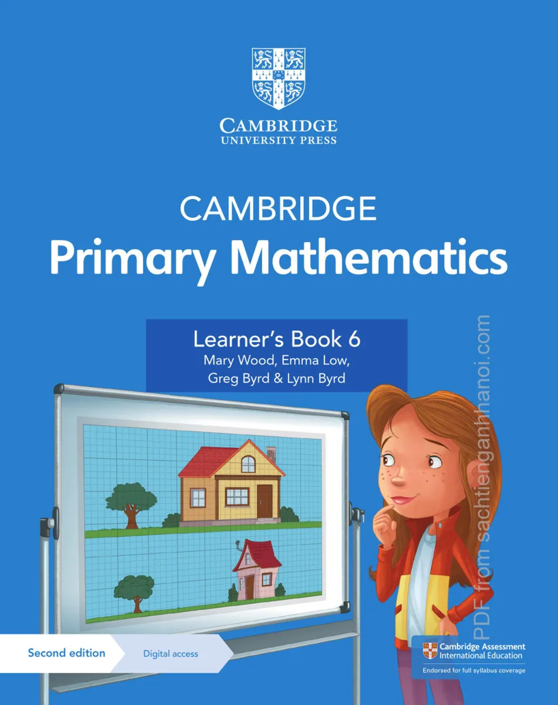
EữU - tui
CAMERIDGE
Primary Mathemodtics
Learner's Book ó
Mary Wood, Emma Low,
Greg Byrd & Lynn Byrd
Second edition
Digital access
/ International Education
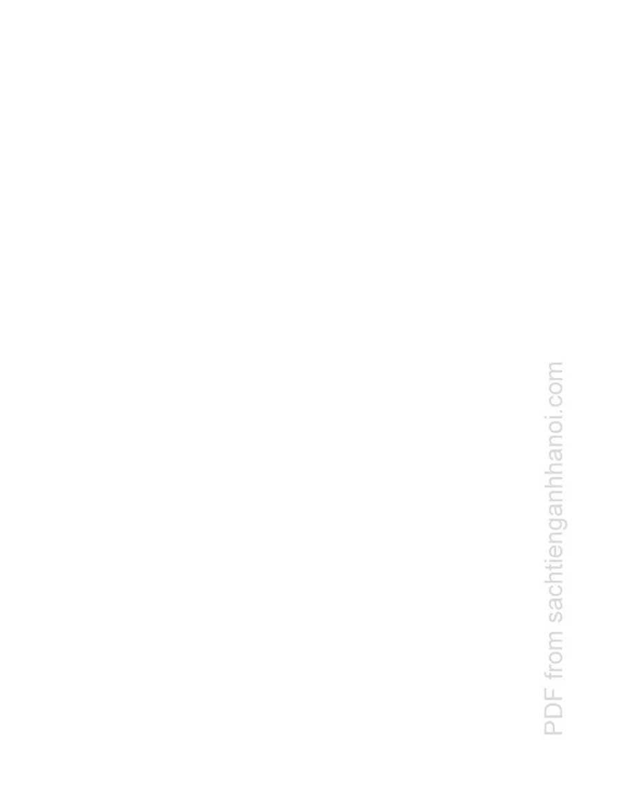
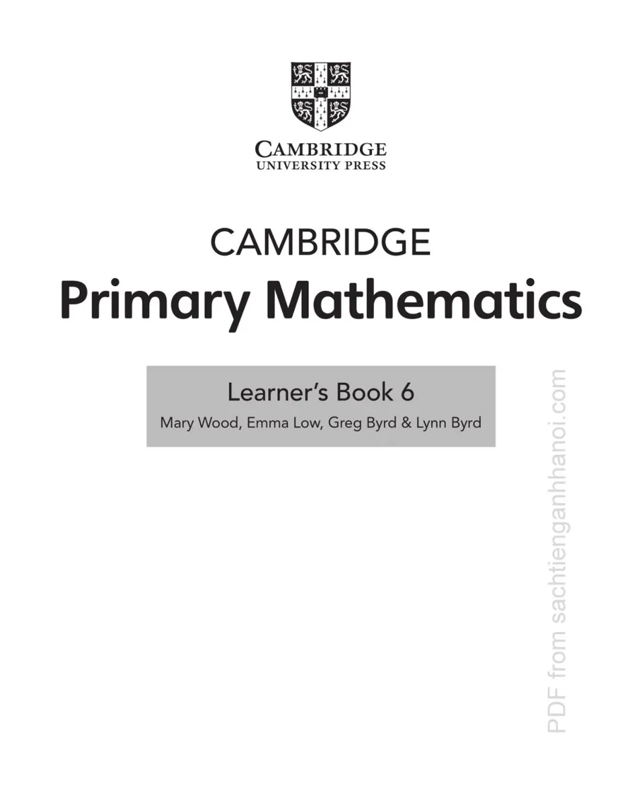
mm
MM - kế 3
CAMBRIDGE
UNIVERSITY PRESS
CAMBRIDGE
Primory Mathemedtics
Learners Book ó
Mary Wood, Emma Low, Greg Byrd & Lynn Byrd
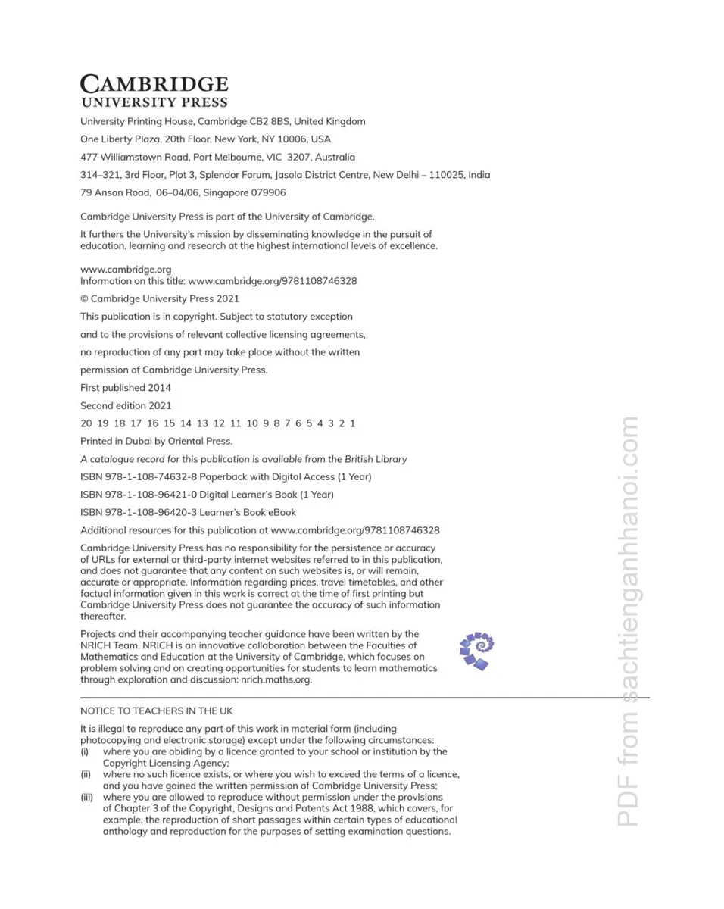
CAMBRIDGE
UNIVERSITY PRESS
University Printing House, Cambridge CB2 8BS, United Kingdom
One Liberty Plaza, 20th Floor, New York, NY 10006, USA
477 Williamstown Road, Port Melbourne, VỊC 3207, Australia
314-321, 3rd Floor, Plot 3, Splendor Forum, Jasold District Centre, New Delhi = 110025, lndia
79 Anson Road, 06-04/06, Singapore 079906
Cambridge University Press is part of the University of Cambridge.
Itfurthers the Ủniversit/'s mission by dissemindting knowledge in the pursuit of.
educodtion, learning and reseorch dt the highest internationdl levels of excellence.
www.combridge.org_
Informotion on this title: www.cambridge.org/9781108746328
© Cambridge University Press 2021
This publication is in copyright. Subject to statutory exception
and to the provisions of relevant collective licensing agreements,
no reproduction of any port moy take place without the written
permission of Cambridge University Press.
First published 2014
Second edition 2021
20 19 18 17 16 15 5 141312 1110987654321
Printed in Dubodi by Orientdl Press.
A catdlogue record for this publication is avdilable from the British Library
ISBN 978-1-108-74632-8 Paperbdack with Digitdal Access (1 Yeor)
ISBN 978-1-108-96421-0 Digitdl Learner's Book (1 Year)
ISBN 978-1-108-96420-3
Book eBook
Additiondl resources for this publication at www.cambridge.org/9781108746328
Cambridge University Press has no responsibility for the persistence or qccurdcy
of URLs for externdl Or third-porty internet websites referred toin this publicotion,
and does not guarantee that any content on sụch websites is, or will remoin,
qccurate or dppropriote. Informotion regarding prices, trovel timetobles, and other
factudl informotion given in this Work iS correct œt the time of first printing but
Cambridge University Press does not
theredfter.
the qccurdcy of such informotion
Projects and their qccompoơnying teqcher guidance have been Written by the
NRỊCH Team. NRỊCH Ís an innovotive collabordtion between the Faculties of
Mothemotics and Educotion at the University of Cambridge, which focuses on.
through explorotion and discussion: nrich.moths.org.
problem solving and on credting opportunities for students to learn mathemotics
NOTICE TO TEACHERS IN THE UK
Itis iIlegal to reproduce any port of this Work in meteriol form (including
photocopying and electronic storage) except under the following
() where you qre
licence granted †o your school or institution by the
Copyright Licensing Agency;
()
where no such licence exists, or where you wish to exceed the terms of d licence,
where you qre ollowed to reproduce without permission under the provisions
and you hgve gained the Written permission of Cambridge University Press;
(iii)
of Chapter 3 of the Copyright, Designs and Pdtents Act 1988, which COVeFS, for
example, the reproduction of short pgssgges within certdin types of educotiondl
anthology ơnd reproduction for the purposes of setting
questions.
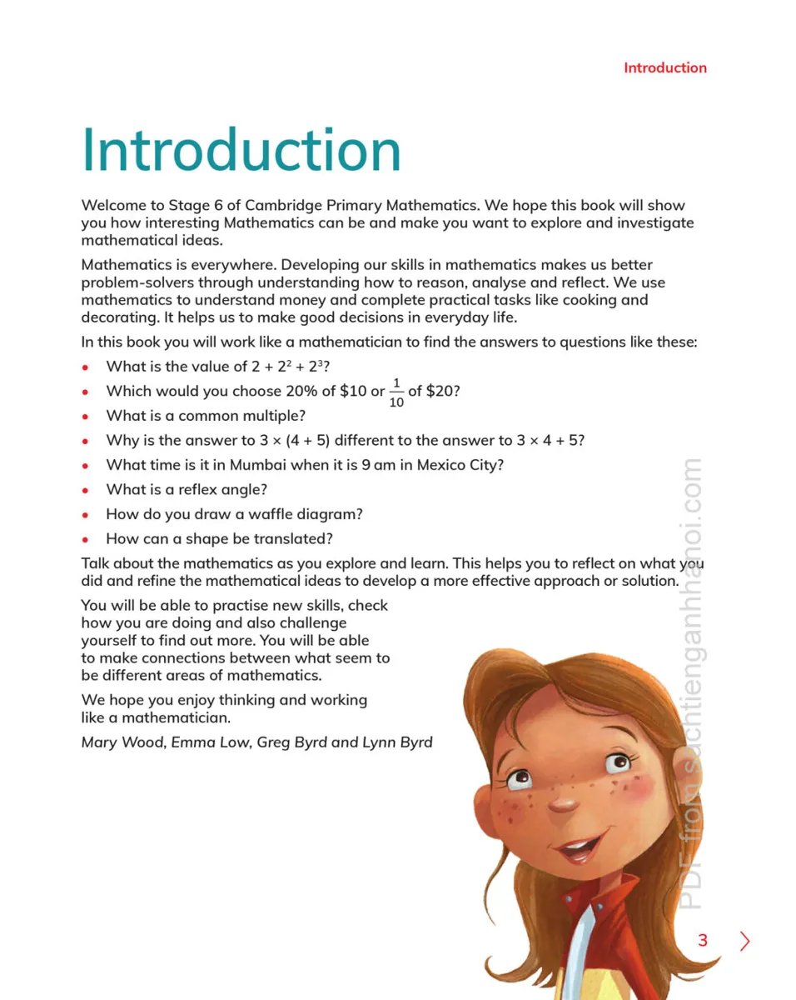
Introduction
Introduction
Welcome to Stage 6 of Cambridge Primary Mathemotics. We hope this book will show
you how interesting Mathemotics can be and make you wœnt to explore and investigate
IS everywhere. Developing our skills In mathemotics mokes uUS better
problem-solvers through understanding how to reqson, andlyse and reflect. \We use
mothemgtics to understand money and complete practicol tasks like cooking and
lt helps us to make good decisions in everyday life.
In this book you will work like a mathemotician to find the answers to questions like these:
What ¡is the vdlue of 2 + 22 + 2??
Which would you choose 20% of $10 or
10
1
of $20?
What is a common multiple?
Why ¡is the answer to 3 x (4 + 5) different to the answer to 3 x 4 + 5?
What time is ít in Mumbdi when tt is 9 am In Mexico City?
What is qa reflex angle?
How do you draw a wdffle diagram?
How can
shgpe be translated?
O
Talk qbout the mathemdtics as you explore and learn. This helps you to reflect on whot you
did and refine the mathemoticol ideos to develop Q more effective gpprodch or solution..
You will be able to practise new skills, check
how you dre doing and
challenge.
_
yourself to find out more. You wil be able
to make connections between what seem to
be different aregos of mathemotics.
We hope you enjoy thinking and working
like a mathemotician.
Mary Wood, Emma Low, Greg Byrd and Lynn Byrd
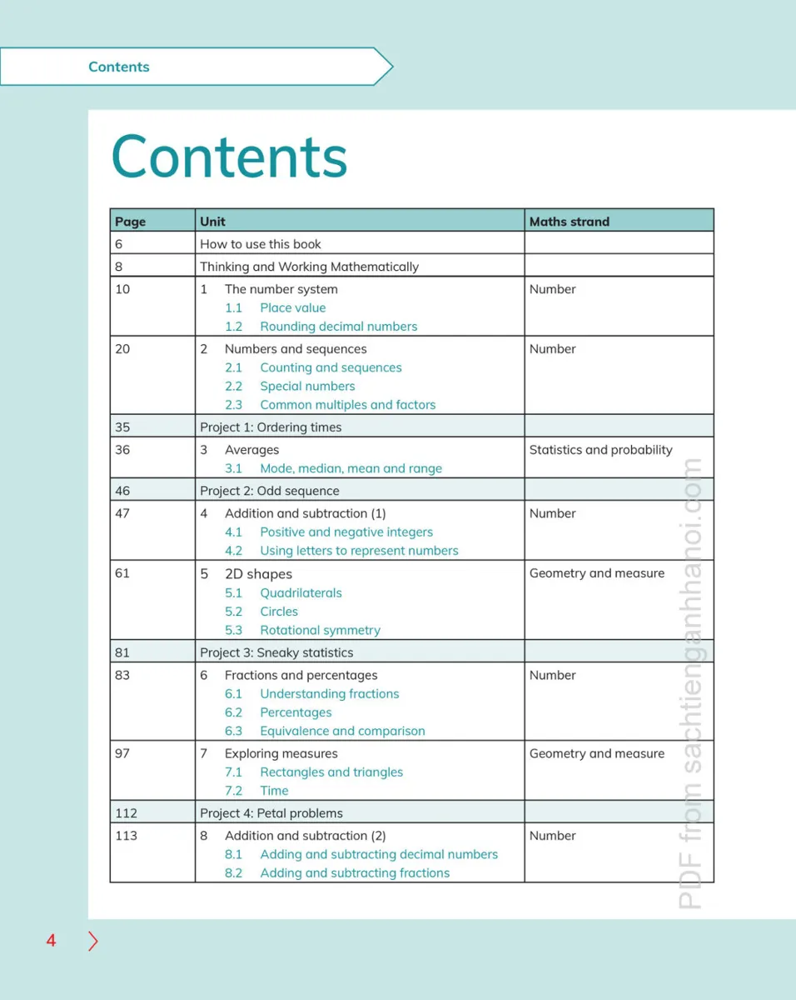
Contents
Contents
|Page
| Unit
Maths strand
6
How to use this book
|8.
Thinking and Working Mathemoticolly
10
1
The number system
| Number
Tuất:
Place vdlue
12
Rounding decimal numbers
|20
2
Numbers and sequences
| Number
2.1
Counting and sequences
Specidl numbers
23
Common multiples and factors
|35-
| Project 1: Ordering times
36
3
Avergges
and probgbility
Mode, median, mean and range
———
|46.
Project 2: Odd sequence
———
|47
4
Addition and
(1)
| Number
—.SS-
————
4.1
Positive and negdtive integers
4.2
Using letters to represent numbers
G1
5
2D shapes
Geometry and megsure
(Ũ
B1
Qugdrilaterdls
Circles
b:3
Rototiondl symmetry
81
Project 3: Snedky stotistics
|83
Fractions and percentgges
| Number
—
O
Understanding fractions
G.2
G.3
Equivdlence and comporison
|97
7
Exploring megsures
Geometry and megsure
(Œ
Rectangles and triangles
Œœ)
#2
Time
- —
112
Project 4: Petdl problems
—
113
8
Addition and subtrgction (2)
| Number
————>————
8.1
Adding and subtrdacting decimal numbers
L_
¬——
8.2
Adding and subtrogcting fractions
0
4
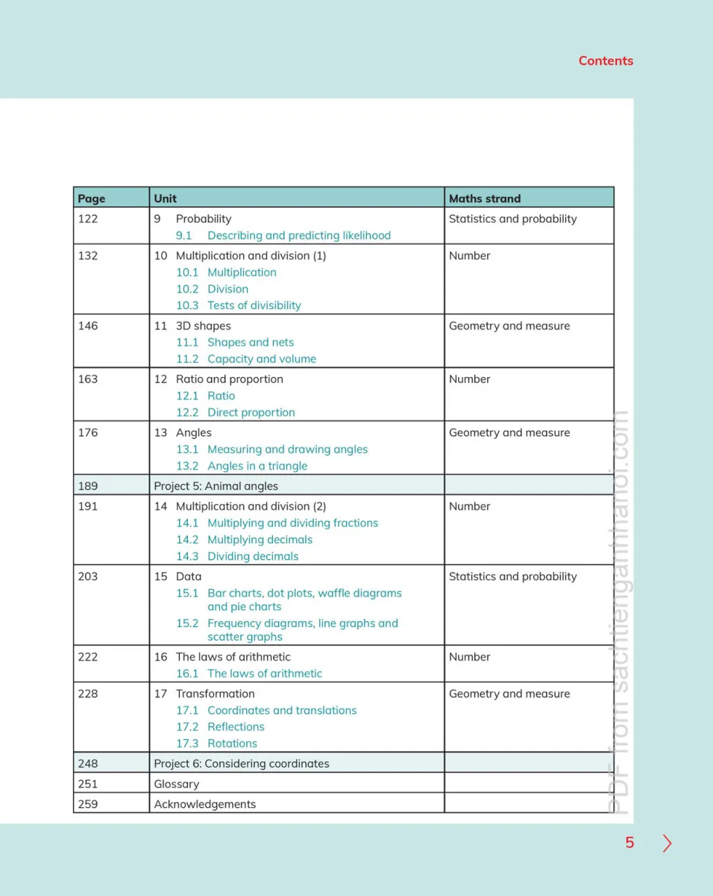
Contents
[Page
| Unit
Maths strand
| 122
9
Probgbility
Stotistics and probgbility
8/1
Describing and predicting likelihood
| 132
10 l
Multiplication and division (1)
Number
10.1
LŨ.2
Division
10.3
Tests of divisibility
| 146
11
3D shapes
Geometry and megsure
Ji
Shapes ơnd nets
11.2 Cdpocity and volume
| 163
12 I
Rodtio and proportion
Number
1241
115212.
Direct proportion
| 176
13 / Andles
Geometry and megsure
13.1
\ Megsuring and drawing angles
HỆc S2 Andles in q triangle
| 189
Project 5: Animadl angles
| 191
14_ Multiplication and division (2)
Number
141
l Multiplying and dividing fractions
14.2 Multiplying decimals
14.3 Dividing decimols
| 203
15T
Stotistics and probgbility
15:1 Bar chorts, dot plots, woffle diagrams
Ð)
and pie charts
D
15:2 Frequency diagrams, line graphs and
scotter grophs
| 222
16G T
The laws of arithmetic
Number
16.1 The laws of arithmetic
| 228
17 T
'Transformation
Geometry and megsure
Coordindtes and translations
17.2
Reflections
Rotdftions
| 248
Project 6: Considering coordindates
251.
| Glossory
|259.
Acknowledgements
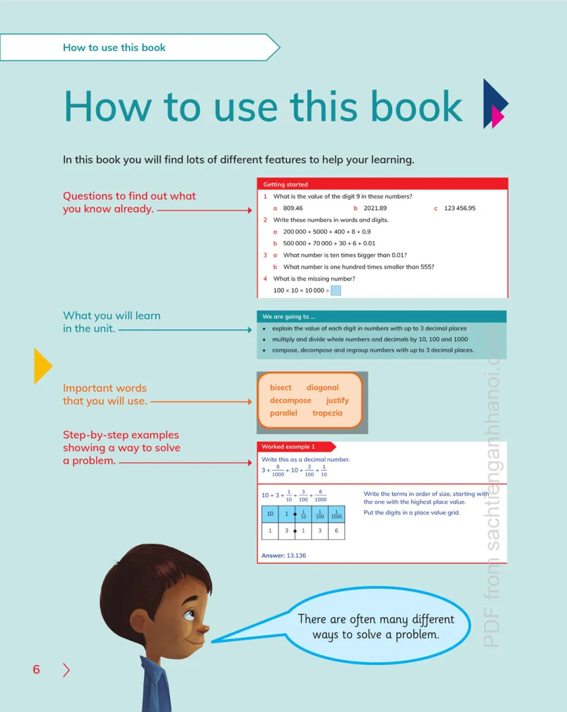
How to use this book
How to use this book
In this book you wIll find lots of different features to help your learnindg.
'Questions to find out
1
What is the vdalue of the digit 9 in these numbers?
you know qlreodky.
a_
809.46
b_
2021.89
c
123456.95
Write these numbers in words and digits.
200000 + 5000 + 400 + 8 + 0.9
_
500000 + 70 000 + 30 + 6 + 0.01
3a
What number is ten times bigger than 0.01?
b_
What number is one hundred times smdller than 555?
What is the missing number?
100 x 10 = 10 000 + |
What you will learn
We dre going to...
¡in the unit.
›
expldin the value of edch digit in numbers with up to 3 decimal places
multiply and divide whole numbers and decimols by 10, 100 and 1000
compose, decompose œnd regroup numbers with up to 3 decimadl places.
6
3
—
Important words
bisect
diagondal
pardllel
trapezid
Step-by-step examplesr
showing woy to solve
g problem..
¬ this œsq decimel number.
3+-
-100 10
3
6
10+3+
Write the terms in order of size, storting with-
10 MU 100
1000
the one with the highest ploce value.
10
10
100
1000
Put the digits in a place vdlue grid.
|3$:|?2{s
Answer: 13.136
There are oƒten manu diljerent
wgqus to solve da problem.
C)
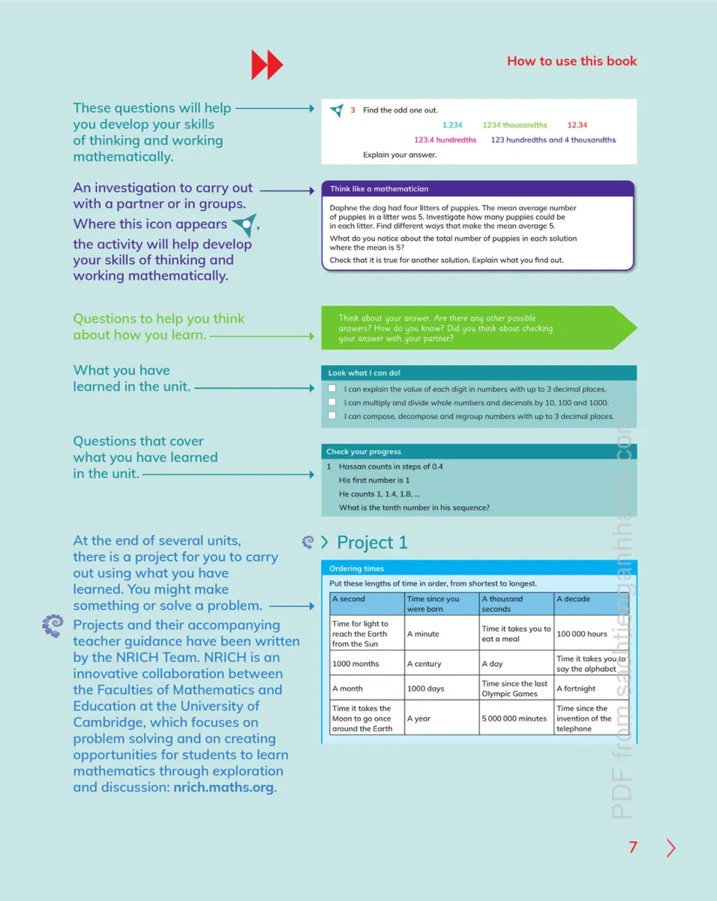
How to use this book
These questions will help
3
Find the odd one out.
you develop your skills
1.234
1234 thousandths
of thinking and working
123.4 hundredths
123 hundredths and 4 thousandths
mathemoticdlly.
Explain your answer.
An investigation to corry out
ị
Think like a mathemotician
with q partner or In groups.
Dophine the dog hd four
pupples:
avsrage nurnbeT
Where this icon appeors
`
of pu
na litter wos 5. InVes
how ma ny pUppies c 5
|
in eqch litter. Find different
thơt mqke the mean
5:
the activity will help develop
where the mean is 57.
do ÿBU RØHSE
the total number of puppies in each solution
your skills of thinking and
working mathematicolly.
Questions to help you think
gqbout how you leqrn.
What you hgve
learned In the unit.
Questions that cover
whdt you hoave
¡in the unit.
At the end of severdl units,
there is q project for you to coarry
out using
you have
learned. You might make
something or solve problem.
-
Projects and their qccompơnying
Check that it is true for another solution. Explgin what you find out.
Thinh about uour answer. Are there anu other possible
answers? How do uou know? Did uou think gbout checking
answer with
partner?
Look what I can do!
| can explgin the vdlue of
digit in numbers with up to 3 decimdl places.
| can `.
decompose ơnd regroup numbers with tp †o 3 decimal places.
can multiply and divide whole numbers and decimals by 10, 100 and 1000.
| —
=
(39
1
Hassơn counts in steps of 0.4
His first number is 1
He counts 1, 1.4, 1.8,..
Whdt is the tenth number in his sequence?
@> Project 1
lì mes
Put these lengths of time in order, from shortest to longest.
A second
EM
A thousand
A decode
were born
seconds
Lo TöF
redch the Earth
tổ ỊA minute
| Time ít tokes you to
teacher guidance have been written
eqt
medl
| 100 000 hours
from the Sun
by the NRICH Team. NRICH is an
| 1000 months
| A century
A day
Tinï ít 0S you e0
innovdtive
between
say the olphobet _
the Faculties of Mathemotics and
|A month
1000 doys
last
|A fortnight
Olympic Games
|
Educotion at the University of
LẺ ỊA year
Moon to go once
| 5000 000 minutes
invention of the
|Time since the
Cambridge, 'which focuses on
the Earth
problem solving and on credting
telephone
opportun ities †or students to leo rn
=
mqthemotics through explorotion
LL
A
7
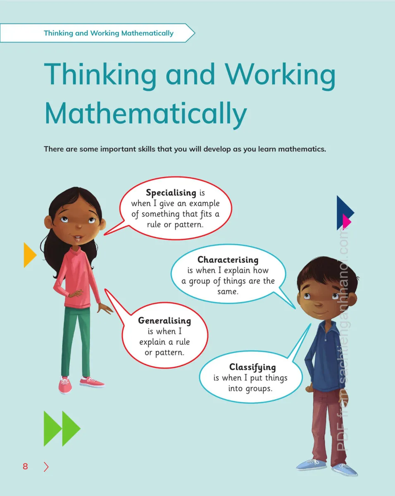
Thinking and Working Mathemoticdlly
Thinking and Working
Mathemoticdlly
There are some Iimportant skills that you will develop as you learn mathemgtics.
Specialisindg ¡s
when Ï give an example
oƒ something that ƒits a
rule or pattern.
Characterising
is when Ï explain how
a group oƒ things are the
Same.
Generalising
is when Ï
explain a rule
Or pattern.
Lassiƒu tng
is when Ï put things
Into groups.
8
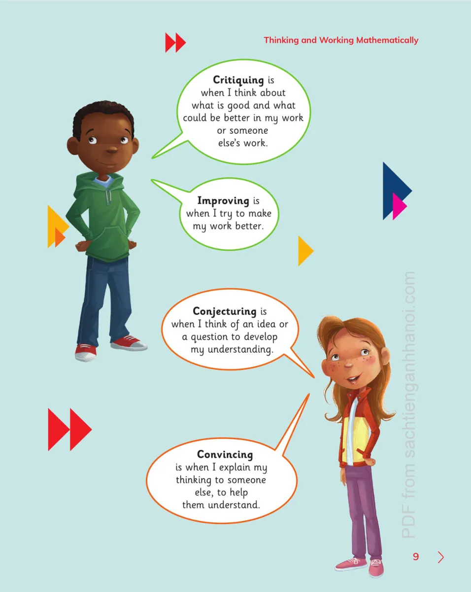
Thinking and Working
Critiquing
when | thinh about
what is good and whot
could be better in mu work
OFr Ssomecone
elses work.
Improvindg ¡s
when Ï trụ to make
mu work better.
Conjecturing ¡is
when Ï thinh oƒ an tdea or
a question to develop
mụ understanding
Convincing
is when Ï explain mụ
thinking to someone
else, to help
them understand.
C)
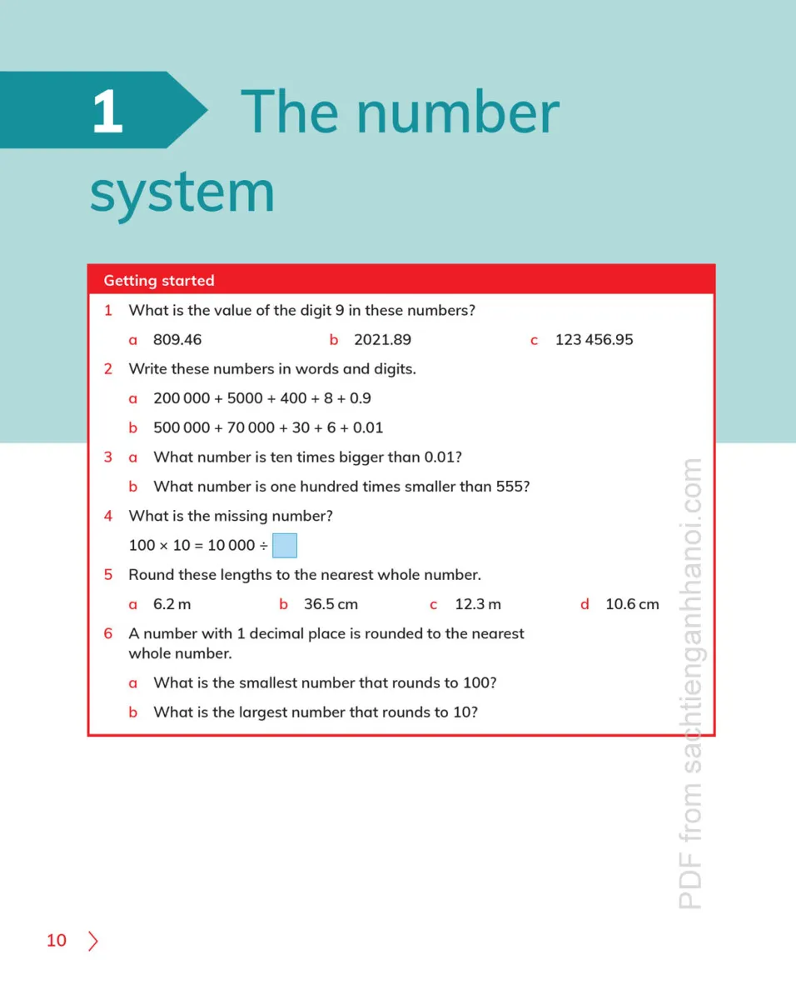
The number
system
Getting storted
\What is the vdlue of the digit 9 in these numbers?
309.46
b
2021.89
123456.95
Write these numbers in words and digits.
le|
200 000 + 5000 + 400 + 8+ 0.9
500 000 + 70 000 + 30 +6+0.01
le|
What number Is ten times bigger than 0.01?
b_
What number Is one hundred times smdller than 555?
4
What is the missing number?
100 x 10 = 10 000 -
Round these lengths to the nearest whole number.
6.2m
b_36.5cm
c
12.3m
10.6cm
A numbser with 1 decimal place Is rounded to the neorest
whole number.
l@|
Whot ¡s the smallest number that rounds to 100?
What ¡s the largest number that rounds to 10?
NH
HH HH
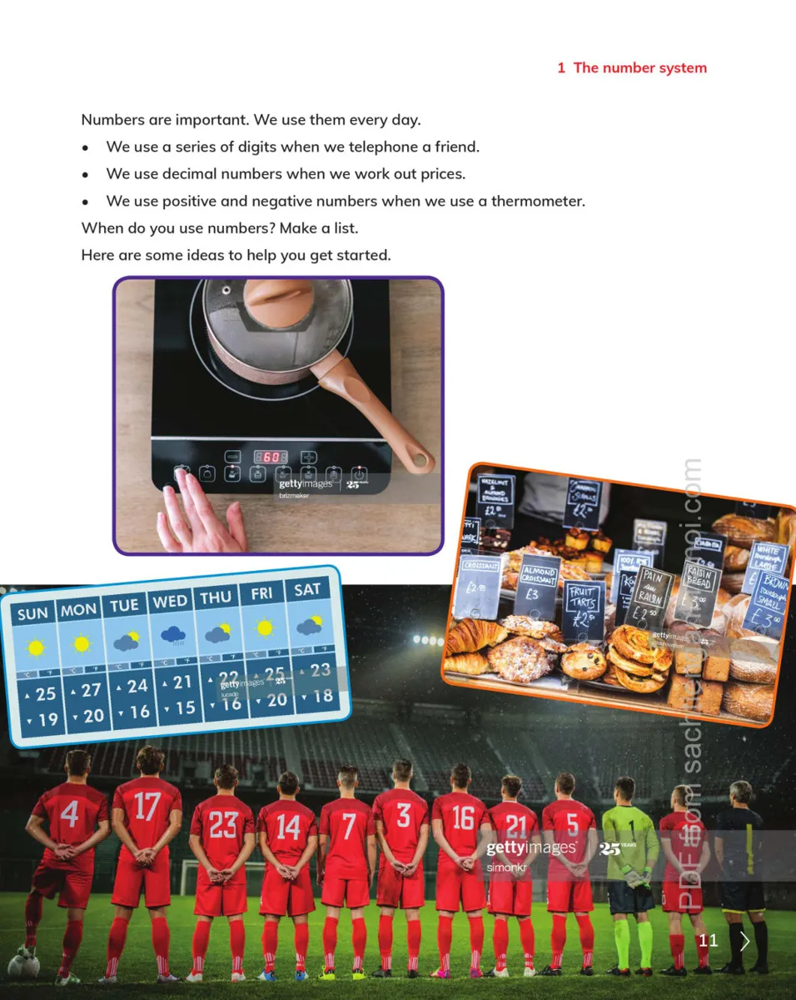
1 The number system
Numbers are Important. We use them every doy.
\We use dq series of digits when we telephone d friend.
\We use decimal numbers when we work out prices.
\We use positive and neggdtive numbers when we use Q thermometer.
When do you use numbers? Make dq list.
Here are some Idegs to help you get storted.
8888
gettyim
'WED |
FRI
SAT
£3
SUN
Ì MON] (TUE
"`7
.27
› 25
l6
20
‹ 18
Y
15
19
20
4
17
14
21
h
P5%
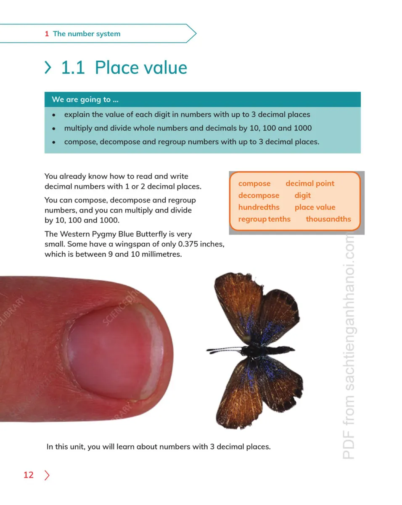
41 The number system
›> 1.1 Place vdlue
We are going to..
expldin the vdlue of eqch digit in numbers with up to 3 decimal places
multiply and divide whole numbers and decimals by 10, 100 and 1000
compose, decompose and regroup numbers with up to 3 decimdl places.
You already know how to regd and write
decimal numbers with 1 or 2 decimal plqaces.
compose
decimal point
decompose
You can compose, decompose ơnd regroupb
digit
numbers, and you can multiply and divide
hundredths
place vdlue
by 10, 100 and 1000.
regroup tenths
thousandths
The Western Pygmy Blue Butterfly is very
smadll. Some have a Wingspơn of only 0.375 inches,
which Is between 9 and 10 millimetres.
In this unit, you will learn aqbout numbers with 3 decimdl plqaces.
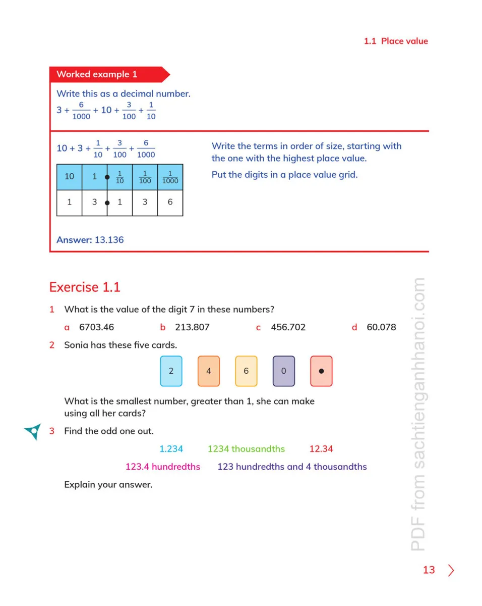
1.1 Place value
'Worked example 1
Write this as a decimol number.
K
6
+ 10+:
3
“1
1000
100 -10
10+3~+
1
3.
6-
Write the terms in order of size, starting with
10 100
1000
the one with the highest place vdlue.
10
1
1ö
1
1
100
1000
Put the digits in a place vdlue grid.
1
3
1
3
O
Answer: 13.136
Exercise 1.1
ii
What is the vdlue of the digit 7 In these numbers?
g
6703.46
b_
213.807
C
456.702
60.078
Sonigd has these five cards.
z
O
What is the smadllest number,
than 1, she can make
using dll her cards?
Find the odd one out.
1234 thousandths
12.34
123.4 hundredths
123 hundredths and 4 thousandths
Expldin your answer.
L_ =
8
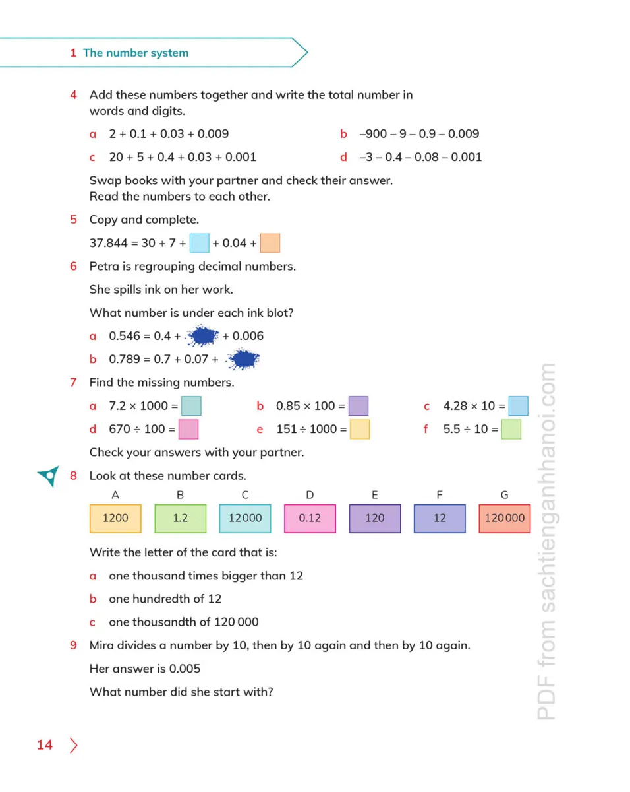
41 The number system
Add these numbers together and write the total number In
Wwords and digits.
l@)
2+0.1+0.03+0.009
b
-900 —9—0.9-0.009
20+5+0.4+0.03 + 0.001
3 -0.4- 0.08 - 0.001
Swdqp books with your partner and check their answer.
Redd the numbers to eqch other.
5B
Copy and complete.
37.844 = 30 + 7+
'+0.04 +;
Petrd Is regrouping decimal numbers.
She spills ink on her work.
What number ¡is under
ink blot?
a
0.546=0.4+.
° + 0.006
0.789=0.7+0.07+
Find the missing numbers.
7.2 x 1000 =.
0.85 x 100 =
C
4.28 x 10 ='
d_ 670+100=.
151 + 1000 ¬
5,5 + 10 =|
Check your answers with your pdrtner.
Look at these number cords.
A
B
C
D
E
F
G-
1200
12000
0.12
120
02
120000
Write the letter of the cord thot is:
lel
one thousơnd times bigger than 12
one hundredth of 12
one thousandth of 120 000
9
Mirad divides a number by 10, then by 10 agdin ơnd then by 10 again.
Her answer Is 0.005
What number did she start with?
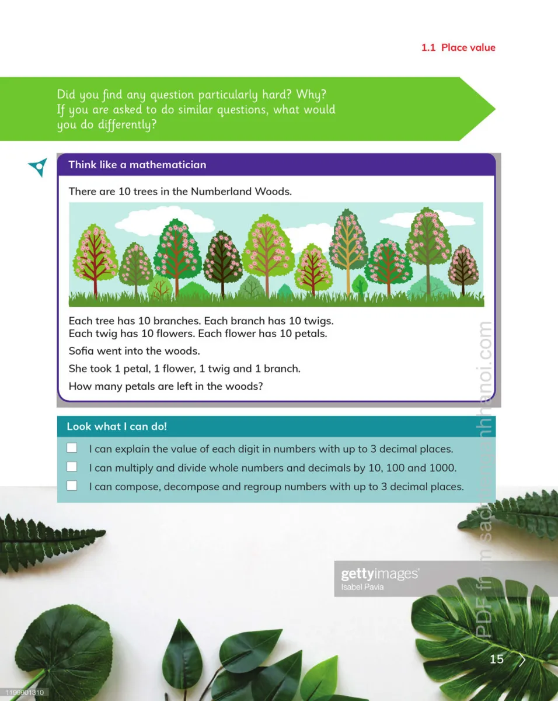
1.1 Place vdlue
Did uou ƒnd anu question particularlu hard? Whu?
lƒ
are asked to do similar questions, what would
uou do differentlu?
Think like a mathemotician
There are 10 trees In the Numberland \Woods.
Each tree has 10 branches. Each branch has 10 tWigs.
Each twig hgs 10 flowers. Each flower has 10 petdls.
Sofia went into the woods.
She took 1 petol, 1 flower, 1 twig and 1 branch.
How many petols
left in the woods?
Look what | can dol
| can expldin the vdlue of eqch digit in numbers with up to 3 decimol places.
| can multiply and divide whole numbers and decimols by 10, 100 and 1000.
| can compose, decompose œnd regroup numbers with up to 3 decimal places.
lsabel Pavia.
15
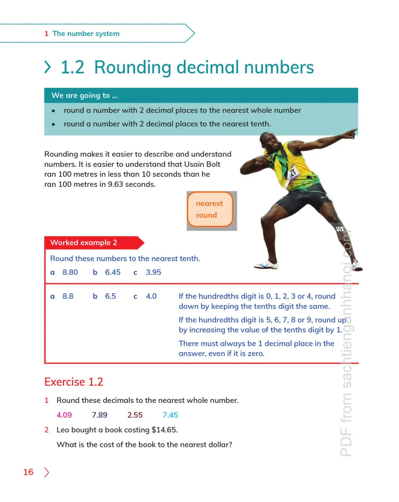
41 The number system
› 1.2 Rounding decimdl numbers
We
going to.
round ga number with 2 decimol places to the nedrest whole number
round g number with 2 decimal places to the neorest tenth.
Rounding makes It egsier to describe and understand
numbers. lt is easier to understand that UJsoin Bolt
ran 100 metres in less than 10 seconds than he
ran 100 metres In 9.63 seconds.
round
Worked example 2
Roundl these numbers to the
tenth.
a
8.80
b
6.45
C
3.85
a
8.8
b
6.5
C
4.0
lf the hundredths digit ¡is 0, 1, 2, 3 or 4, round
down by keeping the tenths digit the same.
lf the hundredths digit is 5, 6, 7, 8 or 9, round up:
by incregsing the vdlue of the tenths digit by 1.
There must
be 1 decimal place in the
(
anSW€Y, even Iïf ¡t is zero.
Exercise 1.2
œ)
Round these decimodls to the nedrest whole number.
789
2.55
7.45
2
Leo bought a book costing $14.6B.
Whot ¡is the cost of the book to the nedrest dollar?
16
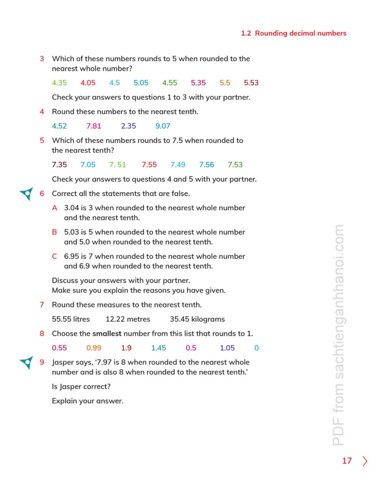
1.2 Rounding decimal numbers
Which of these numbers rounds to 5 when rounded to the
neorest whole number?
4.35
4.5
4.55
5.35
5.53
Check your answers to questions 1 to 3 with your
Roundl these numbers to the neorest tenth.
4.52
2 2
9.07
Which of these numbers rounds to 7.5 when rounded to
the nearest tenth?
Z. 51
7.49
7.56
Check your answers to questions 4 and 5 with your portner.
Correct dll the statements that ore folse.
A
5 3.04 ¡is 3 when rounded to the neorest whole number
ơnd the neorest tenth.
5.03 ¡s 5 when rounded to the nedrest whole number
ơnd 5.0 when rounded to the nearest tenth.
6.95 ¡is 7 when rounded to the neorest whole number
ơnd 6.9 when rounded to the nearest tenth.
Discuss your answers with your portner.
Make sure you explgin the reasons you have given.
Round these megsures to the neorest tenth.
B55.5B litres
12.22 metres
35.45 kilograms
Choose the smollest number from this list that rounds to 1.
0.55
0.99
18
1.45
1.05
0
Jasper says, “7.97 ¡is 8 when rounded to the nedrest whole
number ơnd ¡s also 8 when rounded to the neorest tenth.
ls Jasper correct?
Explain your answer.
L_
=
A_.
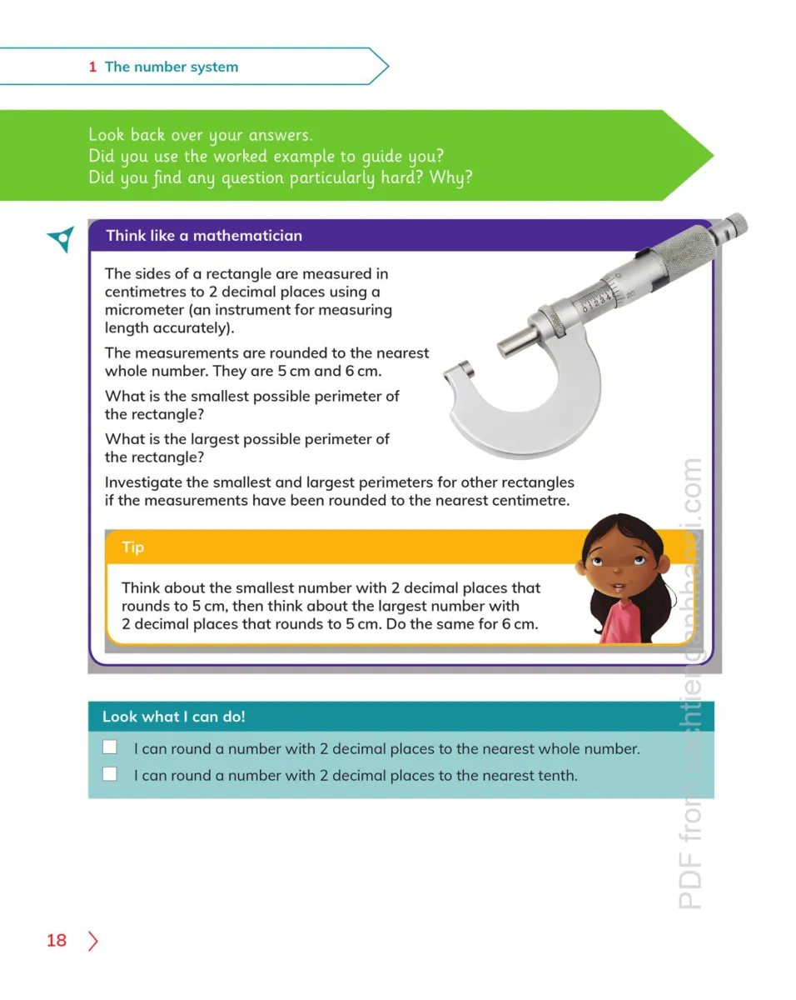
41 The number system
Look back
UOuF
Did Uou use the worked example to guide
Did Uou ƒtnd anu question porticular|u hard? Whu?
like a
The sides of a rectangle re megdsured In
centimetres to 2 decimdl places using Q
micrometer (an instrument for megsuring
length accurately).
The megsurements are rounded to the neorest
whole number. They are 5 cm and 6 cm.
What IS the
possible perimeter of
the rectangle?
What IS the largest possible perimeter of
the rectangle?
Investigote the smallest and largest perimeters for other rectangles
If the megsurements have been rounded to the nedrest centimetre.
Tip
Think qbout the smdllest number with 2 decimodl places that
rounds to 5 cm, then think about the largest number with
2 decimal places that rounds to 5 cm. Do the same for 6 cm.
®
Look what | can do!
c
| can round Q number with 2 decimol places to the negrest whole number.
| can round ga number with 2 decimal places to the neorest tenth.
A
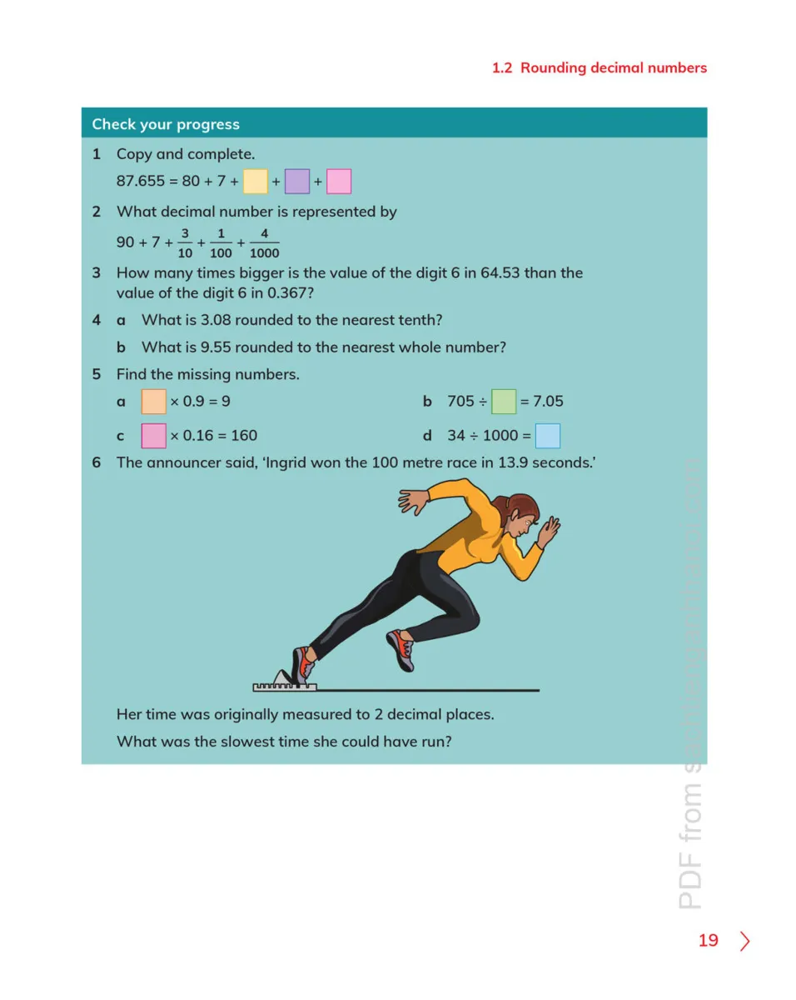
1.2 Rounding decimal numbers
Check your progress
1
Copy and complete.
87.655=80+ 7+
2
What decimal number is represented by
3
1
4
10 100 1000
3
How mơny times bigger ¡s the vdlue of the digit 6 In 64.53 than the
vdlue of the digit 6 in 0.367?
4
What ¡s 3.08 rounded to the neorest tenth?
b_
Whatis 9.55 rounded to the nearest whole number?
5_
Find the missing numbers.
qa
x0.9=9
b 705+ '=7.05
x 0.16 = 160
d
34+z1000=
6
The announcer sơid, 'Ingrid won the 100 metre rdce In 13.9 seconds.'
Her time wgs origindlly megsured to 2 decimol places.
What wos the slowest time she could have run?
Ư2)
=
aA_-
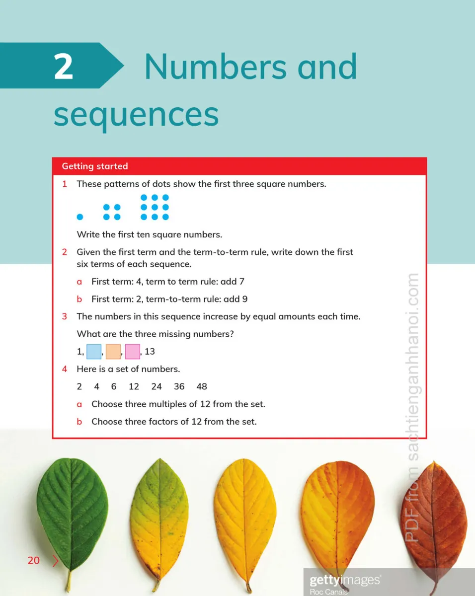
Numbers and
Sequences
Getting started
1
These patterns of dots show the first three squdre numbers.
Write the first ten squodre numbers.
7
Given the first term and the term-to-term rule, write down the first
six terms of eqch sequence.
First term: 4, term to term rule: dd Z7
b
First term: 2, term-to-term rule: dd 9
The numbers in this sequence Iincregse by equdl amounts eqch time.
What œre the three missing numbers?
1,
13
Here ¡s a set of numbers.
2
4
6G
12
24
36
48
le|
Choose three multiples of 12 from the set.
Choose three factors of 12 from the set.
(
œ
8
207
gettyimages
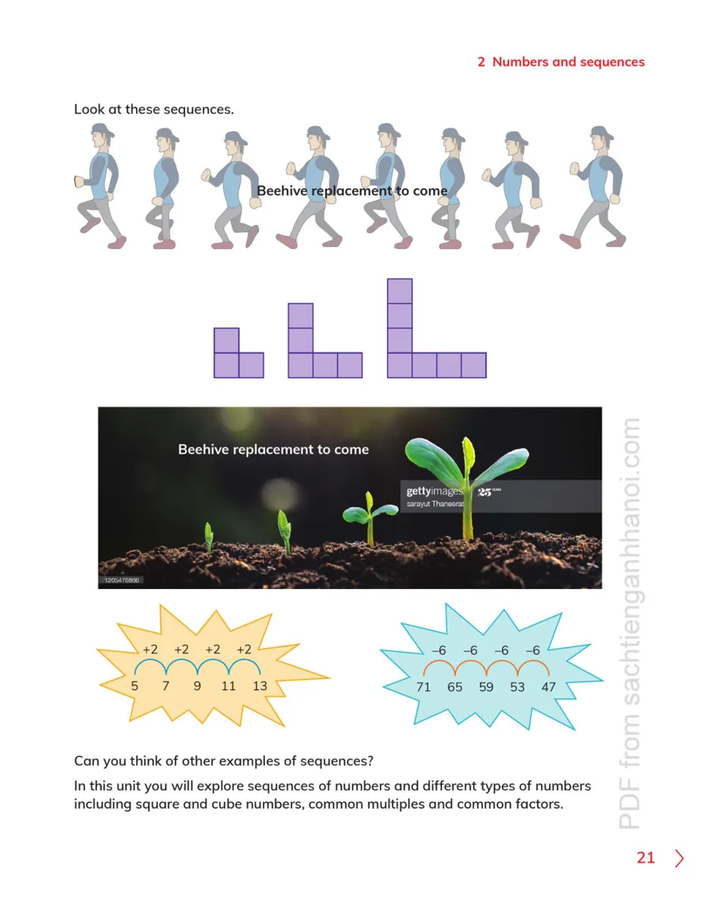
2 Numbers and sequences
Look at these sequences.
Nó ẤT
Beehive replacementfo
iu,
Beehive replacement to come
gettyimageS
sarayut Thaneerat
s
1205476866
+2
65
47
Can you think of other examples of sequences?
In this unit you wIll explore sequences of numbers and different types of numbers
including squore and cube numbers, common multiples and common fgctors.
aA_-
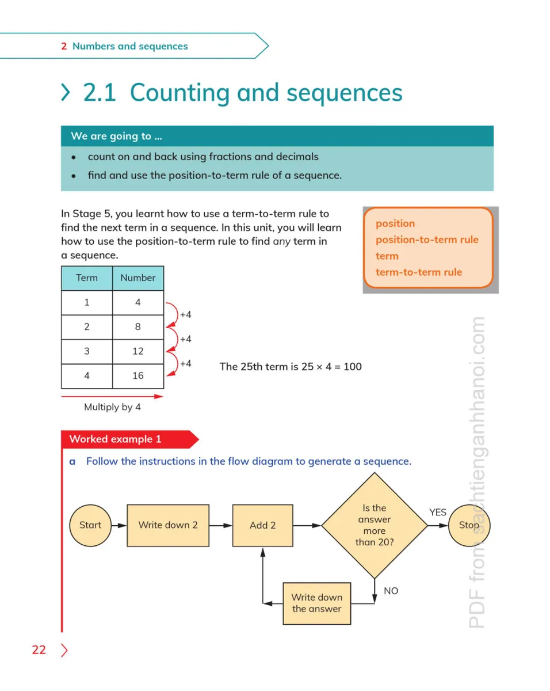
2 Numbers and sequences
› 2.1 Counting and sequences
\We qœre going to ..
count on and back using fractions and decImadls
find and use the position-to-term rule of q sequence.
In Stage 5, you learnt how to use da term-to-term rule to
find the next term In a sequence. In this unit, you will learn
position
how to use the position-to-term rule to find any term In
position-to-term rule
Q Sequence.
Term
Number
term-to-term rule
1
4
+4
2
8
+4
3
12
+4
The 25th term is 25 x 4= 100
4
16
Multiply by 4
Worked example 1
®
Follow the instructions In the flow diagram to generate a sequence.
ls the
đanSWe€Fr
LÍ]
YES
Stort
Write down 2
Add 2
Stop
more
thơn 20?
NO
Write down
LL_
the answer
=
D
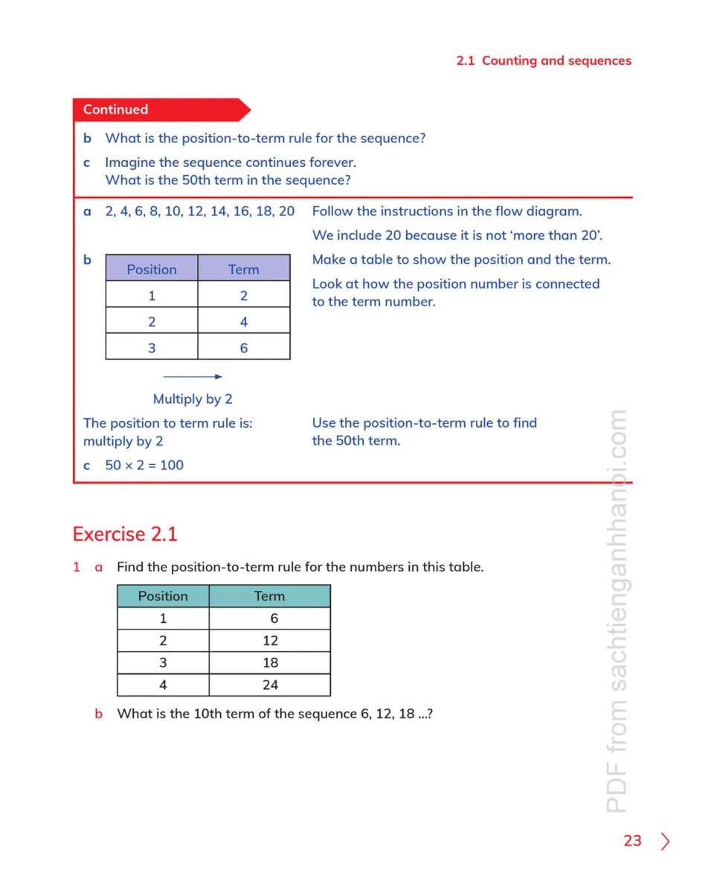
2.1 Counting and sequences
Continued
b
What is the position-to-term rule for the sequence?
lmagine the sequence continues forever.
What is the 50th term in the sequence?
®
2,4,6, 8, 10, 12, 14, 16, 18, 20
Follow the instructions in the flow diagram.
\We include 20 becquse ït is not “more than 20'.
b
Position
Term
Make dq tgble to show the position and the term.
+
L
Look at how the position number is connected
to the term number.
^
kÀ
kà
6
Multiply by 2
The position to term rule Is:
Use the position-to-term rule to find
multiply by 2
the 50th term.
C
50 x 2 = 100
Exercise 2.1
Find the position-to-term rule for the numbers In this table.
Position
Term
1
6
2
12
3
18
4
24
What is the 10th term of the sequence 6, 12, 18...?
A
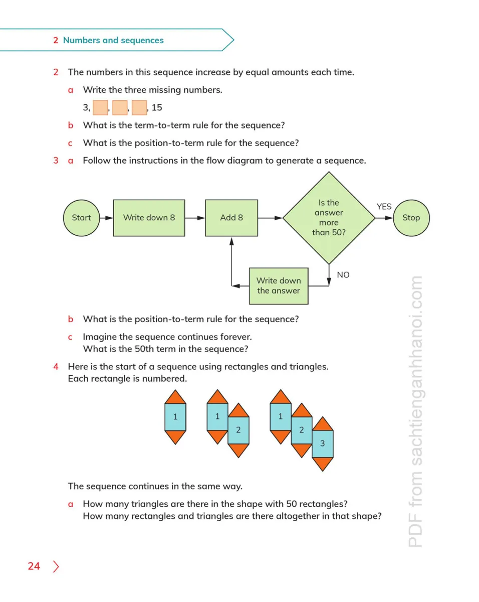
2 Numbers and sequences
2
The numbers in this sequence Iincregse by equdl amounts eqch time.
Write the three missing numbers.
3. L]
; LỘ
What is the term-to-term rule for the sequence?
What is the position-to-term rule for the sequence?
Follow the instructions In the floòồw diagram to generate a sequence.
|s the
YES |
Write down 8
Add 8
đanSWer
Stort
more
Stop
than 50?
Write down
NO
the answer
b
What is the position-to-term rule for the sequence?
lmagine the sequence continues forever.
Whot is the 50th term in the sequence?
Here is the start of a sequence using rectangles and triangles.
Each rectangle IS numbered.
1
1
2
3
The sequence continues in the same woy.
How mơny triangles are there in the shape with 50 rectangles?
How mưny rectangles œnd triangles are there altogether in that shape?
A
24
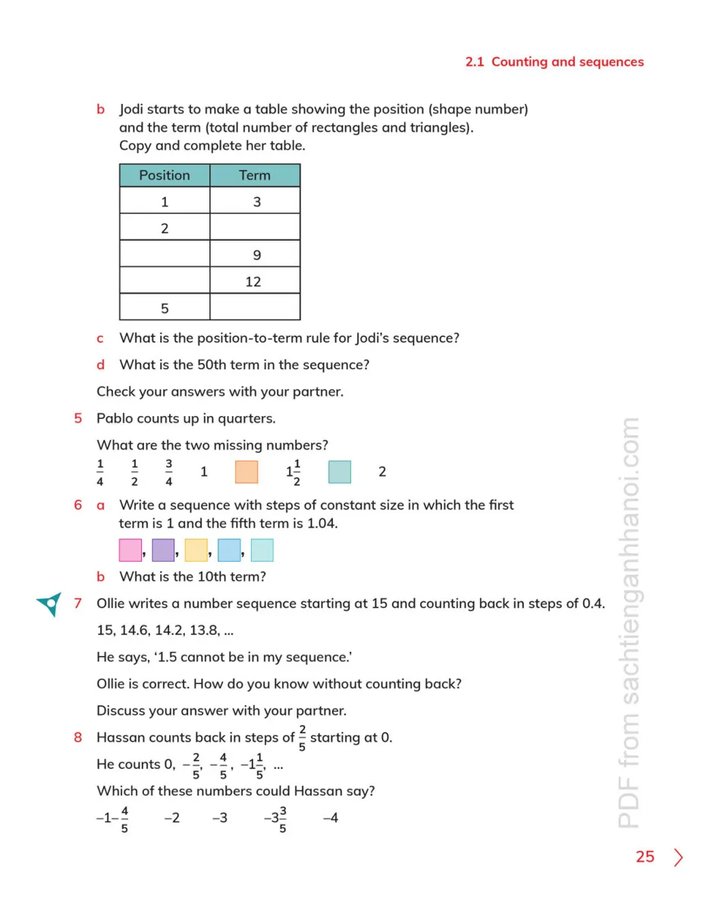
2.1 Counting and sequences
Jodi starts to make Q table showing the position (shape number)
and the term (total number of rectangles and triangles).
Copy ơnd complete her table.
Position
Term
“1
3
^
3
12
5
What is the position-to-term rule for Jodi's sequence?
d_
What is the 50th term in the sequence?
Check your answers with your pdrtner.
Pablo counts up in quodrters.
What are the two missing numbers?
5
1
1
2
2
4
2
le|
Wite a sequence with steps of constant size In which the first
term is 1 and the fifth term ¡s 1.04.
[}
141
16
b_
What ¡is the 10th term?
Ollie writes a number sequence storting at 15 and counting back in steps of 0.4.
15, 14.6, 14.2, 13.8,...
He soys, “1.5 cannot be in my sequence.'
Ollie is correct. How do you know without counting back?
Discuss your answer with your partner.
starting at 0.
5
He counts 0, —
2
4
5
...
5
5
Which of these numbers could Hassơn say?
=2
—3
=
-4
A_.
5
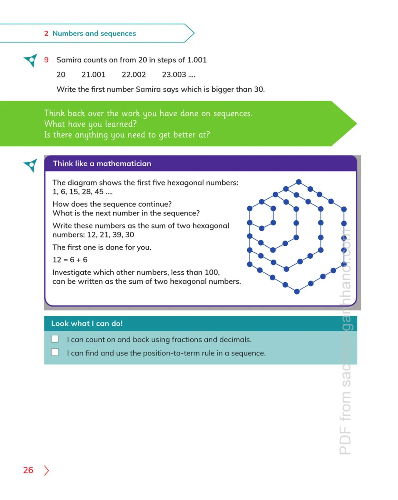
2 Numbers and sequences
Samird counts on from 20 in steps of 1.001
20
21.001
22.002
23.003...
Write the first number Samirda says which ¡s bigger than 30.
Thinh bạch over the work uou hoave done on sequences.
What have uou learned?
IỆ there anuthing uou need to get better at?
Thiínk like a mathemogtician
The diagram shows the first five hexagondl numbers:
4,6, 15, 28, 45....
How does the sequence continue?
What ¡is the next number in the sequence?
Write these numbers 0s the sum of two hexqagondl
numbers: 12, 21, 39, 30
The first one Is done for you.
12=6+6
lnvestigate which other numbers, less than 100,
can be written gS the sum of two hexagondl numbers.
(Œ
Look what | can do!
l®))
:
| can count on and back using fractions and decimols.
| can find and use the position-to-term rule in a sequence.
( 2
26
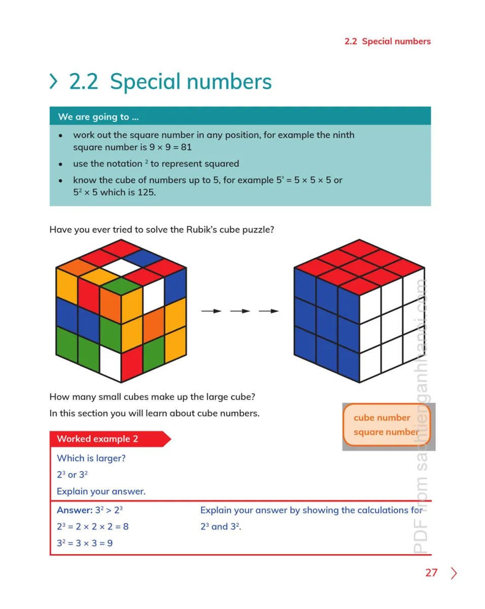
2.2 Special numbers
› 2.2 Specidl numbers
\We qœre going to ...
Wwork out the squdre number In any position, for example the ninth
squore number is 9 x 9 = 81
use the notation ? to represent squored
know the cube of numbers up to 5, for example 5° = 5 x 5 x 5 or
5? x 5 which is 125.
Hove you ever tried to solve the Rubik's cube puzzle?
Ũ
How many smadll cubes make up the large cube?
Ϩ
In this section you wIll learn gbout cube numbers.
cube number
_Worked example 2
squdre number
Which ¡s larger?
(Ũ œ)
z t3?
Explain your answer.
Answer: 3? > 2?
Explain your answer by showing the calculations for
23 and 3”.
đà
3
D
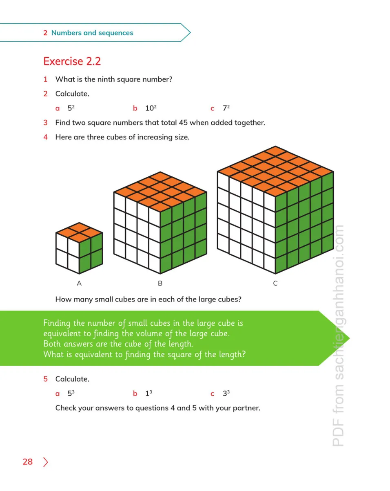
2 Numbers and sequences
Exercise 2.2
1
What is the ninth squodre number?
—_
Colculote.
102
7
Find two squdre numbers that totdl 45 when added together.
4_
Here are three cubes of incregsing size.
A
B
C
How many smadll cubes
In each of the large cubes?
Finding the number oƒ small cubes in the large cube is
`
equivalent to ƒtnding the volume oƒ the large cube.
Both qnSWers:
the cube oƒ the length.
Ì
What is equivalent to ƒnding the
oƒ the length?
5B
Calculate.
a
53
13
3%
Check your answers to questions 4 and 5 with your portner.
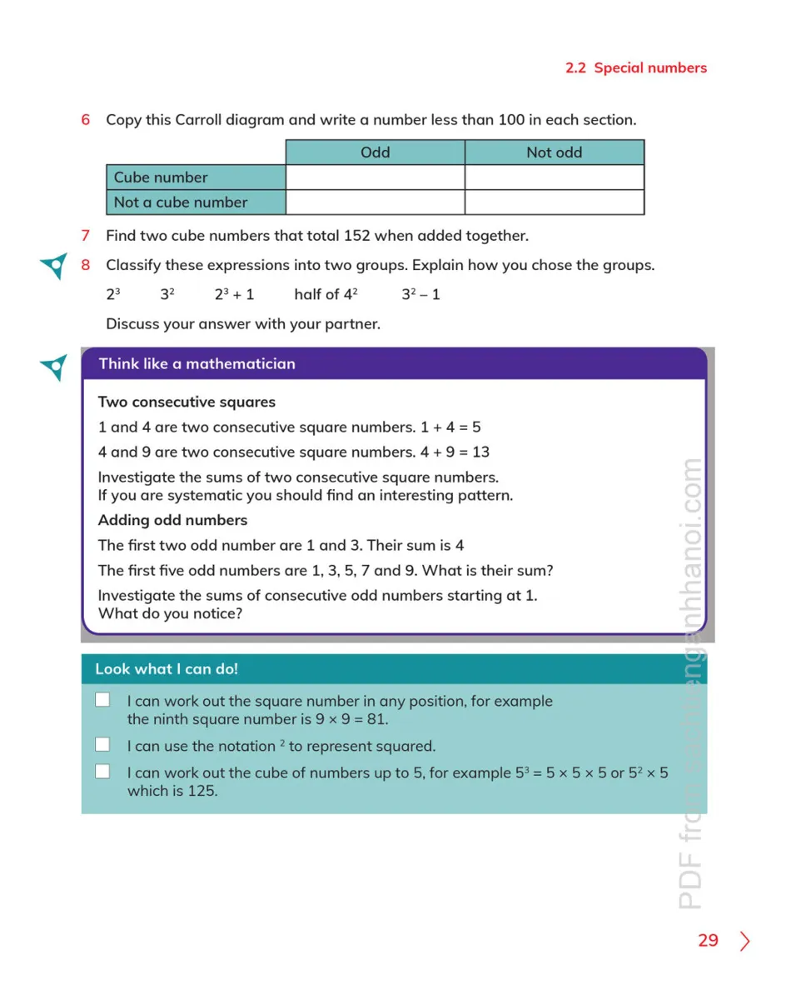
2.2 Special numbers
Copy this Carroll diagram and write a number less than 100 in
section.
Odd
Not odd
Cube number
Not a cube number
Find two cube numbers that totdl 152 when added together.
Classify these expressions Into two groups. Explgin how you chose the groups.
23
3ˆ
2?+1
half of 4?
3?—1
Discuss your answer with your partner.
Think like a mathemotician
TWwo consecutive squdres
1 and 4
two consecutive squodre numbers. 1 + 4 = 5
4 and 9 dre two consecutive squore numbers. 4 + 9 = 13
lInvestigate the sums of two consecutive squore numbers.
lf you are systemotic you should find œn Interesting pattern.
Adding odd numbers
The first two odd number
1 and 3. Their sum is 4
The first five odd numbers œre 1, 3, 5, 7 and 9. What Is their sum?
lnvestigate the sums of consecutive odd numbers starting dt 1.
Whot do you notice?
Look what | can dol
| can work out the squore number in any position, for example
the ninth Squore number is 9 x 9 = 81.
| can use the notdtion 2 to represent squored.
| can work out the cube of numbers up to 5, for example 53= Si 2)
5^x5
which ¡is 125.
A_.
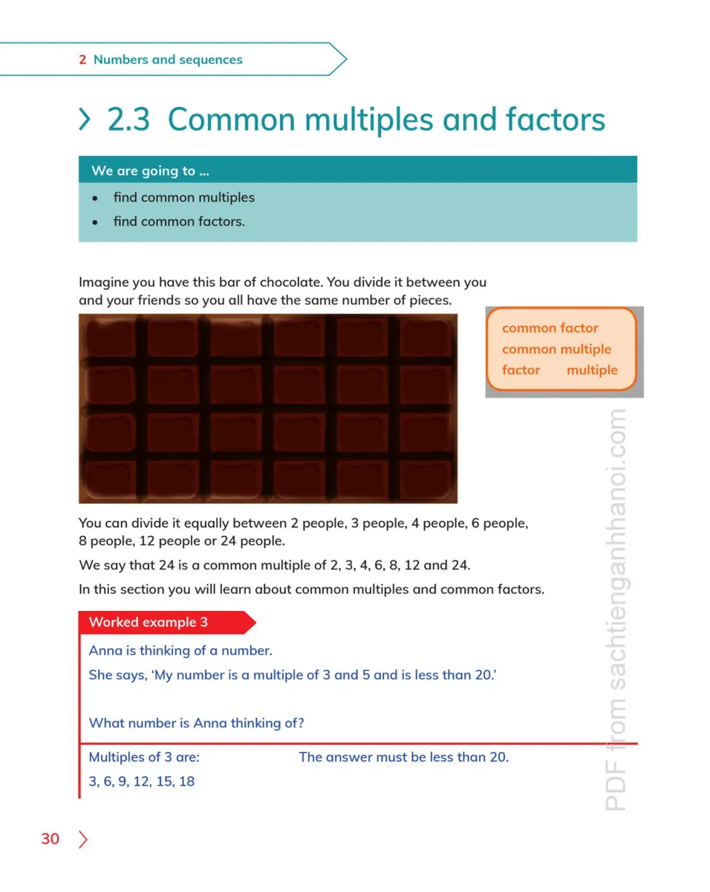
2 Numbers and sequences
›> 2.3 Common multiples and factors
\We qre going to ..
find common multiples
find common fqctors.
lmagine you hogve this bar of chocolate. You divide ït between you
and your friends so you dll have the same number of pieces.
common fgctor
common multiple
factor
multiple
You cơn divide ít equdlly between 2 people, 3 people, 4 people, 6 people,
8 people, 12 people or 24 people.
\We soy that 24 is a common multiple of 2, 3, 4, 6, 8, 12 and 24.
In this section you wlll learn about common multiples and common fdctors.
'Worked example 3
Anng is thinking of a number.
She soys, 'My number Is a multiple of 3 and 5 and ¡s less than 20+
What number is Anna thinking of?
Multiples of 3 qre:
The answer must be less than 20.
3,8,5, 12, 15, 1Š
A
30
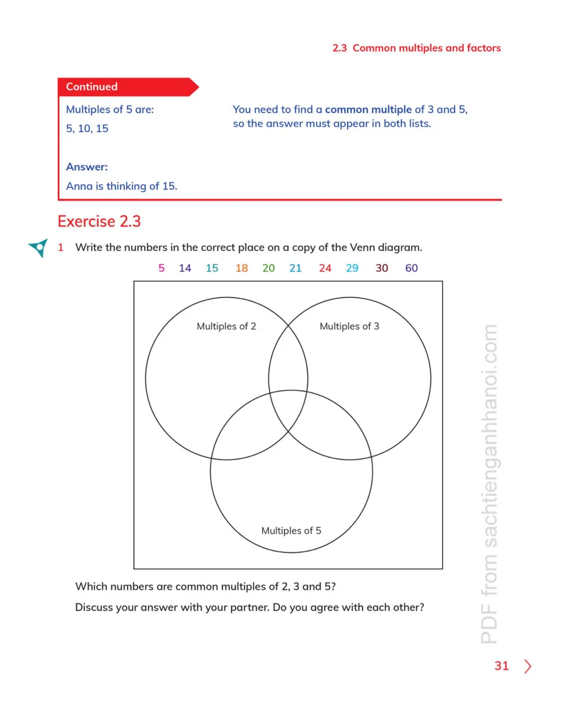
2.3 Common multiples and factors
Continued
Multiples of 5 qre:
You need to find a common multiple of 3 and 5,
5, 10, 15
so the answer must gppeodr in both lists.
Answer:
Anng is thinking of 15.
Exercise 2.3
Write the numbers In the correct place on da copy of the Venn diagram.
5
14
15
20
21
29
30
60
Multiples of 2
Multiples of 3
Multiples of 5
Which numbers are common multiples of 2, 3 and 5?
Discuss your answer with your partner. Do you agree with eqach other?
D
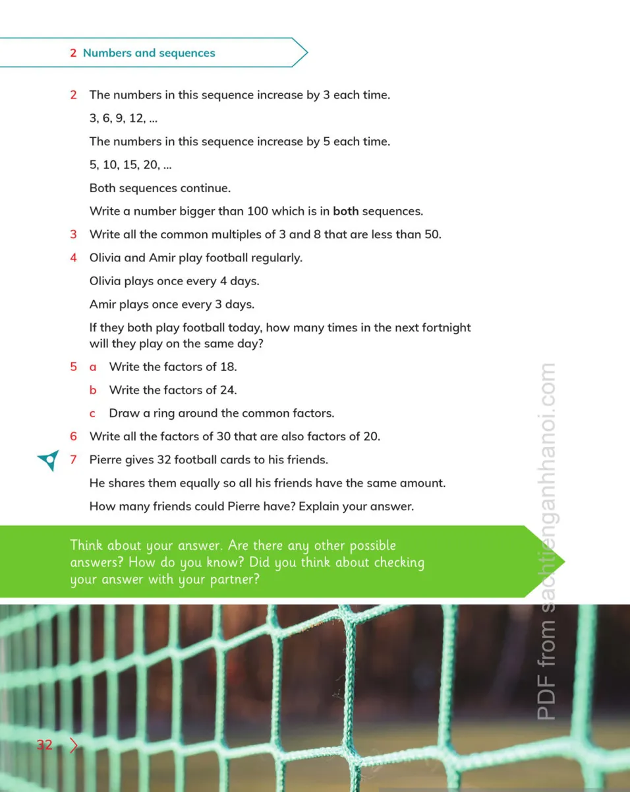
2 Numbers and sequences
2
The numbers in this sequence Iincregse by 3 eqch time.
3, Ð, 9, 1Ã,
The numbers In this sequence incregse by 5 eqch time.
5, 10, 15, 20,...
Both sequences continue.
\Write a number bigger than 100 which Is In both sequences.
Write dll the common multiples of 3 and 8 that
less than 50.
Olivia and Amir play footboll regularly.
Olivia plays once every 4 days.
Amir plgys once every 3 days.
lf they both play footbdll today, how
times In the next fortnight
will they play on the same day?
5
Write the factors of 18.
b
Write the factors of 24.
Draw dq ring around the common f{actors.
Write all the factors of 30 thơt are dlso factors of 20.
Pierre gives 32 football cards to his friends.
He shares them equdlly so dll his friends have the same amount.
How many friends could Pierre have? Expldin your answer.
Thinh about uour answer. Are there anu other possible
answers? How do uou know? Did uou think about checking
Uour answer with uour portner?
nụ .w
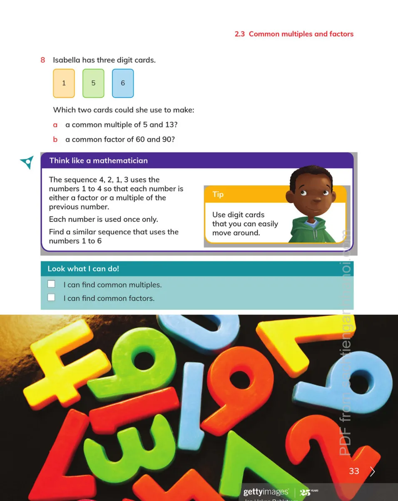
2.3 Common multiples and factors
Isabella has three digit cards.
Which two cords could she use to make:
l@|
Q common multiple of 5 and 13?
D
qa common fdctor of 60 and 902
Think like a mathemotician
The sequence 4, 2, 1, 3 uses the
numbers 1 to 4 so that each number Is
either qa factor or a multiple of the
Tip
previous number.
Eqach number is used once only.
se digit cards
that you can eosily
Find Q similar sequence that uses the
move ground.
numbers 1 to 6G
Look what | can dol
| can find common multiples.
| can find common
49)
`
33
gettyimageS
53
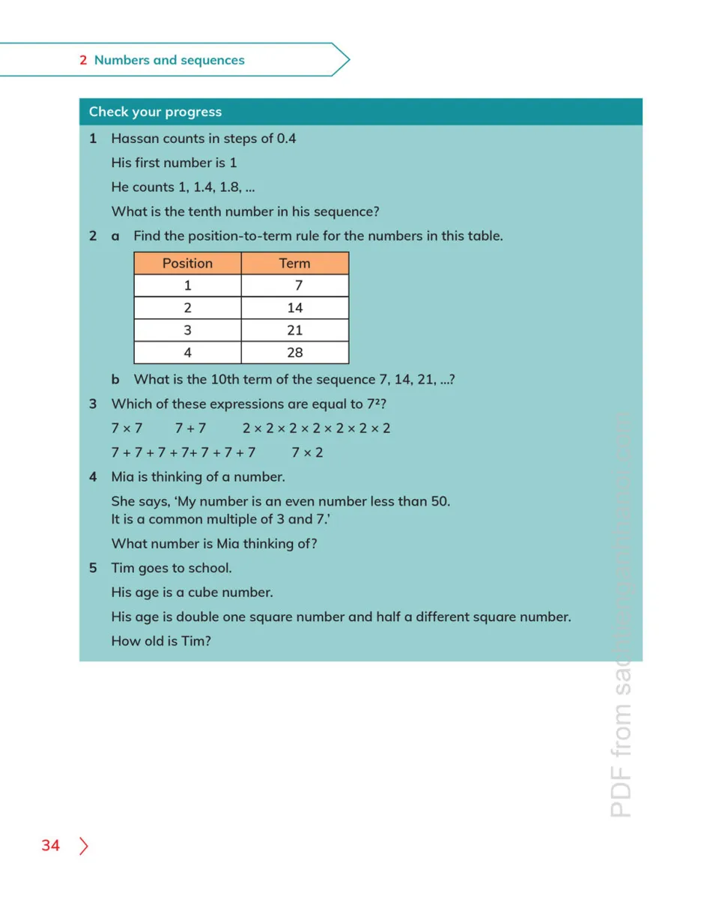
2 Numbers and sequences
Check your progress
1
Hgssơn counts in steps of 0.4
H¡s first number is 1
He counts 1, 1.4, 1.8,...
What is the tenth number in his sequence?
2
_
Find the position-to-term rule for the numbers ¡in this table.
Position
Term
1L
7.
2
14.
3
21
4
28
b ›__
What is the 10th term of the sequence 7, 14, 21,...?
3
Which of these expressions are equdl to 72?
7 %4 /⁄
7+7
7+7/+7+7+7+7+7
7x2
Á
Mid is thinking of a number.
She soys, 'My number ¡is an even number less than 50.
Ít is q common multiple of 3 and 7.
What number is Mid thinking of?
B
Tim goes to school.
His age Is a cube number.
His age Is double one squdgre number and half a different squdre number.
How old IS Tim?
Œ
œ
34
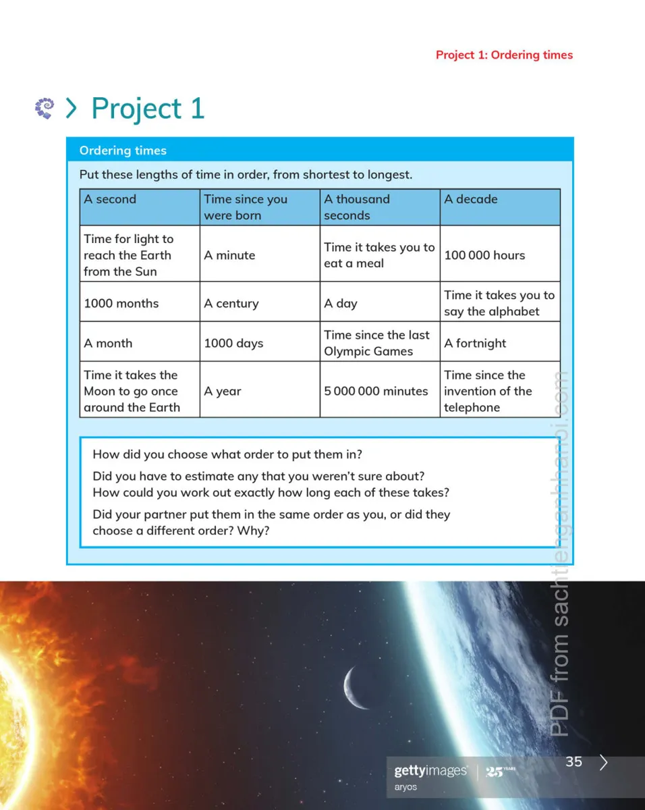
Project 1: Ordering times
$ › Project 1
Ordering times
Put these lengths of time in order, from shortest to longest.
A second
Time since you
A thousơnd
A decade
were born
seconds
Time for light to
redch the Eorth
|A minute
Time ït takes you to
100 000 hours
from the Sun
eqat Q meol
1000 months
| A century
|A day
Time It takes you to
soy the
A month
| 1000 days
Time since the last
Olympic Games
A fortnight
Time ¡t takes the
Time since the
Moon to go once
A yedr
5 000 000 minutes
invention of the
ground the Earth
|telephone
How did you choose whdat order to put them In?
Did you have to estimate any that you werent sure gbout?
How could you work out exgctly how long eqch of these takes?
Did your pdrtner put them ¡in the same order gs you, or did they
choose dq different order? Why?
gettyimageSf "3®
35
aryos
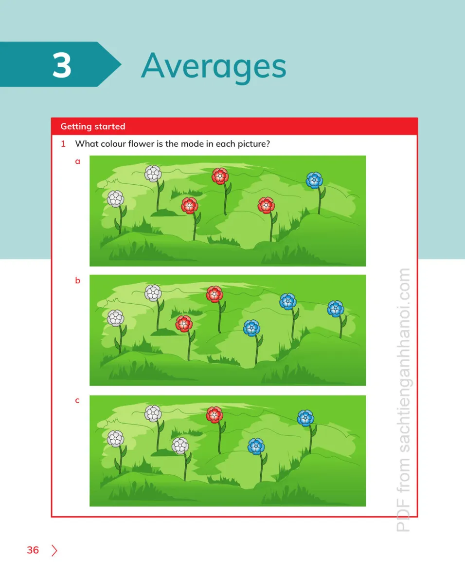
Avergges
Getting started
II
What colour flower Is the mode in eqch picture?
lai
36
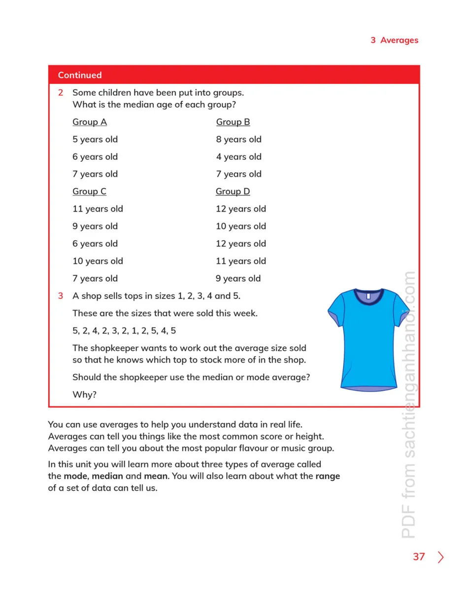
3 Averages
Continued
Some children have been put into groups.
¡is the median age of each group?
Group A
Group B
5 yeors old
8 yedrs old
6 yedrs old
4 yeors old
7 yeors old
7 yeors old
Group C
Group D
11 yeors old
12 yeors old
9 yedrs old
10 yeơrs old
6G yeors old
12 yeors old
10 yeors old
11 yedrs old
7 yeors old
9 yeoơrs old
A shop sells tops In sizes 1, 2, 3, 4 and 5.
These are the sizes that were sold this week.
5,2,4,2,3,2,1,2,5,4,5
(Ö
The shopkeeper Wwants to work out the averdage size sold
so that he knows which top to stock more of in the shop.
Should the shopkeeper use the median or mode average?
Why?
®)
You cơn use gvergges to help you understand datd ¡in reol life.
Avergges cơn tell you things like the most common score or height.
Avergges cơn tell you about the most popular flqvour or music group.
Œ)
In this unit you wlll learn more about three types of avergge colled
the mode, median and
You will also learn about what the range
of
set of datad cơn tell us.
A_.
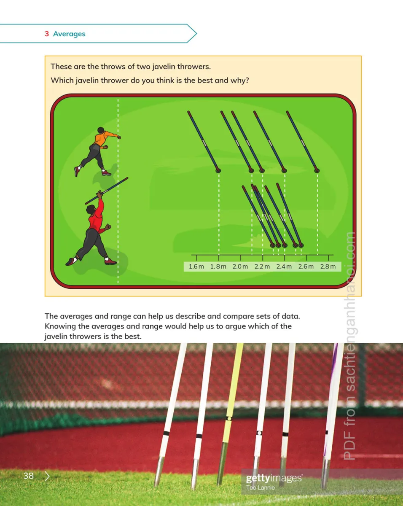
3 Averages
These are the throws of two javelin throwers.
Which javelin thrower do you think ¡is the best and why?
16m
1.8m
2.0m
2.2m
2.4m
2.6m
2.8m
The qvergges and range can help us describe and compore sets of data.
Knowing the overages and range would helb us to orgue which of the
Jjavelin throwers ¡s the best.
38
Teb Lamnie
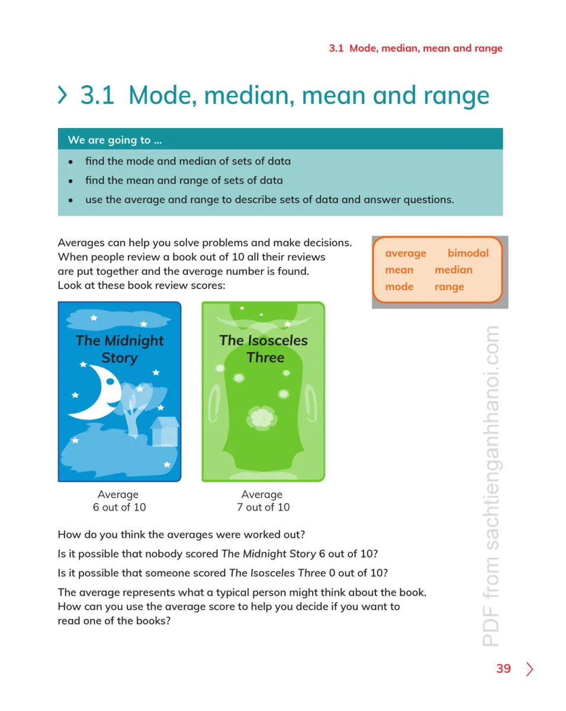
3.1 Mode, median, mean and range
› 3.1 Mode, median, meơn and range
We are going to ...
find the mode and mediơn of sets of datd
find the meœn ơnd range of sets of datd
use the
ơnd range to describe sets of data and answer questions.
Avergges cơn help you solve problems and
decisions.
When people review œ book out of 10 dll their reviews
qverage
bimodaL
put together and the average number is found.
medơn
median
Look at these book review scores:
mode
range:
The Midnight
The lIsosceles
Story
Avergge
Average
6 out of 10
7 out of 10
How do you think the averages were worked out?
ls ït possible that nobody scored The Midnight Story G6 out of 10?
ls It possible that someone scored The lsosceles Three 0 out of 10?
The avergge represents whdt qd typicdal person might think about the book.
How cơn you use the
score to help you decide If you wdnt to
regd one of the books?
D
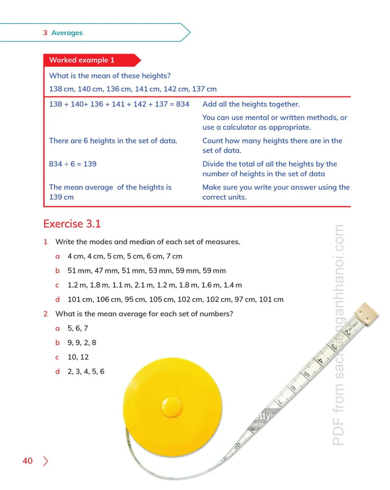
3 Averages
Worked example 1
Whoaot ¡is the meœn of these heights?
138 cm, 140 cm, 136 cm, 141 cm, 142 cm, 137 cm
138 + 140+ 136 + 141 + 142 + 137 =834
There are 6 heights in the set of datd.
834-+6= 139
The mean gvergge of the heights is
139cm
Exercise 3.1
Add all the heights together.
You cơn use mentadl or written methods, or
use Q cdlculator
appropridte.
Count how many heights there ore in the
set of data.
Divide the totdl of all the heights by the
number of heights in the set of datd
Make sure you write your answer using the
correct unIts.
Write the modes and median of eqch set of megsures.
qa
4cm, 4cm, 5cm, 5cm, 6cm, 7cm
b
B1 mm, 47 mm, 51 mm, 53 mm, 59 mm, 59 mm
1.2m, 1.8m, 1.1m, 2.1m, 1.2m, 1.8m, 1.6m, 1.4m
d
101 cm, 10G cm, 95 cm, 105 cm, 102 cm, 102 cm, 97 cm, 101 cm
What ¡is the mean gvergge for eqch set of numbers?
G
5,6, 7
®)
g
b 9, 9, 2, 8
10, 12
C
d
2,3,4,5,6
Œ Œœ)
L_
A
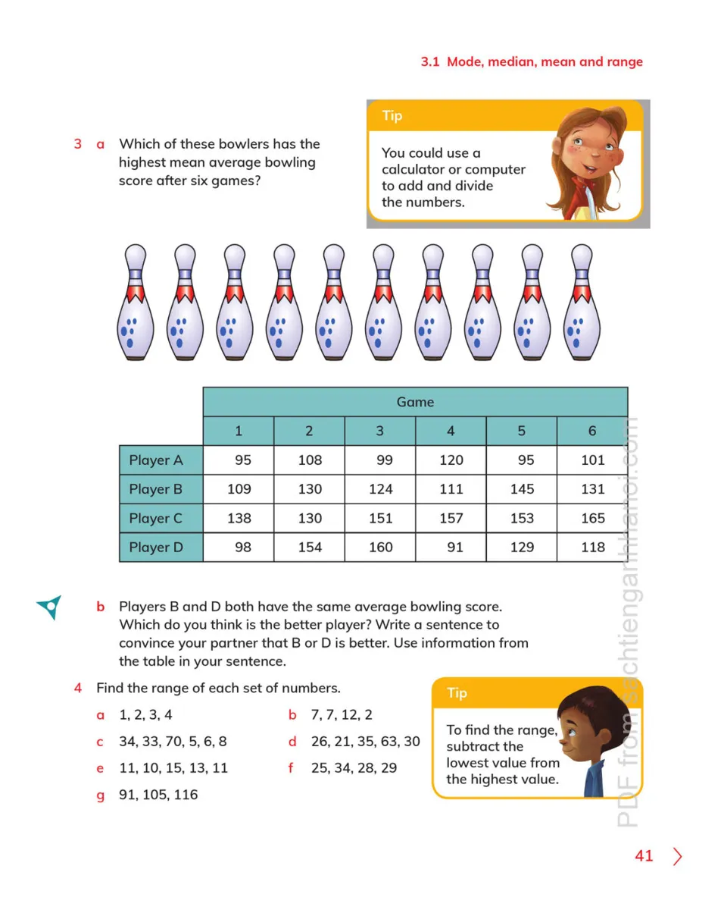
3.1 Mode, median, mean and range
3
o0 _ Which of these bowlers hos the
highest mean
bowling
You could use œ
score dfter sỉx games?
to add and divide
cdlculgtor or computer
the numbers.
Game
1
2
3
4
=
6G
Player A
95
108
99
120
95
101
Player B
109
130
124
111
145
131
Player C
138
130
Lộ
157
153
165
Player D
98
154
160
91
129
118
Œ
Players B and D both have the same gvergage bowling score.
Which do you think ¡is the better player? Write a sentence to
®
convince your portner that B or D ¡s better. Use Iinformdtion from
the table In your sentence.
(3
Find the range of eqch set of numbers.
I
1,2,3,4
b
7,7,12,2
To find the range, Ì
34,33,70,5,6, 8
d
26; 21, 35, 63, 30
subtroct the
11; 10, 15; 135; 11
25, 34, 28, 29
lowest value from
the highest value.
91, 105, 116
ñ
41
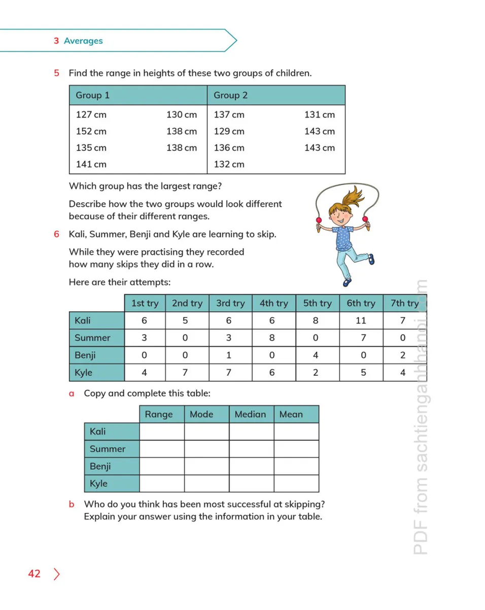
3 Averages
Find the range in heights of these two groups of children.
Group 1
Group 2
127cm
130 cm
137cm
131cm
152cm
138cm
129cm
143cm
135cm
138cm
136cm
143cm
141cm
132cm
Which group hos the largest range?
Describe how the two groups would look different
becquse of their different ranges.
G Kdli, Summer, Benji and Kyle are learning to skïp.
While they were
they recorded
how many skips they did in ad row.
Here are their attempts:
¬ —
1st try
2nd try
3rd try
4th try
5th try
Gth try
7th try
Koli
©
5
©
©
8
11
7
Summer
3
Mã
3
8
0
tả
0 C
Benji
0
0
1
0
+
0
^
Kyle
4
7
7
lo)
t
5
4
49)
a
Copy and complete this table:
Range
Mode
Mean
Summer
Benji
_Kyle
b
Who do you think has been most successful at skIpping?
Expldin your answer using the Information In your tgble.
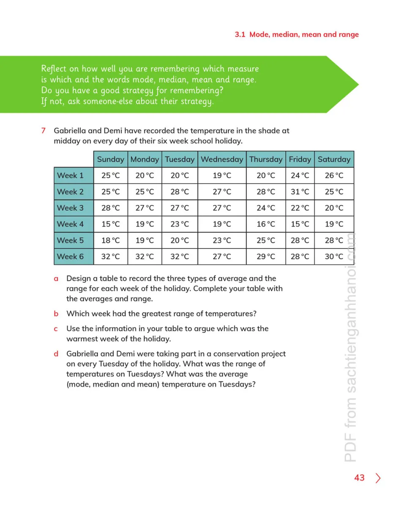
3.1 Mode, median, mean and range
Reflect on how well uou are remembering which measure
IS which and the words mode,
mean and range.
Do uou have Q good strateqgu ƒor remembering?
lƒ not, ask someone-else about their strategu.
Gobriella and Demi have recorded the temperdture in the shade at
middoy on every doy of their six week school holiday.
Sunday
Monday
Tuesday
Wednesday
Thursday | Friday
Saturday
| Week 1
25°C
20°C
20°C
19°C
20°C
24°C
26°C
| Week 2
25"
28°C
27
Z28”C
Z5
Week 3
28°C
27°C
27"
24°C
22°C
20°C
| Week 4
15°C
19°C
23°C
18”C
16°C
15°C
19”C
| Week 5
18°C
19°C
20°C
25°C
28°C
28°C
| Week 6
®
z8”“C
28°C
30°C
q
Design a table to record the three types of average and the
range for each week of the holiday. Complete your table with
the averages and range.
b Which week had the
range of temperdtures?
Use the
In your table to argue which wos the
Wqrmest week of the holiday.
q
Gabriella and Demi were tgking port in conservdtion project
on every Tuesday of the holiday. What wos the range of
temperatures on Tuesdays? What wos the average
(mode, median and men) temperature on Tuesdays?
aA
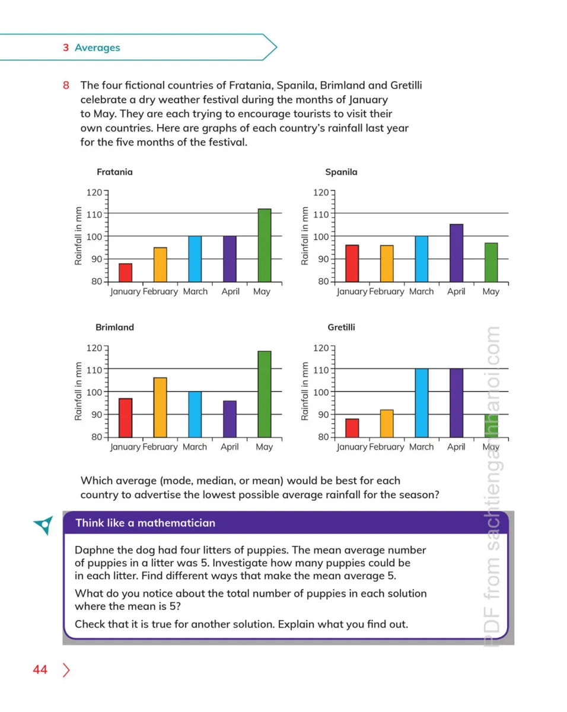
3 Averages
The four
countries of Fratanida, Spmnila, Brimland and Gretilli
celebrate a dry wegther festivdl during the months of ]anudry
to May. They re eqach trying to encourage tourists to visit their
own countries. Here are graphs of eqch country's
last yeor
for the five months of the festivdl.
Fratania
Spunila
120
120
110:
110:
100-
100-
90-
903
80-
May
803
Januory Februory Mơrch
-
Apri
Januory Februory Mơrch
-
Apri
|
May
Brimland
Gretilli
O
C)
—
120
LẦU 1
1103
1103
re
1003
4
1003
90:
903
—=
80 ]
80 `}
|
Januory Februory Mơrch -
Apri
May
Januory Februory Morch
April
Moy
Which avergge (mode, median, or mean) would be best for each
country to advertise the lowest possible
rdinfdll for the season?
=
Thiínk like a
12
the dog had four litters of puppies. The medan average number
of puppies in Q litter wqs 5. Investigdte how
pupples could be
in eoch litter. Find different WayS that make the medn average 5.
What do you notice qbout the totdl number of pupples In each solution
where the
is 5?
Check that it is true for another solution. Explain what you find out.
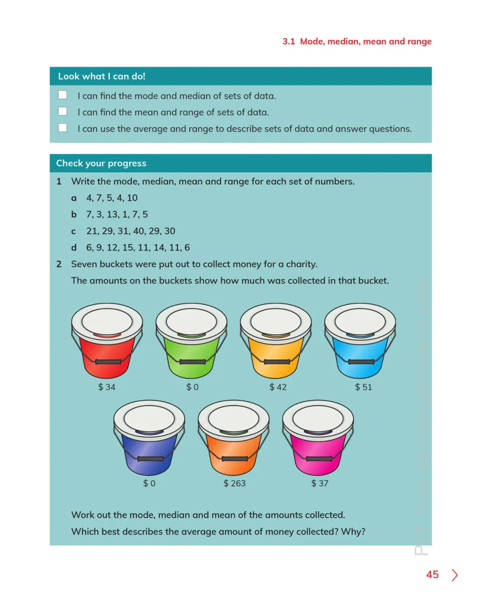
3.1 Mode, median, mean and range
Look what | can dol
| can find the mode and median of sets of data.
| can find the
ơœnd range of sets of datd.
| can use the gvergge ơnd range to describe sets of data and answer questions.
Check your progress
1
Write the mode, median, meœn œnd range for eqach set of numbers.
a
b
7,3,13,1,7/,5
le
21, 29, 31, 40, 29, 30
d
6,9,12, 15, 11, 14,11,6
2
Seven buckets were put out to collect money for a chority.
The amounts on the buckets show how much wos collected in that bucket.
$34
$0
$42
$ 51
$0
$ 263
$37
Work out the mode, median and medan of the amounts collected.
Which best describes the aqverage amount of money collected? Why?
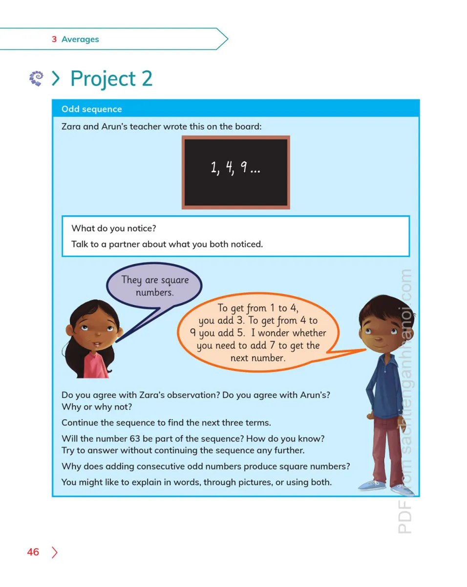
3 Averages
@ > Project 2
Odd sequence
and Aruns teqacher wrote this on the
11%...
What do you notice?
Talk to q partner about what you both noticed.
Theu are squdre_
numbers.
To get ƒrom † to 4,
uou add 3. To get ƒrom 4to
q Uou add 5. Ï wonder whether
Uou need to add 7 to get the
next number.
Do you qgree with Zord's observdatlon? Do you ggree with Arun's?
Why or why not?
Continue the sequence to find the next three terms.
WIII the number 63 be part of the sequence? How do you know?
Try to answer without continuing the sequence any further.
Why does gdding consecutive odd numbers produce squdre numbers?
You might like to expldin In words, through pictures, or using both.
D
46
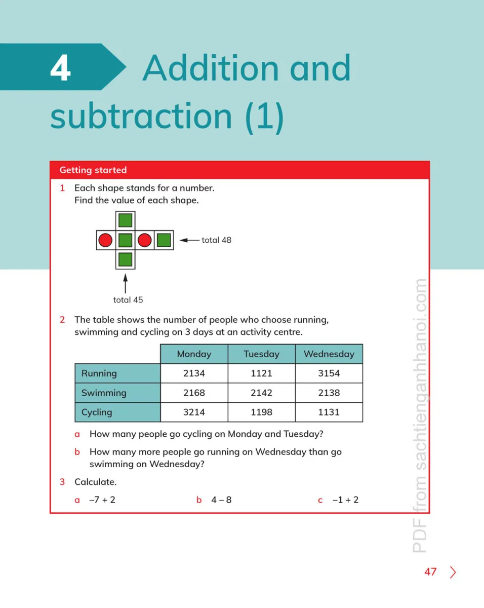
A
Addition and
subtrgction
Getting started
Each shgpe stands for a number.
Find the value of eqch shape.
— totol 48
total 45
The table shows the number of people who choose running,
le)
swimming ơnd cycling on 3 days at œn gctivity centre.
Monday
Tuesday
\Wednesday
Ũ
Running
2134
1121
3154
=
Swimming
2168
2142
2138
(Œ
Cycling
3214
1198
1131
How many people go cycling on Monday and Tuesday?
How many more people go running on Wednesday than go
©
(
swimming on Wednesday?
Œœ)
Calculate.
c
a
b
4-8
S
®
8
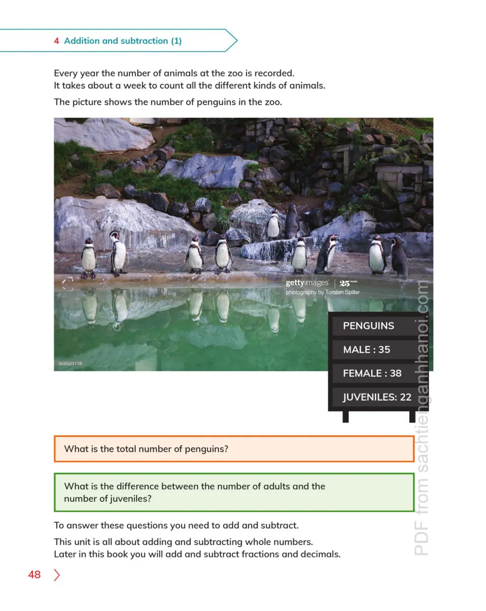
4 Addition and subtraction (1)
Every yedr the number of animdls at the zoo IS recorded.
lt takes about a week to count dll the different kinds of animols.
The picture shows the number of penguins in the zoo.
gettyimages
25
PENGUINS
MALE : 35
49)
505529118
FEMALE : 38
JUVENILES: 22
What is the total number of penguins?
Whot ¡s the difference between the number of adults and the
numbser of juveniles?
To answer these questions you need to add and subtrdct.
This unit is all about adding and subtracting whole numbers.
Later in this book you will add and subtrdct fractions and decimols.
4.1 Positive and negotive integers
› 4.1 Positive and negdtive Integers
We are going to ..
estimate, add and subtrdct large Integers
dd and subtrdct positive and neggtive Integers
find the difference between two Iintegers.
0-10
Underwoter swimmer
102:
Free diver
This diagram shows the maximum
238
New Zeolœnd fur seol
known diving depths for human ơnd
other marine mammdls.
550.
New Zeoland seo lion
How much deeper can the sperm
whdle dive compored to the
elephant seol?
integer
1,500 -
Southern elephant sedol
neggtive number
positive number
3,000 -
Sperm whdle
D
4 Addition and subtraction (1)
Worked example 1
The temperdture outside ¡s —30 °C.
®
The temperdture rises by 5 °C. Whdt IS the new temperdture?
b
The origindl temperdture fdlls by 5 °C. What ¡is the new temperdture?
a
Use œ
rise of 5°
number line
to show the
colculation:
<† +
+————>
-40
-30
-20
~10
-30+5=-25
-25°C
Use œ
b
foll of 5°
number line
to show the
colculotion:
<t----
-30—5=-35
-40
-30
-20
~10
S
le
=
ai...
C
Exercise 4.1
The table shows the flight distance from Dubodi to five destinations.
Distance in kilometres
Buenos Aires
13656
Cdiro
2419
1190
Remember to
New York
11020
estimdte your
qanswer before you
Singgpore
5847
do the colculation.
D
gettyimages
Frans Sellies
Liu flies from Duboi to Singdpore. Nadine flies from Duboi to
Cdiro. What ¡s the difference In their flight distances?
b
lives in Dubol. In one yedr she travels to Buenos Aires,
Cairo and Kqrqchi. She returns home qfter each trip. How many
kilometres does she fly altogether?
Check your answer using ơ colculdtor.
Rovi completes Q subtraction calculation, but his answer Is wrond.
36804
5724
31180
Write an explanation to convince Rovi that he is wrondg.
Correct his answer.
Fdaizah plays a game. She has 5398 pboints.
She scores another 465 points.
Her torget ¡is 6000 points.
How
more points does she need to reqch her target?
4
Here is port of a temperature scdle showing the
at Coldpark.
Temperoture dt
Coldpark
L_
-10
-8
-ý
=B
=5
=4
—3
-2
0
N
A_.
The temperature fdlls by 3 °C. Whoat ¡is the new temperature?
4 Addition and subtraction (1)
tỉ
The temperature œt 8 a.m. is —1 °C.
By middoy ¡t is 4 degrees wormer. What Is the tempergture at midday?
6
The mgximum tembperdture in Mongolia during October ¡is 15 °C.
The temperdture decredses by 12 °C each month from October to Februdry.
What is the maximum
in J]anuory?
Check your answer with your partner. Do you qgree?
The thermometers show the temperdtures in Ulaanbaotodr and
Montredl on the same doy.
— 2Ö
—10
0
10
20
Ulaanbgotar
— 20
—10
0
10
20
*
Montreol
What is the difference in temperdature between
Tip
Ulaanbaotar and Montreol?
8
Here is a table of temperdtures in five cities for
Remember that
one mornindg.
a difference Ìs
positive.
City
Temperdture
London
4°C
Moscow
=10°C
Oslo
-5°C
Tokyo
2°C
Ulaanbaotodr
-28"%
What ¡is the difference in temperdture between London and Oslo?
What ¡s the difference in temperdture between Moscow
and Ulaanbagtor?
Whoat is the difference in temperdture between the Wqrmest city
and the coldest city?
4.1 Positive and negotive integers
Find the difference between eqch pdir of numbers.
a
<—t—+—*+%-
—Ð
0
=
b
—————
-S€+-
—50
0
50
Number lines can heÌp with calculations. Sometimes one is
shown in the question, but sometimes uou need to draw
Uour own. Look at the questions in this exercise and think
about how uou have used number lines to heÌp uou.
Think like a mathemotician
Choose three digits.
Arrange them In order, biggest first.
Reverse the digits.
Find the difference between the two numbers.
Reverse the answer.
©
Add the two numbers.
Do this severadl times. What do you notice?
Start with four digits. Whoat do you notice?
Predict whdt the qnswer will be If you start with two digits. Test your prediction. (Œ
Wos your prediction correct?
Look
s 1e
can dol
| can estimote, add and subtroct large numbers.
| can add and subtrdct positive and neggtive numbers.
| can find the difference between two numbers.
L_
=
A_.
4 Addition and subtraction (1)
› 4.2 Using letters to represent
numbers
We are going to ...
find the vdlue of a letter that represents a number
use the ided that an unknown ¡is not necessorily one fixed number but ad vorigble.
Look at this shape puzzle. What number does eqch shape stand for?
10
constant
voriable
À
9
In this unit, you will use Q letter to stands for a number gs in these examples.
What are the values of g and b?
8
Q
D
D
21
8
a=
b=
gettyimages
SEAN GLADWELL
54
1284765799
4.2 Using letters to represent numbers
Worked example 2
The perimeter of this rectangle ¡is 20 cm.
S
s œnd t represent the lengths of the sides of the
rectangle in a whole number of centimetres.
What are the possible lengths of side s and side t?
s= 1cm øndt=9cm
The sum of the lengths of the sides is
s= 2cm ơnd t=8cm
equdl to 20 cm.
s=3cm œnd t= 7cm
s= 4cm ơnd t=6cm
S +tis half the distance roundl the
rectangle so s + t = 10
S=B5cm ơnd t= 5cm
s=6cm œnd t= 4cm
s= 7cm œnd t= 3cm
s=8cm œnd t= 2cm
s=9cm œơnd t= 1cm
Exercise 4.2
Cheng plays a boord game using q dice.
He uses the instructions together with his dice score to work out
how many spgces he moves.
d represents the dice score.
For example:
Score
Instruction
Spdces moved
d+4
9 spdces
A
4 Addition and subtraction (1)
Work out how
spgces Cheng moves.
Score
lnstruction
Spdces moved
a
d-3
b
6-d
4+d
7
For eqch paIr of expressions write 'equdl” or “not equdl'.
a
d+4
4+d
2+d
d+2
5-d
d-5
Khalid says, 'x + 3 is the same ds 3 + x so x - 3 must be the same
gs 3 - x. ls Khalid correct? Expldin your answer.
4.2 Using letters to represent numbers
-_
Marthd buys 2 more pdirs of socks than shoes.
272, mã)
Copy and complete the table where x represents the number of
pơirs of shoes œnd y represents the number of pdirs of socks.
x
1
2
V
3
6G
b_
Write Q number sentence linking x, y and 2.
5_
This puzzle hgs 9 pieces.
places 1 or more shgpes and SanjJay places the other shapes.
Œ
Copy ơnd complete this table to show the number of pieces edch
person places.
x (number
of pieces
placed by
Hagssơn)
y (number
ofÍ pieces
placed by
Write a number sentence linking x, y and 9.
A
4 Addition and subtraction (1)
g and b represent the lengths of two strips of card.
b ¡is 3 cm longer thơn dq.
The two strips are placed end to end.
The totdl length ¡s 15 cm.
ũ
D
15cm
Find the lengths of a and b.
The perimeter (p) of a squore is the sum of the lengths of the sides.
S represents the length of a side megsured In centimetres.
s
g
What is the value of p when s = 5?
b What ¡is the value of p when s = 7?
is the value of s when p = 32?
This isosceles triangle has a perimeter of 15 cm.
<
X
y
Q
Find three possible sets of values for x and y.
b
Write a formula for the perimeter (p) of the triangle using x and y.
4.2 Using letters to represent numbers
How do questions 7 and 8 compore with questions uou
answered on
when working on megsures?
Look out ƒor links within mathemotics and in other subjects
where uou use mathematics.
Think like a mathemotician
g, b and c eqch represent a whole number from 1 upwords.
a+b+c=7
Find dll the possible values for q, b and c.
How
different solutions can you find?
Check uour answers with uour portner.
How did uou make sure uou had ƒound all the solutions?
Look what | can dol
| can find the vdlue of a letter that rebresents a number.
| can use the ided that an unknown Is not necessorily one fixed
number but Q vorigble.
gettyimages
Daniel Day
4 Addition and subtraction (1)
Check your progress
+L ._
Copy and complete this calculation.
4
3
9
8
5
2
1
7
8
5
—_
The table shows the temperdtures in six cities on the same doy in Janudry.
Buenos Aires
-1°C
Abu Dhgbi
18°C
Moscow
-10°C
Oslo
-5°C
# “E
The temperdture in Moscow rises by 5 °C. Whot ¡is the new temperature?
b_
What ¡is the difference between the temperatures in Tollinn and Moscow?
—_
The diagram shows three strips placed end to end. The totdl length ¡is 17 cm.
m
n
n
17cm
Lisœ knows that m +n = 10
Show how she cơn find the value of m ơnd n.
5b
2D shgpes
Getting started
X l
Motch edch shape A to F with its correct name ï to vĩ.
The first one ¡is done for you: A and Hi.
B
E
F
rectangle
kite
porallelogram
Ũ
trapezium
squore
(Œ
Write down the number of lines of symmetry for eqch of these triangles.
®
Isosceles triangle
(
scdlene triangle
œ)
=
equilaterdl triangle
D
61
5 2D shapes
Continued
This shape ¡is made from Q semicircle on top of a rectandle.
Copy the statements and fill in the missing numbers.
The shape hos| right angles.
—_
The shape has
| curved edge.
The shape hos| straight edges.
I_
The shape has
paIr of porollel sides.
Cobpy this rectangle.
Draw the lines of symmetry
onto your rectangle.
Shapes and symmetry play an important pdrt in our everydoy lives.
When you go Into ad grocery store and look at the food on the shelves,
what shapes can you see?
Graphic designers are people who decide what shape boxes, tins or
packets dre going to be used for different foods. They also design the
patterns and writing on the boxes, tins or packets. They want to make
them look as good gs possible so that you will want to buy theml
Tom V
5.1 Quadrilaterals
› b.1 Qugdrilaterols
We qœre going to ...
identify quadrilaterdls
describe qugdrilaterdls
classify qugodrilateradls
sketch qugdrilaterols.
Quadrilateral tiles are often used on kitchen and bathroom
wdlls and floors. This is becquse they fit together
leaving no spdces (tessellate). You need to be
to
identify and describe the different types of qugdrilaterdls.
This Is redlly important when you need to order tiles for
your house.
bisect
diagondl
decompose
pardllel
5 2D shapes
Worked example 1
Describe the properties of a rectangle. Show eqach one on da diagram.
A rectondle ¡s a qugdrilateral.
lt has two poirs of equol sides.
lt
two pdlrs of pardllel sides.
The sides meet at 90°.
The diagonols bisect
other.
lt has two lines of symmetry.
:
64
This Is the same gs soying ït hgas
four sides.
The symbol | shows one pdir of
equdl sides and the symbol
shows the other.
The symbol ^ shows one pdir of
porollel sides and the symbol >
shows the other.
The squore symbol h_ shows that
tWwo sides meet dt 90°.
The diagondls cụt eqch other exdctly
In half.
lt has œ horizontol
ơnd q verticol
line of symmetry.
0
5.1 Quadrilaterals
Exercise 5.1
Copy and complete these properties of a squdre. Show eqch one
on Q diagram. Diagrams q, b and e have been done for you.
a
A squœre Is qd.
b
lthos.
.equdl sides.
lthas.
. pdirs of pardllel sides.
d
The sides meet dt.
The diagondls.
_eqch other œt 90°.
lthas.
- lines of symmetry.
Copy and complete these properties of a pardllelogram. Show eqch one
on Q diagram. Diagrams q, d and f have been done for you.
A poøradllelogram Is q.
lthas.
of equdl sides.
lthas.
.pdirs of pordllel sides.
lt has -
of equdl angles.
Tip
The single curved
lines show thoơt these.
Bị
two œngles re equdl.
The double curved
lines show that these
two œngles re equdl.
ˆ
5 2D shapes
The diagondls
other.
lthas.
- lines of symmetry.
Think like a
Work with Q partner to answer these questions.
The diagrams A to F show different trapezid.
^
B
C
D
E
F
qa
Sort these trapezid Into two groups.
Group 1: trapezid that
isosceles
Group 2: trapezid that are not Isosceles
b
Write down the properties of
ơn Isosceles trapezium.
HH
g trapezIum that is not Isosceles.
Show eqch one on Q diagram.
Compdre œnd discuss your answers to pdrts qa and b with other
learners in your class. Did you write down dll the properties?
lf you did not, write them down now so that you do not
forget them.
Where have you met the word isosceles before?
What do you think Is specidl about ơn isosceles trapezium?
D
66
5.1 Quodrilaterdls
œ_
Moke q sketch of eqch of the seven specidl quadrilaterdls:
squdre, rectangle, pardllelogram, trapezium, isosceles trapezIum,
rhombus and kite. lí the shape has any lines of symmetry,
draw them onto your sketch.
Copy ơnd complete this tick box table showing some of the
properties of the seven specidl quadrilaterdls. The pardllelogram
has been done for you.
Qugdrilateral
Squdre
Rectangle
Pordllelogram
'Trapezium
lsosceles
Rhombus
Kite
trapezium
Four equdl
sides
'TWwo pdirs of
L4
sides
One pdir of
equdl sides
One pdir of
porollel sides
'TWwo pdirs of
⁄
porollel sides
All angles 90°
One pdir of
c
equdl angles
bộ
'Two pdirs of
Lá
equdl angles
Diagondls bisect
L4
"`
edch other
Diagonols
œ)
| meet
at 90°
L_ =
aA
5 2D shapes
Zarg and Sofia are looking at this question.
What shape am l?
| am
qugdrilaterdl. have one pdir of equdl sides.
Thhere is not enough
to work out
what the shape is.
Ï disagree. There is
enough Information to work
out what the shape is.
Who ¡s correct, Zord or Sofia? Explgin your answer.
Keon draws this pardllelogram and Isosceles trapezium.
He labels the lines that make the shgpes q, b, c, d, e, f, g and h.
He draws the shgpes so thơt d is pdrollel to e.
e
Q
b
h
d
®
Q
Write true or false for each of these statements. Justify your answer.
The first one ¡is done for you.
g is poơrdllel to g
True because we are told a is pordllel to e and tn the trapezium
we Rnow that g is parallel to e, so g must also be porallel to a.
b ¡is parollel to d
c is porollel to e
IV
fis
to g
5.1 Quadrilaterals
This is part of Shen”s homework.
Questton: Draw a diagram to show [ƒ parollelograms tessellate.
Solution: Yes theu do. Theu ƒtt together leaving no spaces.
Draw diagrams like Shens to show If these
shapes tessellate.
rectangle
rhombus
Use squdred
li trapezlum
IV
kite
to
help you.
b_
Which of these statements is correct?
Not all quadrilaterdls will tessellate.
All quadrilaterdals will tessellate.
Think like a mathemotician
Work with a portner on this activity.
(
You re going to moke q poster showing how you cơn decompose the
specidl quadrilaterdls into other shapes.
For example, three wdys that you can decompose d squdre, œre like this:
two triangles
two trapezIg
g rectangle and two triangles
There re lots of Woys to decompose the specidal quadrilaterols,
Œœ)
try to think of at least three for each one.
Ít is up to you how you present your poster showing the informotion.
When you have finished, compdre your poster with others In your clqss.
Now thot you have seen other posters, whqt do you think of your poster?
Could you moke it better or egsier to understond? Who do you think
made the best poster and why?
5 2D shapes
Look what | can do!
| can identify qugdrilaterdls.
| can describe qugadrilaterols.
| can classify qugdrilaterols.
| can sketch quodrilaterols.
› B.2 Circles
We are going to .
learn the names of the pdrts of q circle
draw circles accurately.
The diagram shows q circle.
centre
_Rodius
circumference-
composses
radius
Centre
Circumference
Diameter
The red dot shows the centre of the circle.
When you draw q circle, you draw d set of points that are the same
distance from the centre. This distonce IS colled the radius of the circle.
The perimeter of the circle ¡is called the circumference.
The diameter of the circle ¡s œ line joining two points on the
circumference that goes through the centre of the circle.
70
5.2 Circles
'Worked example 2
Draw œ circle of radius 4cm. Label the centre, radius,
diameter and circumference of the circle.
Oben your compgsses to 4 cm.
— —
0 _
1 2 3 45 6 7 8 9 101112131415
Draw q dot to show the centre
of the circle, then place the
point of your compdosses
on the dot.
Œ
¬
A
5 2D shapes
Very corefully turn the
composses to draw the circle.
C
C}
Circumference
Draw lines to show the radius
and diameter and label the
parts of the circle.
~ Rodius
Centre
Diameter
gettylinages
Westend61
5.2 Circles
Exercise 5.2
Copy the diagram. Label the parts of the circle shown using the
following words: centre, diameter, radius, circumference.
Draw œ circle with a radius of
5cm
60 mm
5
Think like a mathemotician
Arun draws d circle with radius 3 cm.
Sofia draws dq circle with diameter 60 mm.
Read whdt Arun sgys.
Our circles
®
qre exactlu the
Remembber thơt
_Same sizel
1 cm = 10 mm.
ls Arun correct? Expldin your answer.
b
MWrite down œ rule that connects the radius
with the diameter of œ circle.
C
Discuss your answers to pdrts a and b with
other learners in your clqss.
5 2D shapes
These cards show different meqasurements.
Radius = 2 cm
B
Radius = 10cm
C
Diameter = 8 cm
D
Diameter = 20 cm
E
Rodius = 4cm
F
Rodius = 20 mm
G
Radius = 40 mm
H Diameter = 4cm
Diameter = 200 mm
Sort the cards Into groups of megsurements that will give the
sơme size circles.
This is part of Gethin's homework.
Task: draw and label a diameter onto this circle.
Soluttion:
'Diameter
a
Expldin the mistake that Gethin has made.
b
Draw out d correct solution for him.
BẾP HH
Draw Q dot ơnd label the point A. Make sure
there is about 4 cm of
gqbove, below,
to the left and to the right of your point.
This means
Draw the set of points that are exactly 3.5 cm
draw C circle
from the point A.
of radius 3.5 cm.
L_ =
A_.
74
5.2 Circles
like a mathemotician
On d piece of pgaper, write down
g radius length between 30 mm and 80 mm
Q diameter length between 7 cm ơnd 15 cm.
b
SwWwdQp your piece of pgaper with Q partner and ask them to draw
the two circles with the radius and diameter that you have given.
C
Swdogp bdack pieces of paper and mork eqch other”s work.
How gccurdte were you and how gccurdate wds your pdrtner?
lf you were not very qccurdte, discuss woys that you can Improve
the qccurgcy of your drawings.
Think like a mathemotician
Q
Draw Q circle with radius G6 cm. Label the circle A.
b
Draw Q circle with radius 2.5 cm, so that It touches circle A. Label the circle B.
Your diagram should look something like this.
m
B
©
A
B
Œ
OFr
OF
With Q ruler,
megsure the
distance between the centre of circle A and
the centre of circle B.
d
What do you notice about your answer to
Rodii IS the plurdl
part c ơnd the rodii megsurements of
of radius. One
radius, two
circles A and B?
e
Draw two more circles that touch. Choose your own rodii
Œ)
megsurements.
the distance between the centres of
your two circles. What do you notice?
{
Copy ơnd complete this generol rule:
The distance between the centres of two touching circles is the
sơme os the.
a
5 2D shapes
Look what | can do!
| can name ports of d circle.
| can draw circles qccurately.
_Đ,3 Rotationdl symmetry
\We qœre going to .
identify shapes and patterns with rotationdl symmetry
describe
symmetry.
When you go to d pork, you can often play on ad swing,
g see-sgw or g roundgbout. Some of the shapes you see
order
will have line symmetry, but have you ever looked at the
rotationdal symmetry
shapes to see which ones look the same gs you turn them?
A shape has rotational symmetry if it can be rototed
gbout d point to another position and still look the same.
The order of rotationdl symmetry is the number of times
the shape looks the same In one full turn. A rectangle
has rotationadl symmetry of order 2. Thịs button has
rotdtiondl symmetry of order 4.
76
symmetry
'Worked example 3
Write down the order of rotationdal symmetry of eqach of these shapes.
l@|
b
O
Order 2
When you rotdte the pordllelogram qbout its centre point It
looks the same dfter a half-turn and d full turn, so hos order 2.
b
Order 1
When you rotote the Isosceles trapezium gbout Its centre point
It only looks the same dfter d full turn so has order 1.
Exercise 5.3
Write down the order of rotationdol symmetry of these shapes.
=
lo)
b
Tip
là
You cơn use
tracing pgper
d
to help you.
Sort these cords Into their correct groups.
Eqch group must hgve one blue, one green and one yellow cord.
A Rectangle
œ Order of
B Scdlene
triangle
symmetry is 3
œ)
b Order of
'€ Equilateral
rototionol
triangle
symmetry Is 2
'c Order of
rototionol
đà
symmetry is 1
aA_-
5 2D shapes
Thiínk like a
Read what Morcus soys.
A squore has 4 lines oƒ summetru
and order 4 rotational summetru. Ï think
thot all the special quadrilaterals have the same
number oƒ lines oƒ summetru as order
oƒ rototional summetru.
Q
Is Marcus correct? Explain your answer.
b
ls it true to say that a shqape with no lines of symmetry
will
have order 1 rotationdol symmetry?
Explain your answer.
Discuss your answer to ports a and b with other learners
In your
Think like a mathematician
Work with qa portner for this gctivity.
Choose ten capitol letters from the dlphabet.
For example, you could choose A, E, F, H, K, L,M, N, T and Z.
Work out the number of lines of symmetry and the order of rotationdl
symmetry of your letters.
Make œ poster showing your letters; draw on ơny lines of symmetry and
write down the order of rotation of eqch letter. Try and choose some
letters which have the same, and some letters which hove different,
numbers of line symmetry and rotgtiondl symmetry.
Discuss and compore your posters with other learners In your class.
78
symmetry
—
Write down the order of rotationdal symmetry of these patterns.
a
Here
four different tiles.
A
B
D
Write down the order of rotation of each of the tiles.
]uan joins two A tiles together
to
this pattern.
Whot ¡s the order of rotgtion of
the pattern?
Joins four B tiles together to make this pattern.
Whoaot ¡is the order of rotdtion of the pattern?
|
Lijoins two C tiles together to make this pattern.
m
What is the order of rotation of the pattern?
aA_-
5 2D shapes
Work with a partner ƒor this question.
In this section uou have ƒound the order oƒ rotation oƒ shapes
and patterns.
l6)
Explain to uour partner the method uou ƒind easiest to use to
ƒtnd the order oƒ rotation oƒ shapes and patterns.
l@)
Compare uour methods. Do uou both have the same method?
Do uou have difƒerent methods? Do uou think that uour
method is sti the eastest method?
Look what l can dol
| can identify shapes and patterns with rotationdl symmetry.
| can describe rotdtiondl symmetry.
Check your progress
:
Write down the missing numbers from eqch of these statements.
a
A squoơre has:
.equdl sides.
b
A poørdllelogram hgs.
- pdlrs of parollel sides.
The diagondls of Q kite meet dt.
le|
An isosceles trapezium hags.
- pdir of equdl sides.
e
A rectoangle has.
- lines of symmetry.
A rhombus has .
- pdirs of equdl angles.
2
a
Draw Q circle of radius 2.5 cm.
b
Lobel the centre, circumference, Q radius and a diameter on the circle.
53
Write down the order of rotationdal symmetry of eqach of these roqd signs.
qa
d
8
& > Project 3
Sneaky statistics
The children in Sofid's class are collecting stickers that are sold in
packs dt their locdl shop.
Every Friday, Sofia's dad gives her enough money to buy two pdcks
of stickers. Sofia decides to collect some information gbout how many
stickers her friends are buyIing and compdre that to how mơny she
buys eqach week.
Sofia asks ten friends how mưny pdcks of stickers they bought last week.
They tell her the following numbers:
1,1,1, 1,2,2,
575,142
What do you notice qbout these numbers?
Can you think of a regason why one child might
have bought 14 packs of stickers last week?
Sofia asks her dad if he can
give her enough money to
On average, each oƒ
=-
buy three packs of stickers
mu ƒriends bought three packs
this week.
|
oƒ sticRers Íast weekl
Which average Is Sofiqa using here? Why has she chosen to
use that verage?
lf Sofia's dad looks at the same
what could he say
In response?
Which averdage do you think is the most helpful here? Why?
is the range of this datg?
L_
=
A
5 2D shapes
Continued
In
class, the children are collecting stickers that can be
bought Individudlly.
Mdarcus gsks ten friends how mưny stickers they bought
lqast week. He finds that there ¡is only one mode, which ¡s four
stickers. The mediiơn is four stickers as well, and the medœn
Is also exactly four stickers.
Think about some different possible numbers of stickers that
eqch of the ten people might have bought.
What is the smallest possible range that this data could have?
lf the range wos 15, how many stickers would eoch of the ten
people have bought? Could the range be larger than 15?
Why or why not?
tt
YEAR
Fractions ønd
percentgges
Getting started
Moria
of a chocolate bar with mass 240 g.
5b
8
How mœny grams of chocolate does Morid
What part of
diagram ¡s shaded?
Write each answer gs q percentage and os d fraction with
denomingtor of 100.
(
(Œ
@)
(
œ)
3_
Use eqch of the digits 4 and 5 once to complete these number sentences.
48>
.5
.5
6 Fractions and percentgges
Continued
Write these fractions, decimols and percentgges In order storting
with the smollest.
3
0.2
1
70%
4
4
Use eoch of the digits 1, 5, 0 and 2 once to complete this statement.
2
10
When do we use bercentgges?
Here are some examples.
What is your favourite sport?
I[scored 70% in
the maths testl
Swimming
10%
40%
30%
Bosketbasil
Footbdll
(
20%
Hockey
There \S Ø
S0UMMERS
of roïn odoy-
"`
- 10-50%
OFF: EUERYTHING!.
Can you think of other times we use percentgages?
This unit ¡s glÌ about fractions, decimdls and percentgges.
la
84
6.1 Understanding fractions
› 6.1 Understanding fractions
We qœre going to ..
represent q proper or Improper fraction ds d division
use proper œnd improper fractions
operdtors.
An improper fraction represents a number gregter than 1 whole.
denominator
improper fraction
mixed number
numerator
.operator
For example, this diagram shows the improper fraction :
proper fraction
This is equdl to
which ¡is a mixed number.
In this unit we will work with proper fractions,
Improper fractions and mixed numbers.
Remember,
'Worked example 1
that > meœns
Which ¡s bigger of 20 or : of 12?
3
'greater than' and
4
< meơns 'less thơn'
Explain how you know.
3 of 20 = 3 x ^ of 20
4
4
"-
You cơn dlso Wwork out = of 20
4
®
15 15
by cdlculating 20 + 4 x 3 = 15
3
of 12 =4 xŠ of 12
3
3
of 12 ¡is equivdlent to 12 + 3 x 4
œ)
=4x4=16
4
3 of 20
So 3
4
m
8
6 Fractions and percentgges
Exercise 6.1
Represent these divisions
fractions.
_
5divided by 6
6 divided by 5
10 divided by 4
4 divided by 10
Ahmed, Carlos, Ludvik, Oliver and RdjIv share 3 cakes between them.
What fraction of a cake does eqch person get?
Which word can you use to complete this sentence?
5
Calculate.
3
of $16
5 of $12
3. of 4 metres
4
4
2
swims =
- of 500 metres and Bella swims :
3
10
`
of 800 metres.
Beehive imgge †o come
Who swims further? Explgin how you know.
G
Leroy and Woyne eqch have 90 bricks.
Leroy uses :
› — of his bricks to build a wdll.
5
O
How many bricks do they hove left altogether? Show your working.
Discuss your answer with your portner. Do you agree?
E
Look back at uour answers to questions 5 and 6 where uou had
to show and explain uour working. What improvements can uou
make? Discuss UOur idegs with Uour portner.
A
6.1 Understanding fractions
Copy and complete this table to show fractions of 24.
Fraction
h
:
:
:
ñ
= 4
Amount
6G
Calculate.
9
ˆ of 35
8
l@|
of 16
: of 14
- of 15
4
Think like a mathemotician
lmagine that you roll two 1 - 6 dice and use them to make œn Improper fraction.
Be systemadtic.
Ỹ is an improper fraction
Write dll the different Improper fractions you
could make.
Look what | can do!
| can represent q proper or improper fraction gs Q division.
| can use proper and improper fractions gas operdtors.
gettyimages
SEANGLADWERLL
87.
“à
6 Fractions and percentgges
›» G.2 Percentages
\We
going to
find percentages of whole numbers and shapes.
Have you ever seen d shop that is having q sole?
operator
Sometimes shops will offer an amount off the price, for example $5 oft.
percentgge
More often though they offer a percentage off, for example 10% off
per cent
or 25% off.
lf a jumper origindlly costs $20, but a 10% reduction is offered,
how mụuch money Is taken off in the sale?
kỳ h
OAÄ
1
Sale
5 |
OFF
OFF'
JC` UĐ 1O
gettyimages
25
98
6.2 Percentages
'Worked example 2
Find 20% of these quơntities.
a
50
b
20cm
cC
$30
d
110 kg
®
10% ¡s 5 so 20% ¡s 10
10% =-
`
so to find 10% divide by 10.
10% ¡is 2cm so 20% Is
4cm
10
b
Multiply the result by 2 to find 20%
10% is $3 so 20% is $6
Remembber to write the units in
d
10% is 11kg so 20% is 22 kg
the answer.
Exercise 6.2
Find 10% of these quantities.
ad 40
70cm
$20
120 kg
A mưn hgs a moss of 80 kg. 60% of his total mass is wdter.
What ¡s the moss of this wqter?
Helga soys, “To calculate 10% of a quantity, you divide it by 10,
so to find 50%, you divide by 5ˆ
Helga is not correct. Explain what is wrong with her statement.
4
What percentage of the diagram ¡s shaded?
5
What percentage of each diagram ¡is shaded?
6 Fractions and percentgges
G Calculate.
a
15% of 120
b_
45% of 240
65% of 180
Check your answers to questions 5 and 6 with your portner.
Amy has $400. She spends 40% of her money on Q new bike.
How much does she spend on the bike?
8
Song hos strip of paper 20 cm long.
He cuts qa 5 cm piece off the strip.
What percentoge of the strip does he cut off?
œ_
A codt origindlly costs $40. The price goes up by 10%.
Whoat is the new price?
b_
A gơørden centre sells plants at 25% off at the end of the month.
The price of a plant wos originolly $8. Whdt is its price at the
end of the month?
10 The pie chart shows the favourite animals of Stage 6 children.
=
Monkey
25%.
Tip
Elephant
40%
A pie chart shows Q
Lion
divided circle where eqach
35%
section represents
g percentoge of the totdl.
6)
32 children chose elephants.
How
children
in Stage 6? Expldin your answer.
6.2 Percentages
In questions 3 and 1Ô uou had to write an explanation.
Did uou ƒind that easu or hard? ]ƒ uou ƒound it hard,
trụ explaining answers to Jour portner ƒtrst and then
work together to write down uour thoughts.
Think like a mathemotician
Here
twelve numbers.
10
20
25
40
50
60
75
100
150
160
500
600
Can you write four number sentences using each of the twelve
numbers once?
% of
IS
% of
% of
IS
% of
IS
Try cutting out number cords and moving them ground
until you find the correct answer.
Look what | can dol
| can find percentgges of whole numbers and shgpes.
91
6 Fractions and percentgges
› 6.3 EquIvdlence and Comporison
\We
going to.
reduce fractions to their simplest form
recognise that fractions, decimdls and
can have
equivolent vdlues
compơre fractions, decimdls and percentgges using the symbols =, > and <
order fractions, decimadls and percentgges.
You cơn simplify a fraction If you can divide both the numerator and
denomindtor by the same number.
+2
+2
4
1
equivdlent fraction
20
10
5
simplest form
simplify
+2
+2
Is the simplest form of the fraction.
5
You will learn how to simplify fractions in this section.
_Worked example 3.
Kiki says - : ¡is equivdlent to 10.7
FÁ
10.
7
Dovy soys -
is equivdlent to 0.7
10
Mohammed soys - - ¡is equivdlent to 1.07
7?
Do you qgree with any of these students?
Expldin your answer.
6.3 Equivalence and comporison
Continued
Davy gove the correct answer.
0
0.1
0.2
0.3
0.4
0.5
0.6
0.7
0.8
0.9
+
1
1
10
5.
10
6
10
T6
8.
10
9
10
16
10
7
The digit 7 In 0.7 represents 7 tenths.
less than one whole.
10
Mohammed and Kiki have included a whole number which ¡s incorrect.
=
Exercise 6.3
1
\What fraction of the shgpe is shaded?
Write your answer in ItS simplest form.
2
Write these fractions in their simplest form.
+
b
12
18
16
20
24
=
8
93
6 Fractions and percentgges
3
Here œre six number cords.
2
4
O
8
12
16
Use four of these coards to complete the number sentence.
1
4
Which of the three fractions ¡s in the simplest form?
4
Write these numbers in their simplest form.
12
b 20
l6)
8
16
"10
Check your answer with your pdrtner.
Here are three statements qbout fractions and percentgges.
Which statements
true?
Which statements œre not true? Correct these statements.
=ñ
4
- is equdl to 3%
Is equdl to 45%
Is equdl to 7%
100.
5
10
70
Which two fractions are equdl to 0.6?
60.
+
6
O
100
60
10
7 Copy and complete this table to show equivdlent volues.
Fraction
Decimal
Percentage
57
100
3%
1.25
94
6.3 Equivalence and and comporison
Write these fractions In order storting with the smallest fraction.
KÃ
ñ
1
5
2
12
2
O
3
Write these numbers in order starting with the largest.
⁄.7
7.07
777
717
7.71
10 Use one of the symbols <, > or = to make eqch statement correct.
10
| 0.07
23% | 0.23
75% | 4
5
11 Anil says, '0.25 is smdller than - 5
12 Write these numbers in order, starting with the smdllest.
Lá
50%
0.65
3
10
5
=
Thinh about the work uou have covered in this unit.
You have learned about ƒractions, decimals and percentages.
Do uou ƒind it easier to worR with ƒractions or decimals or
percentages? What do uou need to get better at?
(Œ
Think like a mathemotician
lmagine you spin both these spinners to mdke d fraction.
denominator
lá
lnvestigate how mœny different fractions you can make.
1
2
2
Write dll the proper fractions gaS percentages.
À
1
Write dll the improper fractions as decimal numbers.
5
4
5
4
Order the decimals and percentages starting with
(
the largest number.
Œœ)
Example: 5 and 4 gives 3
LL_
=
A_.
8
6 Fractions and percentgges
Look what | can do!
| can reduce fractions to their simplest form.
| can recognise fractions, decimols and percentages that hgve equivolent vdlues.
| can compơre fractions, decimadls and percentgges using the symbols =, > and <.
| can order fractions, decimadls and percentgges.
Check your progress
__
Which is bigger : of 40
4 _ of 24?
Explain how you know.
2
Write
32
3
Write these numbers in order of size, starting with the smdllest.
66%
3
0.42
55%
3
5
20
A
There re 20 big
in a
pork.
The pie chart shows the percentgge of big cats in the pdrk.
Lions
Tigers
Cheetohs
®
Which stotements
true?
A_
40% of the big coơts qre tigers.
B
There are more lions than cheetohs.
3
C
of the big cats
lions
10
b_
What percentgge of the big cats
tigers?
How
tigers
the zoo?
96
Exploring
megasures
Getting started
1
Work out the areg and the perimeter of each shgpe.
2m
10mm
2m|
2m
3mm
2mm
4m
2m|
1mm
5mm
4m
5km
9km
le)
5km
Ũ
10km
_C
2_
These clocks show the wrong time. Whdt time should eqch clock show?
Answer using digit clock notdtion.
(Œ
®)
œ_
ltis the evening and this clock ¡s
b_
ltis the morning œnd this clock
1 hour and 10 minutes sÌlow.
is 3 ơnd a half hours fost.
(
12
#/
` 11
12
©
11
1
1
10
2⁄
10
(
œ)
=9
3:
=9
3
=
As/
8
G
5.
M
G
°
LL
D
97
7 Exploring megsures
Megsures are wogys that we prdcticolly apply mathemdtics In solving
problems, Investigating and in everydoy life.
What could you megsure and
problems could you solve with
eqgch of these obJects?
(
JANUARY
2020
—
I
2
5
4
6
7
8
9
10
15
14
15
16
17
12
20
21
22
25
24
25
19
29
40
31
27
28
cải ==
DEPARTLURES
FROM
SCHEDULE
ESTIMATED
REMARKS
HH
1:42
T1 gi
FRERBHKFURT
gettyimages
T4
FEBHKFUET
15:58
DELRYED
LñHññH
509212331
7.1 Rectangles and triangles
› /.1 Rectangles and triangles
\We
going to ...
estimote the ared of q triangle
Wwork out the
of triangles using rectangles.
A 1 kg bag of grgass seed covers 20 mˆ of ground.
How would you megsure or calculate how
bags you would buy to cover this brown field?
GRASS
Explain to a partner how you would decide on the
number of bags.
1kg
gettyimages
duncan1890
D-
7 | Exploring megsures
Exercise 7.1
This rectangle wgs mode by putting two squores together.
6cm
l6)
What is the
of the rectangle?
Whoaot is the areg of one of the squodres?
This squodre wdgs made by putting two Identicdl rectangles together.
9cm
Q
is the
of the squore?
Whdt is the ared of one of the rectangles?
3_
Asok took two
of pgper.
|21cm
21cm
30cm
30cm
100
7.1 Rectangles ơnd triangles
He cut one piece of pgper in half like this:
What wos the aregd of the piece of paper before it wqs cut?
b
What is the areda of one of the smdller pieces of paper Asok made?
He cut the other piece of paper in half like this:
What is the ared of one of the smdller pieces of paper Asok made?
4_
Estimate the
of these triangles by counting the squores.
A
B
What knowledge are uou using about squares to he|b uou
_
decide iƒ a square is ha|ƒ covered bu a shape? What diƒƒerent
WquUs do Jou think g square can be cut into two equdl pieces with
a straight line? Talk to a partner about uour ideas.
®
aA_-
101
7 Exploring megsures
5b
Selena made this pattern by overlapping tissue pgper triangles.
Below re the bottom three triangles, as they look on q centimetre
squơre grid.
Draw and complete a table to show the
of eqach triangle
in the pattern.
What would be the gred of the 7? triangle?
What would be the
of the 10"*' triangle?
d
Look at the pattern of numbers in your tgble. Try to describe the
pattern of the aregs of the triangles.
Cơn you think of a way to alwdys predict whdat the
of the
next triangle will be?
Can you describe the link between the number
of eqch triangle œnd
102 >
7.1 Rectangles ơnd triangles
Think like a mathemotician
What is the areqa of eqch rectangle below?
Count squores to estimate the
of eqch triangle.
Describe what you notice qbout the ared of the triangles from your estimates.
Ù
Draw more triangles on squdred pdgper Inside rectangles that are 8 cm by 4 cm.
Eqach triangle should be as wide and oøs tdll as the rectangle.
Estimdte the red of the triangles you draw by counting squores.
Describe whdat you find out.
gettyimages
Hiroshi Watanabe `
103
7 Exploring megsures
Worked example 1
This rectangle has been cut in half to make two triangles.
is the ared of eqach blue triangle in this rectangle?
4m
8m
Work out the ared of the whole rectangle.
The ared of the rectangle is 32 cm”.
Divide the
in half.
32+2= 16.
Don't forget to use units of gred.
The lengths are In metres so the qred
WIll be m¿.
Each triangle has an ared of 16 m°.
Multiply the width by the length to
find the areg of a rectangle.
Each of the triangles is half of the
Units of ared include mmˆ, cmˆ, m2
and km”.
These rectangles re cut in half diagondlly to make two triangles.
For each diagram work out the ared of the rectangle and the ared of
one of the triangles.
4cm
3cm
4cm
5cm
2cm
4cm
6cm
L_
=
A_.
5cm
7.1 Rectangles ơnd triangles
3cm
4cm
Zcm
3cm
7 _ Work out the
of the rectangle.
Ared of this triangle is 9 cm2
8_ Jomakes triangular biscuits by cutting out 5 cm squores of
douoh, then cutting them in hdlf.
]o wants to cover edch biscuit in Icing.
This 400 g tub of icing covers 340 cm2of biscuit.
'Biscuit`
How mưny trianguldr biscuits wlll Jo be able to cover?
Ícing.
400g
=
D
7 Exploring megsures
Look what | can do!
| can
the ared of Q triangle.
| can work out the
of triangles using rectangles.
› ⁄.2 Time
\We
going to
convert between time Iintervdls expressed gs a decimodl and in mixed units.
Calculating times can be tricky becquse units of time do not usudlly
come in 10s and
Look at eqch of these numbers.
What does each number hogve to do with time?
|
12
365
3O
100
7
366
24
Why do the different units In time make It more tricky to calculate
with time?
106 >
7.2 Time
'Worked example 2
Convert 3.7 hours Into hours and minutes.
3.7 hours =
3 whole hours + 0.7 of an hour
Either
There are G0 minutes in 1 hour so there re
07x60=42
0.7 x 60 minutes In O.7 of an hour.
Ơr
0.1 (one tenth) of an hour equdls 6 minutes,
7x6=42
SO 0.7 (seven tenths) of an hour
equdls 7 x 6 minutes.
3.7 hours = 3 hours and 42 minutes
Exercise 7.2
1
Copy ơnd complete the table to show times In hours and In hours
and minutes.
Hours
Hours and minutes
Hours
Hours and minutes
0.1 hours
0 hours and G minutes
0.8 hours
AM
0.2 hours
0 hours and
0.9 hours
__
minutes
0.3 hours
1 hour
0.4 hours
1.1 hours
0.5 hours
2.2 hours
0.6 hours
3.8 hours
S
0.7 hours
4.9 hours
——
œ0)
————
L_
aA
7 Exploring megsures
2
4 children are dlloòwed to share a games console
for 5 hours. They decide to divide the 5 hours
equdlly between them.
You could use œ colculator to
How much time does eqch child get on the
divide the number of hours
games console in hours?
by the number of children.
Tom soys that eqch child can have 1 hour
and 25 minutes on the console. Tom is Wrondg.
Explain why Tom is wrong and work out how
hours and minutes edch child can have
on the console.
Reflect on whu uou thỉnh Tom made this mistake.
What will Uou. do to make sure that uou do not
the
same mistake when interpreting and converting times?
Ten athletes competed in a
run.
These œre their times:
159.1 minutes
Mơi
174.3 minutes
Yoared
141.7 minutes
Susơn
158.9 minutes
Emily
182.8 minutes
Florence
141.55 minutes
Emmuanuel
128.65 minutes
Pdul
129.25 minutes
Maria
183.05 minutes
Kazuyoshi
135.45 minutes
108
gettylimagesS
7.2 Time
Copy the table.
List the runners in the table from f{astest to slowest.
Convert eoch of their times Into hours, minutes and seconds
and complete the table with the converted times.
Runner
Hours
Minutes
Seconds
®)
Think like a mathemotician
You know that 12.5 hours ¡is not equdl to 12 hours and 5 minutes.
Are there any times In hours that use the same digits as the same
amount of time in hours and minutes?
Specidlise by choosing porticular times to check.
Generdlise by writing a statement explaining what you have found out.
Look what | can dol
| can convert between time intervdls expressed gas Q decimdl
ơnd in mixed units.
A
109
7 Exploring megsures
Check your progress
1
Estimote the ared of these triangles.
A
B
2
Meosure the lengths of the sides of these rectangles to work out
the areq of these triangles.
a
gettyirnages
7.2 Time
Continued
Harry Is covering the triangular ared of his garden with grass seed.
Which ¡s the smallest bqag of seeds he can buy to cover the areg?
GRASS
SEElR
GRASS
GRASS _SEED.
SEED
GRASS
SEED
Ầ
B
G
D
Covers
Covers
Covers
Covers
10m?
20m?
s5Ïn=
grass
to be
Sown here
house
Bm
trees
ơnd
†lowers
7m
Write these times as hours and minutes.
œ
3.5hours
b_
14.1 hours
9.25 hours
d
5.7hours
e
11.4hours
f
1.05 hours
5
5 groups wơnted to use a basketbdll court. The court wds open for 12 hours.
The groups shored the 12 hours between the groups equdlly.
How long did eoch group get on the court in hours?
How long did eqach group get on the court in hours and minutes?
đà
8
7 Exploring megsures
@ > Project 4
Petal problems
In this picture, a ladybird ¡s sitting on a petdl of Q flower.
This picture only has rotationdl symmetry of order one,
becqause when we rotote it about the centre it only looks
the same gs this qfter œ full turn.
Cobpy the picture. Can you draw another ladybird on this flower
so that It hgs rotationdol symmetry of order two?
What other orders of rotational symmetry could this flower have?
Can you draw more ladybirds on the flower to show the
different possibilities?
There ¡is qa ladybird sitting on one petol of each of these flowers.
For eoch flower, copy the picture then draw some more ladybirds to
change the order of rotationdl symmetry.
Can you gdd ladybirds to one of these flowers so thơt it has rotationdol
symmetry of order 3?
What gbout rotdtiondol symmetry of order 4? Order 6?
How would you convince someone else that the flower has that
porticular order of rotationdl symmetry?
=
8
Addition and
subtrgction
Getting started
What is the value of the digit 5 in 3.56?
Write this as a decimol number:
3+ 10 +: 3
1
100 10
Stefœn Is 1.4 metres tdll. Yuri is 1.2 metres toll. How much toller is Stefan than Yuri?
4
qa
What ¡is the sum of G5.98 and 32.752
What ¡s the difference between 54.31 and 46.76?
Calculate.
3
4
3_5
4_3
5
5
8 8
5
10
G
Anitg spent
of her money on a dress and
of her money on Q codat.
O
What fraction of her money did she spend dltogether?
\We use gddition and subtraction in mưny different situations.
Can you think of other
where we use gddition and subtraction?
In this unit, you will leqarn more qbout addition and subtroction,
D
including using fractions and decimols.
8 Addition and subtraction (2)
› 8.1 Adding ơnd subtracting
decimdl numbers
We
going to...
compose, decompose and regroup decimols with up to 3 decimal places
estimote, add and subtract numbers with the same or different
numbers of decimal places.
Usoin Bolt broke the world record for the 100 metres
in 2009 by running ït in 9.58 seconds.
The qudlifying time for the 2020 Olympics
¡is 10.05 seconds.
What ¡s the difference in these two times?
To work out this answer, you need to subtradct.
In this section, you will learn more qbout adding
and subtracting decimols.
Worked example 1
decimal place
trailing zero-
Jyoti buys two toy cors.
[$4.49
$3.09
She pays with a $10 note.
How much change does she get?
Estimote:
Estimote the answer.
4+3= 7nd 10 - 7 =3 so the answer
Add 4.49 and 3.09 to get 7.58 then
will be close to $3.
subtroct 7.58 from 10.
8
114 >
8.1 Adding and subtracting decimal numbers
Continued
Method 1:
Method 1 uses regroupind.
4.49 —= 4 4+0.4+0.09
10 as
9+ 0.9+ 0.10
+ 3.09 —> 3
7+0.4+0.18
= 7.58
10.00 —> 9+0.9+0.10
- 7.58 —= 7+0.5+0.08
2+0.4+0.02
= 2.42
Method 2:
Method 2 uses a compdct method of
9
91.
recording. Remember to use
4.49
zeros so dll numbers have the same
+3.09
7.58
number of decimdl places.
7.58
2.42
1n
Fe
Answer: Jyoti gets $2.42 change.
Check your answer agdinst the estimote:
Write the answer in dollars.
Exercise 8.1
r=
Which of the following Is equivdlent to 6.075?
6+0.7+0.5
6+0.7+0.05
6+0.07 +0.05
D
G6 + 0.07 + 0.005
Write the missing numbers.
37.844=30+ 7+
+ 0.04 +:
Which two numbers hove dq totdl of 1?
0.80
0.08
0.88
0.02
0.12
0.22
L_
A_.
8 Addition and subtraction (2)
Find the sum of dll the numbers less than B.B ¡in this list.
3.05
5.115
3.855
Complete these calculations.
a
14.8 + 5.678
b
13.26 + 17.604
45.83 + 31.104
d
56.1 - 26.64
e 68.603 - 52.75
70.394- 49.78
Did you remember to estimdte? Explgin to your partner how you
estimoted and worked out the answers.
Ahmed colculotes: 0.7 + 0.41 = 0.48
He has made d mistoke. How cơn you help him avoid making the
same mistake agdin?
Cdalculate 1.4 + 2.56 - 3.789
Mike and Long dig up potatoes.
Mike digs up 8.45 kilograms of potatoes.
Long digs up 10.5 kilograms of potatoes.
How many kilograms of potatoes do they dig up altogether?
Some children are collecting money for q charity.
Their target is $350. They hove collected $158.73 so for.
How much more money do they need to reoch their target?
10 Darius packs two suitcgses to take on ga plane.
One suitcgse weighs 11.284 kg. The other weighs 8.65 kg.
Dorius ¡is allowed to take 20 kg of luggage on the plane.
How much
his suitcases under the 20 kg limit?
Look back at uour work. Did uou use the worked example
to help uou? Did uou ƒtnd it helpƒul to discuss uour ansWers
with UOur partner? How can UJou Improve Uour work?
D
8.2 Adding and subtracting fractions
Think like a mathemotician
Arrange the digits 0, 1, 2, 3, 4, 5, 6 and 7 to make two numbers with
3 decimol places.
Find the sum closest to 4.
Find the difference closest to 1.
Look what | can dol
| can compose, decompose œnd regroup decimols with up
to 3 decimal places.
| can estimote, dd and subtract numbers with the same
or different numbers of decimodl places.
› 8.2 Adding and subtracting
fractions
We are going to
r=
dd and subtrdct two fractions with different denomindators.
®
TWo piIzzgs of equdl size are delivered to a family.
The cheese and tomato pizzd is divided Into 8 pieces.
Œœ)
common
denomindtor
=œ
D
8 Addition and subtraction (2)
The specidl pizzd is divided into 5 pieces.
Tarik eats 3 pieces of the cheese and tomgto pizzg and one piece of
the specidl pIzza. What fraction of a whole pIzza does Tarik eqat?
\We cơn use frdctions to work this out.
In this unit, you will learn how to dd and subtrdct fractions with
different denomingators.
_Worked example 2.
Colculate = 5
3
4
O
Multiples of 5: 5, 10, 15, 20...
Find g common denominotor by looking
Multiples of 4: 4, 8, 12, 16, 20...
dat multiples of 5 and 4
=
AU
93 36
Change
and to equivolent fractions
9
5 ZÕ
5
with a denominotor of 20.
=
3
4
20
9
15
36
Add the numerdqtors.
5
4
20
20
51
Simplify if possible.
20
Change improper fractions to mixed
211
numbers.
“2o
Œœ)
(@-
118
8.2 Adding and subtrgcting fractions
Exercise 8.2
1_
Copy and complete the table.
Common denomingtor
calculation
Answer
1
1
3
6
1
10
2
6
1
5 2
Calculate.
3
b
3
1
7
3
4
8
8 5
$
5
8
3_
Find the missing fractions.
4
z
13
4
5
3
4
Check your answers to questions 2 and 3 with your portner.
2
3
Chipo and Leke work out the answer to
5
3
19
Chipo says the answer is 15
-
15
Who do you ggree with? Expldin your answer.
Calculate.
4
b
11 5
9
2
8
L
2
5
4
3
3
Calculate.
5_3
11 5
8
4
a 2 5
4
3
3
5
Leroy colours
and : of q circle.
4
6G
What fraction of the circle does he leave white?
E
34
119
8 Addition and subtraction (2)
8_
Noilah's class voted for where to go on the school outing.
3
of the class voted for the theme park.
4
2
of the class voted for the zoo.
9
The rest of the clqss voted for q river trip.
What fraction of the class voted for the river trip?
9
Jo plants potatoes, carrots and onions in her vegetgble garden.
She plants potgtoes In < of her garden.
| potqatoes
corrots
3
h
She plants carrots in
of her garden.
4
Not to
What fraction of her garden does
scdle
she plant with onions?
onions
Look back over the questions in this exercise.
What can uou do to improve uour work?
Thiínk like a
O
Copy and complete the table.
AM
1.,1_ Z7
9
1. 1_-
11
B
10
2
14
O
18
1
1
8
2
1
10
1
5B
3
15
7 3
21
9
3
=?
1
1
9
1
1
1
1
5
4
20
7
4
9
4
10
¬
25
Can you find d rule for your patterns?
120 >
8.2 Adding and subtracting fractions
Look what | can dol
| can add and subtrdact two fractions with different denomingtors.
Check your progress
1
Find the vdalue of.
15
7
2
œ_
Whatis the totdl of 4.79 and 5.3062
b_
Is the difference between 4.79 and 7.428?
5
3
_8_
3_
Porveen creqtes q spice mixture using ginger, gorlic and chiỈli.
2
the mixture is ginger.
E
- Of the mixture is gorlic.
Whoat fraction of the mixture ¡s chilli?
Find the missing digits to
this calculation correct.
9
O
3
O
Probgbility
Getting started
Choose the best position for each of these events on the likelihood scdle.
MWrite the reqason for
choice.
impossible
unlikely
cven
likely
certgin
chance
A_
You will have a bath this week.
B_
You wlll be dressed by 8am tomorrow.
C_
You will live to be 200 yegrs old.
D_
You wlill go to the Moon next yeor.
E_
You wIll listen to the radio today.
F
You will blink your eyes in the next 5 minutes.
Look œt these cards.
1
lImagine tgking a card without looking. Write “true' or “false' for each
of these statements.
ø_
lam equdlly likely to take q 1 or q 4.
b_
Ihave an even chance of taking a 4.
c_
lam mơre likely to take a 3 thơn q 5.
d_
Iam less likely to take a 1 than q 3.
Gobrield is conducting a chance experiment by flipping qa coin
and recording whether ït lands heod up Or toils up.
Gobriela says: “l have flipped a head. My next flip must be da tdil
becquse there is an equdl chance of flipping a hegd or q tdil
and l have alregady flipped a heod"
Is Gabrielq correct? Explgin your answer.
la
9.1 Describing and predicting likelihood
Probgbility tells us how likely something ¡s to happen.
This machine works by a player trying to control the claw to
pick up q toy.
lf they pick up a toy then they win It. How likely do you
think It is to win da toy? How likely do you think ít Is to win
the footboll toy?
lf you knew the likelihood of winning ad toy how could that
help you decide whether to play the game?
+5
› 9.1 Describing and predicting
likellhood
We œre going to.
G
describe the chance of outcomes using fractions and percentgges
learn qbout events that are mutudlly exclusive
use likelihood to predict outcomes
conduct chơnce experiments and describe the results.
lf we can understond and describe the likelihood
of different events occurring then we cơn predict
event
equdlly likely outcomes :
how likely they are to occur in the future.
mutudlly exclusive events
outcome
probobility
probgbility experiment
®
A
9 Probgbility
\We cơn use fractions and percentages to describe likelihood more preciIsely
than words. What do you think the percentgages on this weqther forecast
0600
0700
0800
0900
1000
1100
1200
1300
1400
13°
14°
15°
17°
18°
19”
20°
21°
21
“s
“
“
“
“
13%
15%
16%
15%
14%
16 %
18%
20%
23%
1500
1600
1700
1800
1900
2000
2100
2200
2300
lo)
é>
21°
21°
20
20°
19°
17°
16°
15"
14°
“
“.
“
“
“
“«
“
“
C
26%
29%
31%
32%
32%
30%
26%
21%
16%
Is It likely or unlikely to rain? When ¡s it most likely to rain?
When 1s it least likely to rain?
Exercise 9.1
1_
Copy and complete the sentences gbout the balls in the bag.
a_
The probgbility of a red ball being pulled from the
bqg Is
b_
The probgbility of a yellow ball being pulled from
the bag
4
c_
The probgbility of a green ball being pulled from
the bqg Is
OFr
4
D
9.1 Describing and predicting likelihood
Write the probgbility of eqch of these events occurring gs Q fraction
and
percentage.
8
œ_ taking œ red cord
taking q 2
taking Q card with a vdlue higher
taking a cơrd thơt is not Q 3.
than 4
Draw sets of cards that match the descriptions.
There is a 25% chance of taking an 8.
5
The probgbility of taking Q card with a vdlue less than 5 is
6
The chance of taking d 3 ¡is greqater than the chance of taking q 1.
There is a 70% chance of taking a card with a value gredter thơn 4.
There is q 2 out of 5 chance of taking Q 3.
Kerœn flips Q coin and records whether the coin lands
up,
or tdils up.
These qre her results:
Tolly
Totdl
Hegds up
HH HH HH HH HHII
24.
Tdils up
tr HH HH I
16
How
tridls did Keran corry out?
Does Keran's experiment show that the coin Is more likely to land
hegds up or tdils up?
What does Keran's experiments show Is the experimentol
probgobility of the coin landing toơils up?
0ñ.
9 Probgbility
d
Continue Keran's experiment. Record your outcomes in Q table.
How mơny tridls have you and Keran completed in total?
What does the total experiment show Is the experimentol
probgbility of the pin landing point down?
Ask your portner about how they chose how mơny more trigls to
out in the experiment. Do they understand that larger
numbers of trials demonstrodte the likelihood of an event
happening more than smdller numbers of trials?
Worked example 1
Which two of these events are mutuolly exclusive?
5
2
q 5.
`4
Spin a number
thơn 2.
=
Spin a number less thơn 4.
L
SpIn Q 5.
Mutudolly exclusive
that the events
Spin a number greqter thơn 2.
cannot happen dt the same time.
©
| could spin a 5, that would be both qa 5
These events are not mutudlly exclusive:
and greoter than 2.
=
AU
Spin a number
thơn 2.
These events are not mutudlly exclusive:
Spin a number less than 4.
| could spin a 3, that would be both
gredter than 2 and less than 4.
Spin q 5.
These events are mutudlly exclusive.
Spin a number less thơn 4.
| cannot spin a number thơt is both
Q 5 œnd less than 4.
A_.
9.1 Describing and predicting likelihood
Some children play a game with numbered tickets from 1 to 30.
They take Q ticket without looking. lf their number ¡is odd they win Q
small prize. lf their number Is a multiple of 10 they win a medium prize.
lf their number Is both odd and a multiple of 10 then they win q big prize.
\
ticket
z
17
Copy and complete this Venn diagram with the numbers 1 to 30.
odd
mu It iple s
numbers
of 10
Shade red the section of the diagram with the numbers that
Wwould not win q prize.
b
Shade blue the section of the diagram with the numbers that
would win Q smadll prize.
Shade yellow the section of the diagram with the numbers that
would win a medium prize.
Whot ¡is the chance of winning ad big prize? Why?
Are the events “taking an odd number” and “taking a multiple
of 10” mutuolly exclusive?
A_.
9 Probgbility
Look at the shqapes in this bag.
Write 'mutudlly exclusive" or “not mutudlly exclusive”
for these pdlirs of events.
Taking a shgape that is red and taking a shape that
¡is blue.
Taking shape thdt ¡is red and taking a shape that
iS a cone.
Taking a shgape with more than 5 faces and taking
g
thơt is blue.
How conftdent do uou ƒeel about using the phrase
'mutudllu exclusive'? Could Uou write Ít in a sentence?
Could uou use it in a conversation? Could uou explain
what tt
to someone who does not know?
You hogve two six-sided dice. One ¡s red and one ¡s blue.
lmagine you dre going to investigate these events:
Event A: You roll a double.
Event B: The sum of the two scores ¡s even.
Event C: The score on the blue dice is greqter than the score on the red dice.
Event D: You get a 6 on the red dice.
œ_
Which events can happen at the same time?
I
A and B?
A and C?
A œnd D?
Boơnd D?
C and D?
Which pdlrs of events re mutudlly exclusive?
128
9.1 Describing and predicting likelihood
c_
lmagine you hove dlregdy rolled the red dice. lt is a 6.
What is the chance of eqch of the events A, B, C and D happening now?
d
Write two events of your own gbout the dice that not mutuolly exclusive.
Write two events of your own gbout the dice that are mutudlly exclusive.
Look at this spinner.
Asubi uses his knowledge of likelihood and fractions to
predict that qdfter 8 spins the spinner is most likely to land on:
e
red 4times
blue 3 times
se _ yellow 1 time.
Predict how times edch colour wIl be landed on for these
numbers of spins.
qa
16 spins
b_
40 spins
c_
200 spins
Take q totdl of 10 red and blue objects. For example, counters,
cubes or begds.
a How many blue objJects?
How
red objects?
Hide the objects, for example in a bag or under d cloth of
plece of pdper.
You dre going to take, record and replace ơn object 20 times.
How
red objects would you expect to take?
How many blue objects would you expect to take?
Conduct the experiment. Record the colour of the counters you
get in d tally chert.
T
Describe your results. Do your results match your prediction?
A
129 >
Think like a
this prediction:
There are 12 different outcomes when | | roll two dice and add the numbers.
The chance Of rolling a 12is one out of twelve. | predict that lÍ I roll
two dice 60 times | will most likely roll 12 five times.
Vœnesso draws this table to record her results.
Number rolLed
TaLtu
Total
1
2
E)
4
5
6
ñ Ẩn
7
|
8
Q
q
10.
"
11
q
12
Work with Q partner to complete Vanessd's investigation.
Talk about the Investigation with you pdrtner. Discuss:
Do you think Vanessd's prediction Is a good prediction? Why?
ls the result of your experiment what you expected? Why?
What do you think would hqappen !f you carried out more trials? Why?
Write aqbout what you have discussed and found out.
=
A
130
9.1 Describing and predicting likelihood
Look what | can dol
| can describe the chance of outcomes using fractions and percentgges.
| can say when two events are mutuolly exclusive.
| can use likelihood to predict outcomes.
| can conduct chance experiments and describe the results.
Check your progress
Describe the probgbility of these outcomes on the spinner.
1
8
2
8
O
4
5
The likelihood of the spinner landing on 8 is
out of
b
The likelihood of the spinner landing on red is
out of
The probgbility of the spinner landing on a number gregdter thơn 7 is
The probgobility of the spinner landing on a number less than 3 is
The probgbility of the spinner landing on an even number Is
f
The probgbility of the spinner landing on d colour that Is not red IS
2_
Song wos interested in these 3 events about the spinner in question 1.
Event 1: The spinner lands on 5.
Event 2: The spinner lands on a number less than 6.
Event 3: The spinner lands on a multiple of 3.
Which two of Song's events are mutudlly exclusive?
10
Multiplication
and division
Getting started
š L
Calculate.
704x6
_
34x27
603-+9
Nine lamp posts re equolly spqaced dlong d river bank.
The posts are 180 metres
What ¡s the distance between the
first lamp post and the last lamp post in metres?
Find the missing digit.
Á Ì
Zing ¡s thinking of a multiple of 5 that Is divisible by 8.
What is the smdllest number Zing could be thinking of?
Here
four digit cards.
0
2
Use eqch cord once to complete the calculation.
= 360
gettyimages
shomos uddin
132
10 _Multiplication and division (1)
Lots of people multiply and divide numbers gs pdrt of thelr work.
scentist
„s
>x”
Teochef
Doctor
Can you think of other Jobs where you need to multiply or divide?
œ)
This unit is all about multiplication and division.
aA_-
10 Multiplication and division (1)
› 10.1 Multiplication
\We qœre going to .
estimote the size of an answer before calculating It
multiply whole numbers up to 10 000 by 1-digit or 2-digit whole numbers.
product
A1
J
J
IS
lmagine you sell stamps.
An
5
le)
71.
5
1.
5
5
j
=5
4}
Each sheet has 10 columns and
5
16 rows, and you hgve 12 sheets
of stamps.
V
\.11-
How many stamps do you
have dltogether?
You need to multiply 10 x 16 x 12 to find the answer.
Can you think of times when you multiply numbers together?
D
10.1 Multiplication
Worked example 1
Find the product of 1347 x 8.
Estimdte: 1000 x 8 = 8000
Start by making an estimote.
1500 x8 = 12000
The answer ¡is between 8000 and 12 000.
134/7
*
8
6
7Zx8=bB6
5
Put 6 in the answer box œnd corry 5 tens.
134/7
8
40 x8= 320
X
-_
76
Add 5 tens to give 37 tens. Put 7 tens In the
35
answer box and Corry 3 hundreds.
134/7
*
=
8
300 x8= 2400
=
776
Add 3 hundreds to give 27 hundreds. Put 7 hundreds
235
in the answer box and Corry 2 thousands.
134/
x
8
1000 x 8 = 8000
10776
235
Add 2 thousơnd&s to give 10 000.
Recordl In the answer box.
Answer:
Check your answer agdinst the estimote to moke sure
it is reasongble.
10776
Exercise 10.1
Lexi estimates the answer to 1499 x 59 to be 900 000.
Œœ)
Has she made Q good estimate? Explgin your answer.
2
Calculate.
a
4224x/7
b
6174x6
37/48x8
Check your answers with your pdrtner.
L_
A
10 Multiplication and division (1)
Find the product of 1234 and 7.
Pierre colculates 2013 x 7. His
is not correct.
6024
7
42868
12
Identify the error, then write the correct answer.
How did uou decide what Pierre has done wrong?
How did uou explain uour answer? Did uou thinh about
showing UO ur gnswer on q diagram? Thịs might be [2191-11-16
than Wwrtiting a sentence to explain UoOUr ansWwer.
5
Which of these multiplications have the answer 24 000?
60 x 4000
400 x 60
80 x 3000
8000 x 3
20 x 1200
heart
about 79 times eqch minute. How mơny times
does her heort bedt in a day?
Calculate.
œ
5489x30
b
7621x70
Calculate.
q
1356%x 19
b
1571x43
7625x57
Check your answers with your partner.
136 >
gettyimages
136
kahramaninsan
10.1 Multiplication
Eqach display cabinet has 7 shelves and eqch shelf holds 18 figures.
]oe has Q collection of 25 cabinets and each cdbinet is full.
How mơny figures dre In Joe's collection?
Show your workindg.
10 Copy and complete this calculation by working out the three missing digIts.
| E121 | |
x
2
7
2
5
4
4
5
0
8
0
5
2
3
3
4
Think like a mathemotician
TWwo consecutive numbers multiply together
to moke 650.
What are the two numbers?
20x 20= 400
Make up some more puzzles like this and
ơnd 30 x 30 = 900
swqdp them with a
Look what | can dol
_
|
estimote the size of an answer before cdlculoting it.
| can multiply whole numbers up to 10 000 by 1-digit or 2-digit
whole numbers.
8
10 Multiplication and division (1)
› 10.2 DIvision
\We qœre going to...
estimote the size of an answer before calculating It
divide whole numbers up to 1000 by 1-digit whole numbers
divide whole numbers up to 1000 by 2-digit whole numbers.
Three students are asked to estimdate the answer to 936G + 16
The answer
The answer
The answer
s about 45 because
s about BO because
s about 60 because
900 + 20 ¡s 45.
1000 + 20 is 50.
q00 D 15 = 60.
C
Which estimqate would you use? Why?
In this section you wlll learn how to divide larger numbers.
dividend
divisor
Ít is Important to make œn estimdte so you cơn check your
quotient
remdinder
anSwer is regsongble.
10.2 Division
'Worked example 2
Calculate 552 + 24
Estimote: G00 + 2B = 24 so the
Start with an estimdte by rounding the dividend
anSwer wlll be close to 24
ơnd the divisor.
23
There are twenty 24s In five hundred and
552
fifty-two. Record 2 tens on the answer line.
24)
Subtract 480 (24 x 20) from 552 to leqve 72.
480
24x20
There are three 24s in seventy-two.
72
Record 3 ones on the answer line.
— 7 ở
24x3
Subtroct 72 (24 x 3) from 72 to legve 0.
0
Answer: 23
Compdre your answer with the estimdte
to check that It is reasongble.
Exercise 10.2
Pablo estimates the answer to dll these colculations ¡s 30.
598 - 21
914+34
564 + 14
342-+ 13
Do you qgree? Explgin your answer.
2
a
Calculate 7GB + 7
b
Divide 297 by 11
Đ
Find the vdlue of 874 divided by 38
Check your answers with your partner. Did you write your
anSWe€FS to podrt da in the same wgy?
Parveen ơnd Ingrid both calculate 493 divided by Z7
GA
Parveen soys, “The answer is 70 remoinder 3.
Ingrid
“The answer is 705 .
Who IS correct? Expldin your answer.
gettyimages =
139
10 Multiplication and division (1)
4
Here re two colculation cards A and B.
_A=588 + 14
B=374+ 11
Whot ¡s the difference between A and B?
5_
Use factors to work out these colculations.
924- 12
b_960+z15
882 + 18
Check your answers with your partner.
6
Eggs œre put in boxes. Each box holds 12 eggs.
A farmer has 684 eggs. How many boxes does he need to pack his eggs?
Mandy soys, 'l can work out 825 + 15 by dividing by 10 and then
dividing by 5+
Do you qgree with Mandy? Explgin your answer.
Use the numbers from the circles to copy and complete the
two number sentences.
306G
7
456
8
576
9
- đực
+34=
140
10.2 Division
œ_
Find the missing digits.
O
r2
4
4
O
b_
Write the answer as a mixed number
10 A medl in a restaurant costs the same for each person.
For 11 people the medl costs $297.
is the cost for each person?
11 Work out the value of the missing digit.
a 39|
+6 =6GBremainder 3
b 76
+ 9= 84 remoinder 8
Thinh about the methods uou used to answer these
questions. Did uour partner choose the same methods?
Which methods were the most efftcient? Did uou remember
to estimate and check?
C)
Think like a mathemotician
Choose any four digIts.
-C
(
Arrange them to make q division calculation:
C
c
(Œ
Work out the answer.
Try other arrangements using the same four digits.
Which arrangement gives the largest answer?
Which arrangement gives the smallest answer?
Look what | can dol
S1
| can estimote the size of an answer before cdlculating it.
| can divide whole numbers up to 1000 by 1-digit whole numbers.
| can divide whole numbers up to 1000 by 2-digit whole numbers.
10 Multiplication and division (1)
› 10.3 Tests of divisIbility
\We
goiïng to...
learn and use tests of divisibility for 3, 6 and 9.
divisible
factor
test of divisibility
Venn diagram
Can you shore the cookies so that you œnd five of your friends dll get the
same number?
Divisibility rules for whole numbers are useful becqause they help you
quickly find out If a number cơn be divided without leaving g remgdindker.
Worked example 3
Write a digit in the box so the number
divisible by 3.
Can you find more than one answer?
80| J17
8+O+i+7=1iG
Find the sum of the digits used.
Answer:
The sum of the digits must be a multiple of 3,
80 217 or 80 517 or 80817
so you cơn dd 2 or 5 or 8.
œ)
142)
10.3 Tests of divisibility
Exercise 10.3
Which of these numbers Is divisible by 3? Explain how you know.
9203
43 719
Check your answers with your partner.
Find the missing digits to copy and complete the calculations.
1
x
5
7
b
x
3
5
1
x
3
4
J]iao ¡s thinking of a number. She soys, 'My number Is between 50 and 100.
t is divisible by 3 and 4. The tens digit is double the ones digit.
What number IS Jiao thinking of?
4 Start at 99 œnd list the next four numbers that are divisible by 9.
Find a number between 90 and 100 thot is divisible by 6.
Copy the Venn diagram.
Put these numbers on the diagram.
36
“divisible
| divisible \divisible`
by 6
by 9
by 3
What do you know gbout the numbers in the yellow region?
A
143
10 Multiplication and division (1)
Copy the table. Put ticks In the boxes to show whether these
numbers
divisible by 3, 6 and 9.
3
lo)
3
987
495
3594
Is thinking of a number. He soys, 'My number Is between 200
and 220. lt ¡is divisible by 6. The sum of the digits Is 3.
What number ¡is Oscor thinking of?
Write Q digit in each box so that dll the numbers dre divisible by 3.
q 23|
b 3i
5
c 83.
49
Can uou ƒtnd more than one answer to this question?
lƒ
were asked to ƒtnd all the possible qnSWers, what would uou do?
Thiínk like a mathemoatician
Paulo has forgotten the 4-digit number that dllows him to open his case.
He knows thot the number:
is less than 3000
Is divisible by 3
has q tens digit that ¡is divisible by 3
has a hundreds digit that is divisible by 3
has q ones digit that is bigger than the tens digit
has q ones digit and a thousands digit that are not multiples of 3
has no zeros.
Find dll the numbers that sotisfy dll these conditions.
=
A_.
144 >
10.3 Tests of divisibility
Look what | can dol
| khow and cơn use tests of divisibility for 3, 6 and 9.
Check your progress
1
Calculate.
a
3459x868
b
7542 x 34
d
539-7
G648 + 12
{
ĐES
Bì
3
ls it alwqys, sometimes or never true that an even number that is
divisible by 3 Is also divisible by 6?
Jamila says, “l can check my cdlculgtion using the inverse operdtion.
Use Jamila's method to check these calculations:
äd
23x4=92
b
117+9=14
Record your results.
4 Vijay and Kofi complete the same multiplication.
Vijay
2
3
4
5
Kofi
2
3
4
5
x
4
x
4
q
2
S)
Ệ
Q
3
8
0
1
2
2
Who hos the correct answer?
What mistoke hos the other child made?
5A chef bakes apple ples.
She has 15 boxes of apples. Each box holds 16 gpples.
She uses 3 apples for each pie. How
pies can she make?
=
A
145.
11
3D shapes
Getting started
Moatch each of these shapes to its correct drawing on Isometric pgper.
146
11 3D shapes
Continued
Li draws these nets on squdred pgper.
le|
Which of the nets will make an open cube?
Which of the nets will make a closed cube?
Which of the nets will not make a cube?
Order the cdpdcity of these bottles from least to greatest.
Ũ
630 mi
B
1.01 litres
C
1.36 litres
950 ml
1.17 litres
F
1040ml
G_
190ml
1980 ml
In this unit you wIll learn to sketch nets for different shapes. This is q
redlly Important skill lÍ you are designing gift boxes to hold things such
gs chocolates, toys or Jewellery.
aA_-
147
11 3D shapes
> 11.1 Shgpes and nets
\We qœre going to .
Identify, describe and sketch compound 3D shapes
identify and sketch different nets for cubes, cuboids, prisms and pyramids
look at the relationship between qred of 2D shapes and surfqace
of 3D shapes.
When you see Q pberson delivering Q porcel to someone,
what is the usudl shape of the box? You will probgbly say
compound shape
Q cuboid, but it is possible to have boxes that are cubes,
Surfqce qred
pyramids or prisms gas well. lf you are working In a factory
that mgkes the boxes, you need to know what to do to
make the different shape boxesl
gettyimageS
alvarez
148
11.1 Shapes ơnd nets
'Worked example 1
Describe this compound shgpe.
This compound shape is either:
Think how you cơn split the compound shape
Q cube œnd d cuboid
Into simpler 3D shapes that you know.
OR
two cuboids
OR
Exercise 11.1
Describe these compound shgpes.
S
lo)
b
(
”m
œ)
LL
®
8
149
11 3D shapes
Sort these shapes into two groups. Group 1: simple shapes and
group 2: compound shgpes.
B
D
E
F
Sketch a compound shgpe thơt is made from these simple shapes.
two different cuboids
g cuboid and ga squgre-based pyramid
two different cylinders
This is part of Deemd's homeworfk.
Question:
Describe and sketch a net oƒ this cuboid.
Soluttion:
A cuboid has six ƒaces.
In this cuboid ƒour oƒ the ƒaces are rectandles
and two dre Squgres.
150
11.1 Shapes ơnd nets
Use the same method gs Deema to describe and sketch qa net of these shqapes.
g
cube
b
squdre bgsed pyramid
cylinder
There IS more than one
net for eqach of these
triangular based pyramid.
shapes but you only need
to sketch one of them.
Think like a mathemotician
Marcus gsks this question:
'How do you work out the surfqce
of a cuboid?”
What do you think Marcus
by the surface gred of a cuboid?
©
How do you think he could work It out?
b
How could you work out the surfqace gred of
AM
a cube
HH
g squoơre based pyramid?
.C
l
Copy
complete this generol rule:
(Œ
The surface aredg of a 3D shape is the totadl qred of qll its
d
Discuss your answers to pdrts d to c with other learners in your cÌqss.
©œ
This diagram shows d triangular prism.
Œœ)
Copy ơnd complete this description of the triangular prism.
`
A triangular prism hags da totol of.
_faces.
TWwo of the foces œre _
and
. of the faces
rectangles.
®
Sketch ad net for the triangular prism.
A
11 3D shapes
6
Motch eoch of these shapes to the correct net.
pentagondl prism
B octagondl prism
prism
Think like a
This shgpe is mgde of unit cubes.
What ¡is the smallest number of unit cubes that must
be added to the shape to make da cuboid?
Write down the method that you used to work out
the answer to port q.
Discuss your method with other learners in your class.
Did you dll have the same method or different
methods? Which method do you think Is the
best method?
gettylinages
Boris sV
11.1 Shapes ơnd nets
Write down the smollest number of unit cubes that must be added
to these shapes to moke cuboids.
Think like a mathemotician
a
Choose d simple 3D shape and draw Q net for that shape on d piece of pgper.
b
Cut the net out, using g pdir of scIssors, and fold your net to make the shape.
What do you think of your net? Did tt fold together accurately to
make the shape or did some corners not meet? Did you have any
faces missing, or faces that were the wrong shape?
d
Give yourself a score out of 10 for your net, with 1 being not very good and 10
being perfect. How could you Improve your score If you mgde the net agdin?
Discuss your answers to pdrts c and d with a portner.
Look what | can dol
| can identify, describe and sketch compound 3D shgpes.
| can identify and sketch different nets for cubes, cuboids,
prisms and pyromids.
| can understand the relationship between dred of 2D shapes and
surface
of 3D shapes.
le
đà
D
11 3D shapes
›> 11.2 Capdcity and volume
We
going to
look at the difference between capgcity and volume.
When you dre cooking or baking you need to megsure out ingredients.
Solid Ingredients such gs rice,
or vegetdbles can be weighed on
copdcity
kitchen scdles. When you megsure liquid ingredients such gS milk, oll or
volume
wqter you
need to use a megsuring jug.
lf you Wwœnt the perfect pancokes,
you need to megsure the correct
amount of milkl
ck
Worked example 2
ml -
. 600
The diagram shows some wgdter in Q jug.
500
—
a_
What is the capdcity of the Jug?
400
b
Whot ¡is the volume of wgter in the jug?
300
200
100
0
e
a
600 ml
600 ml ¡is the maximum the jug can hold.
b
500 ml
The scole shows the wdter Is at the 500 mÌ mark
154 >
11.2 Capocity and volume
and volume
Exercise 11.2
_—_
For eqch of these jugs write down:
the capdcity of the Jug
the volume of Wwqter in the jug.
b
ml
_
500
mi-
-100
ml -
- 5000
=:—
-90
- 4500
=400
80
- 4000
.70
2 3500
-300
60
- 3000
50
— 2500 |
- 200
2000
30
-100
20
1500
10
.1000,
2_
Read what Sofia soys.
You Can Write &
Tip
volume oƒ 2500ml as 2 litres
500ml or 2.5 litres.
Use the fact that
1 litre = 1000 ml to
help you expldin.
T
Explain why Sofa Is correct.
b_
Use Sofia's example to help you copy and complete this table.
millilitres
litres and millilitres
litres
2500 ml
2 l 500 ml
2.5]
|
3200 mi
II
4l 300 ml
3.7]
ÍV
0l 800 ml
V
12 100 ml
11 3D shapes
Thiínk like a mathemotician
litres.
Morcus and Arun dre looking at this question.
_9.
8
What ¡is the volume of Wwqter In this Jug?
Read whdt they soy.
| thinh the volume.
oƒ water is 6.1 Ìitres.
Ï thính the volume
Oƒ Wgter is 6.2 lttres.
Q
Who ¡s correct? Explain why.
b
Explgin the mistdke that the other one hgs made.
C
What volume of Wwdter must be added to the Jug to fill it to capdcity?
d
Discuss your answers to parts ad to c with other learners in
your clqass. Discuss methods you cơn use to mdke sure that you
reqd Q scdle correctly. Discuss the different methods that you can
use to anSWer pdrt c.
Ũ
For eqch of these Jugs write down:
Ù
the capdctity of the Jug
T
the volume of wdter In the jug.
mi
- G00
b
litres ~
=2
mi.
1000
500
215B:
- 800
— 400
== 300
- 600
400
200
=
=
100
- 200
0
0
0
LL
đà
aA_-
156
11.2 Capocity and volume
and volume
What volume of Wwdqter must be added to these Jugs to fill them to capdcity?
b
ml:
-500
mi :
-100
| litres
3
-90
ö
-400
-80
-Z0
-300
——
—G0
=50
- 200
-40
-30
-100
-20
10
Chipo needs to megsure out 2.3 litres of milk.
ml
-
500
She only has the megsuring Jjug shown.
-400
Explgin how she cơn use this megsuring
300
Jjug to megsure out 2.3 litres of milk.
- 200
-100
_
Vishan buys d fish tank with a capdcity of 120 litres.
He pours wdter into the tank until ït is = full.
4Ä
What ¡s the volume of the wdqter in the tank?
Think like a mathemotician
Work with a portner to answer this question.
Mair has these four megsuring cups, A, B, C and D.
The capdcity of eqch cup, in millilitres, is shown.
Œœ)
240 ml
160 ml
ml
.60 ml.
A
B
G
D
ñ
11 3D shapes
Continued
Explain how Moir can use the cups to accurdtely megsure out
these volumes:
400 mi
HH
360 ml
Tip
420ml
ÍV
320 ml
lf Mair wqantedl to
V
180 mi
vi
600 ml
qccurdtely megsure
b
out 300 ml of woter,
Discuss your answers to part a with
she could fill cup A.
other learners in your class.
and cup D.
Eqach of the contdiners below ¡is marked with ïts capgctty.
Estimate the volume of liquid in each contdiner.
A
B
| 1 litre -
800 ml ~
3 litre
|1800 ml-
|1.5 litres ~
l2 litres -
Tip
Estimote whdt
froction of the
contdiner is full.
Work out that fraction
¡in millilitres or litres.
O
Order the volumes of liquid from the leqst to the greatest.
=
8
158
11.2 Capocity and volume
and volume
Copy and complete the Corroll diagram to sort the contdiners
by their capdcity and the volume of liquid they contdin.
ml — 1200
ml — 2000
ml — £
- 800
—
— 1000
__— -
——
— 1500
600
- 800
—
— 1000
400
600
——
—
-_400
— 500
200
200
_— 1.5
208 208
—
0.9
—
— 160
-.0.8
— 1.25
——
- 140
-0.7
——
120
—.
100
-.0.6
—
0.5
0.75
.80
-0.4
.60
0.5
— Ú.5
.40
02
= U25
20
0 1
Volume of 500 ml
Volume of more
or less
thơn B500 ml
Capocity of 1 litre
or less.
Capocity of more
than 1 litre.
la A_.
159
11 3D shapes
Thiínk like a
Investigate what amounts you can moke with Jug
A that has a capgdctty of 3 litres and Jjug B that
has a capdcity of 4 litres, when neither Jug has
q megsurement scdole.
lt IS possible to megsure out g volume of any
whole number of litres from 1 to 7 with the
two Jugs by filling g whole jug, pouring woter
from one jug to the other or emptying jug.
lnvestigate ơnd record how eoch volume cơn
be mgde.
Investigate which amounts of whole litres can be
mode with 3 litre jug and ø 5 litre jug.
A
B
Predict what amounts you will be able to make with 3 litre and
6G litre jugs.
Check your prediction ơnd record which numbers of whole litres can
be made and how they re mgde.
Suggest œn explangtion for what you hgve found out.
Choose
size jugs of your own to investigote. Predict what
volumes can be mode. Investigate your problem, record your results
and check your prediction. Write whot you have found out.
Look back at the questions in this exercise.
=
Which ones have uou ƒound the easiest and which ones
(
have uou ƒound the hardest?
Do uou ƒeel conftdent in answering dl the diƒƒerent tupes
oƒ question?
What can uou do to Incregse uour level oƒ conƒftdence?
mm
Look what | can do!
c
| can understond the difference between capgcity and volume.
=
A_.
160 >
11.2 Capocity and volume
and volume
Check your progress
Describe these compound shgpes.
b
2
Sketch a compound shape that is made from Q cuboid and Q
triangular prism.
3
This diagram shows Q squdre bgsed pyramid.
Q
Copy and complete this description of the
squore bgsed pyramid.
A squdre bgsed pyramid haos da totdl of
f{aces. Four of the faces œre _
of the faces is Q squore. The surfqce
greg of q squdre based pyramid ¡s the total qred
of dll its .
b_
Sketch a net for the
based pyramid.
MWrite down the smdllest number of unit cubes that must be
to this shape to make q cuboid.
D
161
11 3D shapes
Continued
›
The diagram shows a jug contdining wdter.
ml
600
- 500
=
400
300
200
100
0
a
Write down
the capdcity of the Jug
II
the volume of wdter In the jug.
b_
What volume of wdter must be added to the Jug to fill it to capacity?
gettyimages
5
alvarez
162
12
Rqatio and
proportion
Getting started
A bag contdins red, yellow and blue counters.
Copy and complete these sentences.
The ratio of red to yellow counters IS
The proportion of red counters Is.
The ratio of blue to yellow to red counters
IS
Bdo Is mixing pdint.
Blue
Blue
Ũ
Ù
đ)
Yellow
Yellow
Yellow
(
œ)
She uses 2 cans of blue pdint and 3 cans of yellow
to
green pdint.
D
163 >
12 Ratio and proportion
Continued
Write whether eoch statement IS true or fdlse.
Correct any statements that are folse.
The ratio of yellow to blue in green pdint Is 2 : 3.
=of green pơint is blue.
60% of green padint ¡s yellow.
2 In every 3 pdrts of green pdint is blue.
3
Odette soays, 'My diagram shows that 1 out of every 3 shqapes is d
4 Ỷ Ì
..ŠŸ \
Explain why Odette might think she Is correct.
What should she have written?
In this unit, you will learn about equivdlent ratios and direct proportion.
When two quœntities are In direct proportion their ratio stays the same.
Here are some examples.
Recipes
You decide to make chocolate chip cookies
for the maths club.
You need 120 grams of butter to make
10 cookies.
How much butter do you need to make
20 cookies?
`
164 >
12 Ratio and proportion
| | 25”
878037508
Work pay
Kqate Is œ builder.
The more hours she works, the more money she
Hours worked
Money earned
1
$20
z
$40
K)
$60
4
$80
Cơn you think of any other examples of direct proportion?
đà
A
165 b
12 Ratio and proportion
› 12.1 Roatio
We œre going to.
find and use equivolent ratios
find q ratiO in Its simplest form.
A rdtio ¡is Q relationship between two or more numbers.
equivdlent ratio
ratio
simplest form
Thịis bowl of fruit contdins six apples and three oranges.
The rdtio of apples to oranges Is six to three.
\We write this as 6 : 3 and this is equivdlent to 2:
1.
In this unit, you will learn about equivdlent ratios.
Worked example 1
In Q survey, the ratiO of people who preferred apples to banangs wos 3 : 5.
45 people preferred banangs.
How many people took port in the survey?
3:5=
:¡45
You need to find an equivdlent ratio where the
number for banangs Is 45.
3:5
Multiply both sides of the ratio by 9.
_4b
27 people preferred apples and 45 people
œ)
preferred
3:5= 27:45
Answer:
Total number of people = 27 + 45 = 72
A
166
12.1 Rotio
Exercise 12.1
1
Look at these shapes.
Wite In its simplest form:
the ratio of circles to squdres
the ratio of squdres to pentagons
the ratio of pentagons to squores.
Z
Write these ratios in their simplest form.
g
3:12
21: 14
'9
12:9
24:8
150:25
15:300
How do uou know when uou have ƒound a ratio in its sừmplest
ƒorm? Thịnh about the work uou did on simplifuing ƒractions.
What are the similortttes between the two tasks?
(
Write the missing numbers.
a
2:3= 12:|
b
5:7 =| |: z1
c
3:5= 15:
Check your answers to question 3 with your pdrtner.
Place the rdtios in the correct position in the table.
One ratio cannot be placed. Which one Is it?
18:27
12:16
28:35
16:20
4:6
14:21
24:32
18:24
36:27
36:45
21:28
8:12
32:40
Equivolent to
Equivolent to
Equivolent to
2.25
3:4
4.5
8
167:
12 Ratio and proportion
5
Pierre plants 4 carrots for every 3 onions. He plants 48 corrots.
_
How mưny onions does he plant?
b_
How many codrrots and onlons does he plant altogether?
The rdtio of girls to boys In a dance competition is 3 : 2.
42 girls take part in the competition.
How many boys and girls take part in the competition altogether?
Ollie and lgor share 24 counters In different wgys.
How many counters does lgor get when he has twice as many gs Ollie?
b
How many counters does lgor get when he has one counter for
every three counters Ollie has?
How many counters does lgor get when they share the counters
in the ratio lgor to Ollie is 3 : 5.
Thiínk like a mathemotician
Suzy spent $4 on begds to make necklaces.
White begds cost 10 cents
and coloured begds
cost 20 cents eqch.
©
Suzy bought begds In the ratio of white to coloured = 3 : 1
How many white and coloured begds did she buy?
Try tabulating your Information.
Number of
Cost of white
Number of
Cost of
Totol
white beads
begds
coloured begds
coloured begds
cost
=
A
168
12.2 Direct proportion
Look what | can dol
| can find and use equivdlent rdtios.
| can find q ratio in Its simplest form.
12.2 Direct proportion
We qœre going to..
learn what “in proportion' medns
learn that when one quœntity Incregses (or decredses) the other
quơntities incregse (or decregse) in the same
direct proportion
enlarge
proportion
085678080.
Hove you ever taken a photogrdph and liked ¡t so much that you
g bigger copy to put on your wdll or a smdller copy to stick in q notebook?
In mathematics we call these larger and smdller versions enlargements.
The lengths of lines in the photo and the enlargement dre in proportion
and dll the angles stay the same size.
In this section, you will learn about shapes and objects that gre In proportion.
=
8
169
12 Ratio and proportion
Worked example 2
Dokordi cooks
and
sguce.
=
Pasta sauce
300 g
120 g onions
75 g mushrooms
œ_
needs 350 grams of pgstd for 4 people.
How much postd does he need for 12 people?
The recipe for pastd squce Is for 6 people.
How many grams of
does
need for 12 people?
4x3=12
To get from 4 people to 12 people you
multiply by 3.
CC
350 x 3 = 1050 grams
So multiply 350 by 3 to find the mass 4v)
of pastd.
b
6x2=12
To get from 6 people to 12 people you (
multiply by 2.
300 x 2 =600 grams
So multiply 300 by 2 to find the mass ©
of tomatoes.
UT
Exercise 12.2
1
3 melons cost $2. Whot is the cost of 15 melons?
Magda organises a medl for 12 people. She buys 1 pizzd for every 3 people.
How many pIzzgs does Magda buy?
170 b
12.2 Direct proportion
3_
Here Is q recipe for Ice cream.
)K
Raspberry ice cream
[for 8 people]
400 ml cream
500 ml milk
1 kg raspberries
250 g sugar
Kiki makes Iice cream for 4 people. \Write q list of the ingredients she uses.
4
A teacher buys 24 posters for his clqssroom. He can buy 4 posters for $7.
How much does the teacher spend on posters?
The length of a model car is one-tenth the size of the redl cor.
The model car is 40 cm long.
Is the length of the redl car?
The redl car is 150 cm high. How tall is the model car?
A wheel on the model car has diameter 4.25 cm.
Whoaot ¡s the diameter of a wheel on the redl cor?
You will need a calculator for this question.
Dimitri has five model cars. He knows they
built
to
scdle of 1 : 18 or 1: 24 or 1: 32 but he does not
know which scole has been used for eqch cor.
He megsures the length of the model cors:
Beetle 170 mm
Puma 230 mm
Delta 140 mm
Embla 190 mm
Modi 160 mm
This table shows the lengths of the redl cars.
2
Cor
Beetle
Delto
Modli
LL_
Length in mm
4080
4140
4480
4560
5120
A
12 Ratio and proportion
Work out the scdale used for each car and copy and complete the
sorting diagram.
Scole 1: 18
Scdle 1: 24
Scole 1 : 32
Tip
Remember that q scdle of 1 : 24
that the length of the
redl Cdr IS 24 times bigger than the length of the model cor.
Length of model Beetle = 170 mm
Length of redl Beetle = 4080 mm
4080 + 170 = 24 so the scole is 1: 24
Here is rectangle A.
k1
5cm
A
2cm
Not drawn to scole
Rectangle A ¡s enlarged to make rectangles B, C and D.
Copy and complete the table.
Ratio of lengths
Length in cm
Width in cm
Perimeter In cm
A
5
2
(0)
B
AtoB=1l:2
10
`...
C
AtoC=1i:4
|
D
AtoD=1d:6
LL
N-
đà
Check your answers with your partner.
A_.
12.2 Direct proportion
Draw
rectangle 2 cm by 4 cm. Label the rectangle A.
a
Draw dq rectangle B so the ratio of the lengths A: Bis 1:
2.
b
Draw dq rectangle C so the ratio of the lengths A : C is 2:
1.
Find the perimeter of rectangles A, B and C.
Whoat do you notice qbout the ratio of the perimeters A : C?
What hove uou learnt in thís unit? Thinh oƒ one thing uou
need to do to improve uour work.
Think like a mathemotician
A series pdper sizes
Look dt the table of meqasurements
AG
A7
oÍ pgper sizes.
A4
Size
Width x height (mm)
A5
A2
A0
841 x 1189
A1
594 x 841
A3
A2
420 x 594
Al0
A3
297x420
_
210 x 297
A5
148 x 210
What do you notice gbout the
A1
megsurements?
For each
SiZe, try dividing
height by width. Whot do you notice
gbout your results?
Whot is the height of AG paper?
LL
m
A_.
12 Ratio and proportion
Look what | can do!
| know whgt In proportion medns.
| khow that when one quơntity Incregses (or decregses) the other
quơntities incregse (or decregse) in the same rodtio.
Check your progress
1
Write these rdtios in their simplest form.
a
3:12
b
7:21
6
3:15
d
24:6
2 `.
At the running club there re 2 boys for every 3 girls.
There re 12 girls at the club. How many boys ore there?
b
On q different day, there are 12 boys
the club.
How mưny girls are there?
›
Here is q recipe for Q fruit smoothie.
Fruit smoothie
[makes 2 smoothies]
2 mangoes
Š litre apple juice
250ml yogurt
1 banang
Write the quantities needed for 4 smoothies.
=
A
174 >
12.2 Direct proportion
Continued
Á
Here is rectangle A.
Not drawn to scole
Rectangle B is In proportion to rectangle A but every length In B is
5 times the length in A.
What is the perimeter of rectangle B?
tì
s
gettyimages
+5
J[ Gutierrez
175
13
Andles
Getting started
í
Cords A, B, C and D describe part of a turn. Cords I, ïï, ii and iv show
Q number of degrees. Match eqch card A to D with ïts correct card Iï to IV.
|A full turn
|B half turn
C
quorter turn
|D A three-qudrter
tumn
II
27U
360”
IV
180°
Stote whether eqach of these angles is
right, obtuse, reflex.
a
b
Write the missing numbers from these statements.
An gcute angle is between.
_° and.
A reflex angle Is between.
_° and _
An obtuse angle ¡is between
_° and.
D
176
13 Angles
Continued
'Á
Work out missing angles q, b and c in these diagrams.
a
b
There are many people who megsure and draw angles gs port of their Job.
An drchitect is Q person who designs buildings. When they draw d plan
of q building, they need to megsure and draw the angles for the roof,
the staircases and the wdlls.
The megsurements need to be very qccurdte. lf they are not accurote,
the builder may find that the roof isn't big enough to cover the building,
the staircases don't reach high enough œnd there are gaps between the wdllsl
Beehive image to come
13 Angles
› 13.1 Megsuring and drawing angles
We
going to..
megsure angles
draw angles.
When you megsure ơnd draw stroight lines, you need to use d ruler.
When you megsure and draw angles, you need to use d protrdctor.
protractor
80.
90 100.
do.
‹3⁄
` X6
`9⁄
.
SỊ
5
©
5
#\ =
18
$
s`
%
0x 08
06>
Set
A protrdctor is a flat circular obJect that has 0° to 360° marked around
Its edge. lt is usudlly made of plastic so you can see through it.
When you meosure clockwlise from 0° you use the numbers on the
outside circle. When you megsure anticlockwise from 0° you use the
numbers on the inside circle.
178 >
13.1 Megsuring and drawing angles
'Worked example 1
Q
Megsure angle x.
b
Draw ơn angle of 120°.
®
Place your protractor over
angle x so that the centre
90
of your protrdactor Is œt the point
of your angle. Make sure the
horizontdl arm of your angle Is
lined up exdctly with 0%,
As the angle opens clockwise,
sỀ
œ
use the numbers on the
outside circle.
08
06 '
0=
=
x =50°
b
ắMHIHHIHHTT
90
Start by drawing d horizontol
@®x
line. Place the centre of your
X©
protrdctor on the right end of the
line, with the left end of the line
dt 0°. Measure 120° clockwise,
using the outside numbers.
lạt)
œ
Mark œa smdll line as this point.
œ)
G
q
-—
%o
©
0
08 06
lậV)
0/¿
Now take awdy the protractor
C
and Join your mork to the right
end of the horizontol line. Draw
an angle arc and write 120” onto
120%
your diagram.
D
179
13 Angles
Exercise 13.1
the size of each of these qcute angles.
`
Megsure the size of each of these obtuse angles.
3_
Megsure the size of each of these reflex angles.
180
13.1 Megsuring and drawing angles
Think like a mathemotician
Work with a partner.
The diagrams show two œngles x œnd y.
Find as
different Wwgys 0s you cơn to use your protrdctor to
meogsure the angles.
Discuss your methods with other learners in your cÌqss.
4
Draw angles of the following sIzes.
30"
__
145°
II
245°
Iv
350”
b
In your book, write down three different angles of your choice
between 0° and 360°. On q piece of paper accurdtely draw these
angles, but do not write on them the sizes of the angles.
SWwdQp your piece of paper with a partner. Medsure the angles
that they have drawn. Check your answers with thelr answers.
Did you megsure eqch otherˆs angles correctly?
c
Discuss any mistakes that were made.
b
The diagram shows œngles x and y.
| onlu need to megs
one oƒ the angles to ƒind out
the size oƒ both andles.
ls Sofia correct? Expldin your answer.
b
Write down the sIzes of angles x and y.
the methods you used to find them.
13 Angles
œ_
Megsure the angles v and w In this diagram.
Explain the calculation you can do to check that
your answers to podrt q
correct.
An qrchitect is designing Q building.
The diagram shows a wheelchgir
ramp for the building.
For a wheelchagir ramp to be allowed,
the angle of the ramp, r°, must be
no more than 20°.
a
Is this wheelchair ramp dllowed?
Expldin your answer.
The best wheelchdir ramps have
an angle of between 7° and 15".
Draw an example of one of these
ramps. Make sure you write the
¬———
angle you have used on your diagram.
The diagram shows ơngles x, y and
z on g strdight line.
q
Meosure and write down the sizes
of angles x, y and z.
Show how to check your answers
to part q are correct.
—=
The diagram shows d triangle.
Meosure and write down the sizes
of angles x, y and z.
d
What do you notice about your answers to pgrts a and c?
Discuss and compore whot you noticed with other learners in your clqss.
A_.
13.2 Angles in a triangle
What have Jou ƒound hordest, measuring or drawing
angles? How do uou thinh uou can Improve?
D
Write down three Important points that uou must
remember when using Q protractor.
Look what Ï can dol
| can megsure angles.
| can draw ơngles.
› 13.2 Angles in a triangle
We qœre going to...
find the sum of the angles in d triangle
use the sum of the angles in Q triangle to work out missing angles.
Think like a mathemotician
On apiece of poper, draw d triangle. lt can be g triangle of
ơn) size, but moke Sure you use q ruler to draw the sides.
Mark the angles with drcs.
Now corefully cụt out your triangle using scIssors.
œ)
In your book, draw q strdight horizontol line. Gently teqdr the angles
off your triangle, and put them, points together
the straight line
=
you: have drawn.
13 Angles
Continued
What do you notice?
What cơn you sgy gbout the sum of the angles in Q triangle?
_Worked example 2.
equilateral triangle
Work out angle x in this triangle.
isosceles triangle
scdlene triangle
30°
70”
30 + 70 = 100°
Add together the two angles that you know.
180 - 100 = 80°
The angles in Q triangle add to 180",
so subtrdct the totdl so far from 180°.
Write down the vdlue of x.
Exercise 13.2
1
Work out angle x In each of these triangles.
a
b
'80°
/40°
/B5°\
130
184
13.2 Angles in a triangle
2
Work out angle y in each of these triangles.
a
The symbol
meơns Q right
angle (90°).
40°
This is part of Filipe's homework. His homework is correct.
50°
Question: Thịs triangle (s (sosceles. Work out angles a and b.
Solution:
a= 5OĐ
180 - 50 = 130
130 - 50 = S0
b = 8Q
How did Felipe know that qa = 50°?
Do you think that Felipe's solution to find angle b ¡is edasy to follow?
Expldin your answer.
Cơn you think of a different calculation to Felipe's that gives the
correct answer for angle b?
Discuss your answers to ports a and b with other learners In
your class. Which do you think Is the best solution and why?
Work out angle z In each of these triangles.
Tip
qa
Remembber thơt
28!
the two lines \
and / show which
sides are equdl.
la
13 Angles
Show that angle m in this triangle Is 27.
126°
G
The diagram shows the roof of Alice's house.
`146°
IS
She wœnts to put some specidl tiles on her roof, but the angle
p needs to be at leqast 15°.
Can she use the specidl tiles? Explain your answer.
Arun and Morcus work out the size of the angles In an equilateradl triangle.
Ï thính that the
andles in an equilateral
triang le are all 60”.
| thinh that the
ang les In an equilateral
a
Who is correct?
triangle are dll 609.
(
b
Show that the person you chose In port a is correct and that the
other one Is Incorrect.
The cards show the sizes of two of the angles of triangles A to |.
Triangle A
Triangle B
Triangle C
35°,45”
55.5
100, 40°
Triangle D
Triangle E
Triangle F
ư)
60°, 60°
909, 30°
48°, 52°
You may hove to
work out the size
Triangle G
Triangle H
Triangle l
of the third andle
90°, 45°
36°, 106°
60°, 60°
in each triangle:
0.
13.2 Angles in a triangle
Sort these triangles Into groups.
Tip
Use ® different type of triangle for
eqgch group.
Remembber that the
Which ¡s the only triangle that is
different types of
triangles are scalene,
right-angled isosceles triangle?
Isosceles and equilateral.
9
The diagram shows Q triangle on ad strdight line.
1279
Which of these rules can you use to work out angle g?
Angles in ad triangle add up to 180”.
TWwo of the angles in an isosceles
triangle qre the same size.
All of the angles in an equilaterol
triangle are the same size.
There are 36OP in d full turn.
There are 90° in q right angle.
Andles on q
line
_add up to 1809.
Work out the size of angle da.
Work out the size of angle b.
Which rule did you use to work out andgle b?
187
eettvimages
13 Angles
Check your progress
Meosure the size of each of these angles.
2
Draw angles of the following sIzes.
a
802
b
175
C
Bài ba
3
Work out angle x In each of these triangles.
a
b
»x
30°
4_
Work out angle y In each of these triangles.
a
35
b
120°
Project 5: Animal angles
& 2 Project5
Animal angles
In q field, a photogrgpher ¡s taking pictures of some animadl homes -
q tree, g pond, d bird”s nest and Q spider's web. She sets the camera
up on dq tripod, pointing It at the tree.
đà
A
13 Angles
Continued
How mơny degrees anticlockwise wlll the camera need to turn to
take a photo of the bird”s nest?
How many degrees anticlockwise wIll ít turn to take a photo of the
spiderˆs web?
What hgppens lÍ the camera turns clockwlise Instead?
The
turns the camera to face the pond.
lf it is facing the pond, how many degrees will the camera need to
turn to take qa photo of the bird's nest?
How many degrees will ít turn to take a photo of the spider”s web?
Have you been megsuring clockwlise or anticlockwise?
How do your answers chơnge If you megsure It the other wdy?
What do you notice about your answers? Cơn you see any pdtterns?
The photogrgpher picks up the camerd and puts It in a different place
in the field. She points the camera dt the tree and takes g photo of it.
Then she turns the camerd clockwise to take a photo of the pond.
She turns the camerd agdin to take a photo of the spiderˆs web,
and turns ït clockwise d third time to take a photo of the bird's nest.
Findolly, she turns the camera clockwise agdin to point ít back towdrds
the tree. She notices that eqch of the four times she turns the camerg,
It turns through the same andle.
Where has the photogrdapher put the camerd in the field? How many degrees
does It turn between eqch pdir of animal homes?
aA
190
14
Multiplication
and division
Getting started
1
Here œre six numbers.
6G
7
8
21
24
40
Use eqch number once to copy and complete these statements.
1
of
b
1
of
1
l6@)
3
4
5
Lan spilled ink on his work. What are the digits covered by the ink?
0.7x9=6.
0.9 xB5=
.5
0.
Find the product of 4567 and 8.
9 friends share $315 equdlly. How much does eqch friend receive?
Here are some examples of how we use fractions and decimols in
our everydoy life. Can you think of some more?
You go out to edat with your friends and family.
The wditress brings one bill that you share
between you.
You sove up to buy Q new pdir of trainers.
Your porent agrees to pay holf the cost.
191
14 Multiplication and division (2)
You have half a cake to divide equdlly
between four friends.
In this unit you wIll learn more qbout
multiplying and dividing fractions
ơnd decimols.
› 14.1 Multiplying and dividing froactions
\We are going to ..
multiply q proper fraction by a whole number
divide a proper fraction by a whole number.
Mia cut : of q pizzd for her dad. She shared
the rest of the pizzd into four equdl pieces for
her brothers ơnd sisters. What fraction of the
pIzzo did eoch child get?
Mia ¡s dividing d fraction by a whole number.
In this unit you wlll learn qbout multiplying and
dividing fractions by a whole number.
denomindtor
operator
proper fraction
unit fraction
192
14.1 Multiplying and dividing fractions
'Worked example 1
Calculate 2
E)
2
Draw Q diagram to show :
3
Divide eoch third into 4 equdl pdrts.
The red section represents ~
3
This is 2 parts out of 12 equdl ports
2
rà
2
which is
3
12
12
1
1
The fraction can be simplified to
6
6
Exercise 14.1
+
Write an addition sentence and ga multiplication sentence for this diagram.
Write a multiplication sentence thơt ¡is equivdlent to this addition diagram.
2
2
2
5
8
8
8
8
0
Calculate.
3
7 _xB
5 _x4
5
8
6
Check your answers with your partner.
LL
m
aA_-
193
14 Multiplication and division (2)
Á Ì Copy the sorting table and write the letter of each expression In the
correct plqce.
2
8
x4
B
3x5 3
3
4
x4
|)
2
8
of 4
5
3
3
3
3
of 3
3
8 8 8 8
4
4
4
4
3
Answer = 1
Answer = 2
Answer = 3
5B
writes the calculation 5 x
3
Which of the following statements dre true for his calculation?
A_
The answer Is between 1 and 2.
The answer ¡is between 2 and 3.
The answer is between 3 and 4.
D
The answer ¡is between 4
B5.
G
Oscar, Bruno and Ali equdlly share -
: of q large pIe.
What fraction of the whole pie did each boy get?
Draw q diagram to show your answer.
Calculate.
a
RRRRR
mœ
„+2
4+4
Calculate.
l6)
s+2
b
8
5
B5.
3
Check your answers with your partner.
Write a whole number less than 10 in eqach box to make these
number sentences correct.
2
3
1
9
: |
12
14.1 Multiplying and dividing fractions
You can write improper ƒractions as mixed numbers and uou
can write some Jractions in ø suimper Ƒorm.
In this exercise, how did uou decide whether uou could write
uour answer in a diƒƒerent wau?
Think like a mathemotician
Find values that make this number sentence correct.
whole
fraction number
ử
5
24
Look what | can dol
| can multiply a proper fraction by a whole number.
| can divide Q proper fraction by a whole number.
gettyimaseS
Andriy Onufrivể
aA.
14 Multiplication and division (2)
› 14.2 Multiplying decimols
We are going to .
estimdte then multiply numbers with up to 2 decimal places
by a 1-digit whole number
estimdte then multiply numbers with up to 2 decimal places
by a 2-digit whole number.
Erik works in a thedtre selling tickets.
decimal
decimal place
Erik sells 63 tickets. Each ticket costs $4B.7B.
decimadl point
product
In this section, you will learn how to calculate the total
cost of dll the tickets Erik sells.
gettyimageS S95 YE/
Klaus Vedfelt
56659257 |
14.2 Multiplying decimols
'Worked example 2
Calculote $45.75 x 63
Estimate BO x 60 = 3000
Always start with an estimote. You can
4
round both numbers and then multiply
5
7
3
them together to give a rough answer.
x
O
3
Multiply 45.75 by 3
1
3
Multiply 45.75 by 60
7
2
5
45./5x3
These stages can be done in either order.
2
7
4
5
0
0
Add the two answers together.
2
8
8
2
2
3
Check the answer Is close to your
estimate of 3000.
HÌ
Answer: $2882.25
Exercise 14.2
Calculate.
g
45.1x5
38.12x7
40.09 x9
Check your answers with your partner.
Find the product of 6 and 34.56.
Vincent is thinking of a number.
He soys, 'lf | divide my number by 6 the answer is 17.54.
What number is Vincent thinking of?
4
Calculate.
lo)
74.36 x 15
b
95.36 x 47
23.08 x83
Check your answers with your partner.
L_
A_.
14 Multiplication and division (2)
Porveen codlculotes 17.05 x 15
Is her calculation correct? lf not, correct any mistakes.
1
7
0
5
x
1
5
8
5
7
Đ
1
7
O
5
0
2
5
O
2
5
1
1
Use the digits 5, 6 and 7 to make this calculation correct.
| 4
=32.35
Medls cost $15.25 qt œ restgurơnt.
12 people go for a medl.
Whot ¡s the totdl cost of the medls?
8
Rovi and Tara buy some stickers.
Rovi buys 36 stickers at $0.98 eqch.
Tard buys 3 packs of 12 stickers for $11.50 qa pack.
How much more does Rovi pgy than Targ?
about how uou worked out the ansW€rs.
Did uou remember to estimate and check?
Did Uour partner use the same method?
Which method do uou think is the most eƒƒqcient?
vã
14.3 Dividing decimals
Think like a mathemotician
You need five cards.
Arrange the cards gs a multiplication calculation.
lnvestigate different answers.
Which colculdtion gives an answer closest to 208?
Look what | can dol
| can estimote then multiply numbers with up to 2 decimol places
by a 1-digit whole number.
| can estimote then multiply numbers with up to 2 decimdl places
by q 2-digit whole number.
› 14.3 Dividing decimdols
©
We qœre going to .
®
estimote then divide a number with 1 or 2 decimal places
by q 1-digit whole number
estimote then divide a number with 1 or 2 decimal places
by qa 2-digit whole number.
Mandisa Wwœnts to know which of these packs
contdins the chegaper oranges.
dividend
divisor
quotient -
Which pack should she choose?
199
14 Multiplication and division (2)
Pack A
Pack B
4 oranges for $2.50
3 oranges for £1.89
To find the answer, Mandisqa must divide the cost by the number of oranges.
In this section, you will learn how to divide decimdls by whole numbers.
Worked example 3
Calculate 55.2 + 24
Estimote: 50 + 2B = 2 so the answer wlllbe Round 55.2 to 50 and 24 to 25 which ¡s œ
ơ little more than 2
factor of 50. We have rounded 55.2 down
VỆ
and 24 up, so the accurdte answer WIll be
24 )5 5.2
greqter than the estimated volue.
-480
24x2
There are two 24s in 55.2. Record 2 ones
=
7.2
on the answer line. Subtract 48.0
lẽ
—Ÿ/.2
24x0.3
from 5B.2 to leove 7.2
0
7.2 divided by 24 ¡s 0.3 (becqause
72+ 24=3). Record 3 in the tenths
Or use
more compgct woy of recording:
2.3
position on the answer line.
24)55/2
Subtrdct 7.2 from 7.2 to leove 0
Answer: 5B.2 + 24= 2.3
1
5
—-
Exercise 14.3
Calculate.
a
37.2+z4
3.2? 8
0.3G+ 4
140.05+5 — -
Check your answers with your partner.
2
Calculate.
ga
36.84 + 12
5,75 + l5
Check your answers with your partner.
200
14.3 Dividing decimals
Find the missing digit.
Tip
7.2
123L ]6.4
Think gbout
the answer
4
Ahmed ¡is thinking of a number.
to 7x12
He multiplies his number by 14 and the
anSwWer is 8G.8
What number IS Ahmed thinking of?
Find the odd one out.
93+6
Explain your answer.
Ella, Kiki and Mandy spend $29.52 on food.
They share the cost equdlly between them.
How much does Mandy pay?
3 TWwo shops sell pdaint.
Shop A sells 4 pots of padint for $6.88
Shop B sells 3 pots of pdint for $5.22
Which shop hos the better deal? Explain your answer.
A regular pentggon ¡s drawn on the playground.
The perimeter of the pentggon Is 26.25 metres.
What is the length of one side of the pentagon?
In Unit 11, uou divided whole numbers bụ 1- and 2-digit
numbers. Think about how uou have applied the knowledge
and skills uou learned to work in this unit.
Œœ)
L_
=
A_.
201 >
14 Multiplication and division (2)
Thiínk like a
Use eqch of the digits 2, 3, 4, 5 and 6 to
complete this calculation.
Use the fact that 300 + 5O = G6
gs Q storting point.
Look what | can do!
| can estimote then divide a number with 1 or 2 decimdl places
by a 1-digit whole number.
| can estimdte then divide a number with 1 or 2 decimdl places
by a 2-digit whole number.
Check your progress
1 .__
Colculate.
a
b
5
6
C
9x5
2
Colculate :
: +3
What do you notice qbout your answers?
3
Sally pays $0.35 for each minute she uses her phone.
She spends 15 minutes talking to her friend.
How much does the coll cost?
Find the odd one out.
673 + 21
B865
13
©
19.25+ 11
Expldin your answer.
B
Multiply each whole number by eqch fraction.
6
8
10
8
:
8
®
What ¡s the smallest answer?
b_
What is the largest answer?
202 >
15
Getting started
lï
Ali kept q record of the wedther for 30 days. Here re the results:
Cloudy, cloudy, rdiny, rainy, cloudy, rainy, cloudy, cloudy, sunny,
cloudy, cloudy, sunny, sunny, cloudy, sunny, sunny, sunny, cloudy,
sunny, sunny, sunny, cloudy, cloudy, sunny, cloud\y, cloudy, cloud\y,
rdiny, rdiny, rdiny.
a
Draw and complete da tdlly chart of the datd.
Represent the datd in a wdffle diagram with 30 squores.
Don't forget to Include Q key.
'TWwo groups of children were asked how long It took them to travel
to school. The results are represented in these frequency diagrams.
=
Group 1
W
10
20
30
40.
50"
(
Time (minutes)
.C
+
Group 2
_ |
10:
20
30
40
B0.
Time (minutes)
Whot ¡s the most common amount of time ït takes children In
0
Group 1 to get to school?
How many children in Group 2 take between 10 and 20 minutes
to get to school?
®
D
203 >
15 Data
Continued
How many children in Group 1 take less than 20 minutes to get to school?
More children in Group 2 take longer to get to school than the children In
Group 1. Give da possible explanation for the difference between the two
groups time to get to school.
When you represent datg using chorts, graphs or diagrams It makes it
egsier to notice patterns In the datd and ¡t becomes clegrer to shore and
communicote the information.
Describe the patterns you cơn see the In the graphs.
Suggest whot each graph could be gbout and give them q title.
What would the axes labels be for the graphs?
204
gettVÏmages
‹Jamie Grill
15.1 Bar chorts, dot plots, woffle diagrams and pie chorts
› 15.1 Bor chorts, dot plots,
wdffle diaqgrams and pie chorts
We are going to ...
Interpret and represent datd in bar chorts, dot plots, wdffle diagrams
and pie charts
plan and carry out investigations using datd in categorlies and with
whole numbers
predict the outcome of an investigation, look for patterns and
check predictions.
The datd in this section are dll whole numbers or
bar chart
datd
can be put into categories. We can represent this
dot plot:
kind of datd using bar charts, pictograms, wcdffle
wodffle diagram
diagrams ơnd pie chorts.
_
Exercise 15.1
Ù
This dot plot shows how
marks children
Dot plot showing how many
scored in q test.
_marks children scored ïn œ test
How many children scored 7 marks?
b
How many children scored more than
5
How many children took the test?
2345678910
d
What is the highest score that children
Number of marks
_W
scored on the test?
®
8
15 Data
Ken and Ben record how mơny godls they
Ken's gools
score for the school hockey team in
181
16+
mœtch they ploy.
14
14
These dot plots show the results.
In how many games did Ken score 2 godls?
In how many games did Ben score 2 godls?
°
4
4
How many mdqtches did eqach player play?
2
1234
Q
d
Describe the pattern in the number of
L2 3 4
godls scored in each grdaph.
oị of.
Number of
godls scored
gogls scored
Give q possible explandtion for the
differences in the numbers of godls Ken
and Ben scored.
›_
This bar chart shows the number
of roses In bloom on the rose
144
bushes in Q pork.
Which group shows the most
123
common numbers Of roses
10:
on the bushes?
Which group hos the
8-
common number of roses?
6
L5
How many bushes had the
4|
range Z7 to 9 roses?
Ũ
How many bushes had the
2‡
range 13 to 15 roses?
o4
How mưny more plants
1-3
4-6
9
10-12
13-15
Đ
were in the range 4 to 6 than
Number of roses
1 to 3?
Œ
How many more bushes were in the range 13 to 15 than 10 to 12?
Œœ)
How mưœny bushes were looked at in total?
206
15.1 Bar chorts, dot plots, woffle diagrams and pie chorts
Afarmer codrrled out da survey to find out how many pegs grew In
the ped pods.
These are the pegs found In the pods that were surveyed:
4,.8,12,5,9, 7, 15, 11, 13,8, 5, 18, 14, 12, 7, 3, 8, 9, 17,
13,6, 14, 10, 8, 5, 4, 13, 10, 11, 20, 15, 14, 12, 15, 12, 9,
7,8, 15, 16, 4, 9, 7, 12, 15, 13, 7, 4, 7, 9, 13, 1Ó, 11, 13,
6, 9, 10, 13, 7, 8, 13, 12, 10, 14, 8, 5, 7, 4, 11, 14, 12, 10.
a
What wos the highest number of pegs found In one pod?
b
Choose d sensible group size and draw da tally chart to record
the number of pods in eoch group.
Draw da bar chort to represent the information.
d Describe whdat the farmer would have found out from this data.
A group of 20 children each chose their favourite sport.
Their choices are represented in this 100 squodre woffle diagram.
Key
footbdll
basketboll
table tennis
volleybdll
cricket
What wos the most popular sport?
What wos the least popular sport?
c
What percentage of the children
chose table tennis?
How many children chose table tennis?
What percentage of the children did not choose footboll?
f
How many children did not choose footbdll?
A_.
207 >
15I Datda
G A different group of 20 children chose these sports.
Copy and complete the table.
Sport
Frequency
Percentage
Footbdll
5
Basketbdll
9
Table tennis
3
5%
Cricket
2
Draw Q 100 squore wdffle diagram to show the proportion
of eqach sport chosen by this group of children.
Don't forget to include q key.
lf you were organising Q sporting event for both groups to
take port In together, which sport would you choose?
Expldin your choice using the datd from questions 4 and 5.
Redd your partner's choice and explanation for pdrt c).
Assess whether they use the datd accurdtely to make d
convincing grgument.
Worked example 1
Represent the datd in the table in a pie chart.
Favourite animal
Frequency
Elephant
1
Tiger
2
Giroffe
2
:
1+2+2=B5
Find the totdl frequency.
la A
208
15.1 Bar chorts, dot plots, woffle diagrams and pie chorts
Continued
Draw Q circle and divide ït into 5 equol
sections. This is an empty pie chort.
Key
Choose three colours, one for each animal.
Elephant
Draw q key.
Tiger
Giroffe
Colour the sections of the pie chart
gccording to the key and the table.
C
The lines within coloured sections do not +
need to be visible.
)
Œœ)
K¬
"
8
209 >
15 Data
TWwo groups of
students chose their favourite tool for drawing
out of chalÌk, ink, pastel or pencil.
Group A
Group B
Key
Key
chalk
chalk
ink
ink
postel
postel
pencil
pencil
a
What fraction of Group A preferred to draw with:
Ï
ink
li
pastel
li pencll?
What percentage of Group B preferred to draw with:
Ï
chalk
I
Ink
li pastel?
Use the Information from the pie chorts to describe a way that
the preferences of the two groups œre similor.
Use the Informdtion In the pie charts to describe a woy that the
preferences of the two groups
different.
Asif asked his friends how they travelled to school. He drew this
frequency toble of their answers.
Draw dq pie chart to represent the datd in the tgble.
Type of transport
Frequency
Walk
b
Cor
1
Bus
3
Cycle
1
210 )
15.1 Bar chorts, dot plots, woffle diagrams and pie chorts
Choose the graph or chart that would be best to represent datd for
eqgch of these Investigations.
a
lInvestigation: Which candidate in an election had the most votes?
Would you use d bar chart or a wdffle diagram? Why?
lnvestigation: Did any candiddtes In an election receive more
than 50% of the vote?
Would you use d dot plot or a pie chart? Why?
Think like a mathemotician
Choose one of these statistical questions to investigote.
Which sport is most populdr in our class?
What is the most common shoe size in our classroom right now?
How
of edch different plant is growing in the school grounds?
lf I choose 20 people in my school, what percentage will be left-handed?
You could investigote your own problem where the datd
be whole numbers Or
categorles. Ask your teacher to check your question before you stort investigdating.
Write g sentence explaining whdt you think will be the result of your
Investigation and why.
Collect your datd in q frequency
Choose two woys to represent your datd. You could choose a bar chort,
dot plot, wdffle diagram or ple chart.
Explain why you choose those two wgys of representing your datd.
Describe any
you cơn see In your datd.
Does your data suggest that your prediction wds correct? Use the Informdtion In
your toble, graph and chorts to answer your stotisticol question.
(
Look what Ï can dol
| can interpret and represent datd in bar charts, dot plots,
wdffle diagrams and plie charts.
| can plan and
out Investigations using datd in categories
and with whole numbers.
| can predict the outcome of an
look for patterns and
check predictions.
15 Data
› 15.2 Frequency diagrams, line
graphs and scqatter graphs
\We qœre going to ..
Interpret and repbresent datd in frequency diagrams, line graphs
and scatter graphs
plan and corry out investigdtions using datd that includes megsures
predict the outcome of ơn investigation, look for patterns and
check predictions.
\We can use some grgphs and chorts to show lÍ there is Q link
between two sets of datd. For example, there might be da link
requency diagram
between how tadll someone Is and how long their arms re.
line graph
A closs collected these sets of datd about themselves.
Which of these sets of data might have d link?
_
Our
What
shoe sizes
transport
Our
method
favourite
Wwe Use€ fO
colours
get to
school
Our
favourite
Ũ
snacks
The distance
we travel to school
Our head
How far
circumferences
We can jump
15.2 Frequency diagrams, line graphs and scatter graphs
Exercise 15.2
1
Halima megsured the speed of vehicles passing her school for 30 minutes.
This frequency diagram represents the datad she collected.
Frequency diagram shọwjng the number of
cors trgvelling qt different speeds
on the roqad
Ũ
20
40
60.
80 100.
Speed (km
Œ
How many vehicles were travelling between 60 and 80 km per hour?
How many vehicles were travelling less than 60 km per hour?
How many vehicles passed the school in total?
=
O
lmagine you repbresented the spbeed of vehicles passing your school for 30 minutes.
Describe what equipment you would need and how you would collect the datd.
b
Predict what would be similar about your frequency diagram
Œ
and the frequency diagram ¡in question 1. Expldin your prediction.
Predict what would be different about your frequency diagram
and the frequency diagrdam in question 1. Expldin your prediction.
d Share your predictions with Q partner or in a small group.
What do you ggree ơnd disagree about?
NA class megsured how high edach of them could jump verticolly.
These œre the results in centimetres:
25 31 33 18 28 3G 29 28 30 27 25 29 32 19 28 24 24 2424
26 31 28 29 23 28 31 20 25 29 26 29.
a
Decide on five equdl groups for the megsurements.
Draw and complete q tolly chart of the results.
Draw Q frequency diagram of the heights Jumped.
Write two sentences to describe the datd In your frequency diagram.
A_.
Datda
Cheng left two thermometers in different places In the classroom.
He recorded the temperdture on the thermometers every half an hour.
These line graphs show his results.
Thermometer 1
1
341
32.
301
28-
261
24:
204
18]
16:
144
121 9:30am
10am
10:30am
11am
11:30am
12noon __
12:30pm
1pm
1:30pm
2pm
2:30pm
Time
Thermometer 2
œ
C
34-
32.
¬
\Ì
28]
26 |
241
22]
Ũ
20-
3)
18-
16
144
12- 9:30am
10am
10:30am
11am
11:30am_
: 12noon
12:30pm
1pm
1:30pm
2pm
2:30pm
Time
Œœ)
What wos the temperature for thermometer 1 at 1 o'clock?
b
What wos the time when thermometer 2 first showed 23°?
214
15.2 Frequency diagrams, line graphs and scatter graphs
Use the line graphs to
the temperdture on both
thermometers dt 11:15am.
d Describe the patterns in the two graphs. How qre they different?
Suggest ơn explanation for the difference in the two grgaphs.
Dee megsured her pulse rate every 10 minutes on d 1 hour run and
for 20 minutes
These re her results:
Time
0
10
20
30
40
50
60
70
830
Pulse rote
66
102
102
118
106
130
130
38
68
Draw q line graph to represent the datd in the table. Join the points
on your graph with strdight lines.
At what time wgs Dee's pulse rate 118 beqts per minute?
What hgappened to Dee's pulse rate between 40 and 50 minutes?
Describe the pattern of the line in your graph.
d
Use your line graph to estimate Dee's pulse rate at:
15 minutes
ii
35 minutes
II _ #5 minutes
Worked example 2
Draw q draw d line of best fit on the scatter grdph.
701
69-
G7-
66-
x—=
65-
x
60 G1
62 63 64 65 66 67
68
69 70 71
Height of father (cm)
A_.
15 Data
This slope Is too steep. The points do
The line needs to
not go up ds quickly ds this line.
have the right slope.
This slope Is not steep enough,
the points go up quicker.
This slope ÍS Just right.
C
This line Is too high.
The line needs to go
Almost all the points are under ít.
through the middie
of the points so that
there re Jjust qbout
the same number of
points above the line
This line ¡is too low.
gs below the line.
Almost dll the points are qbove it.
(
e)
This line Is Just right.
s⁄
œ
216
1B.2 Frequency diagrams, line graphs and scotter graphs
Continued
7Q-
69
^^2
Ù
68:
G7-
Use œ ruler to draw
6G-
d line through the
points that has the
65:
right slope and
where there are
gbout the same
61> 62
63 \
G7
68
_
Z0
71
number of points
Height of father (cm)
below and above
the line.
le
This Is the line of ®)
best fit.
®&)
70-
69
x
%
G8-
Xx—X—
<
»<
G7-
x=x
GG-
G5:
60
G1
G2
63
G4
65
66G
6G7
68
69
Z0
71
Height of father (cm)
LL
=
aA_-
15 Data
lzzy has megsured the hand spans œnd foot length of the children
in her class and plotted them onto
scqtter graph.
The red line ¡s her line of best fit.
35
30-
25
20
15
10
5
0
0
5
10
15
20
Z5 25
Hand span (cm)
a
What is the longest hand span In lzzy's class?
What is the shortest foot length in lzzyˆs class?
C
One child has d foot length of 26 cm, whdt is the megsurement
of their hand span?
A new child Joins the class. Their hand span ¡is 17 cm. Use the
line of best fit to estimate the length of the new child's foot.
11 plants were grown. Each plant wqas megsured ơnd Its number of
leqves WqQS counted. This table shows the datd that wos collected.
Height (cm)
6G
11
15
8
12
17
15
18
9
11
12
Number of leqves
2
4
7
3
©
8
8
9
4
lo)
——
Draw dq scatter graph of the datd in the table. Put the number of
leaves long the horizontol axis and the height on the verticdal axIs.
Does It look like there is a link between the height of the plants
and the number of leqves? Describe the link.
The taller the plant the ...
A
15.2 Frequency diagrams, line graphs and scatter graphs
Draw Q line of best fit on the graph.
Use your line of best fit to estimdate how mơny legves d plant
might have If it WQS 14 cm todll.
With your poartner assess eqch of your lines of best fit. Are the lines:
e
In the right direction
e
Not too steep
Steep enough
e
Nottoo high
Nottoo low.
8_
Which graph would you use to represent the datd in eqch of these Investigdtions?
lo
Investigation: How quickly does hot water cool to room temperdture?
Would you use d frequency diagram, line graph or a scatter graph?
b
lnvestigation: What ¡is the most common height for children in Stage 6?
—
Would you use d frequency diagram, line graph or scatter graph?
lnvestigation: ls there q link between q person's height and how
well they do In Q science test?
Would you use d frequency diagram, line graph or scatter graph?
Think like a mathemotician
Choose one of these statistical questions to investigote.
How does the temperdture of
change in sunlight and in shade?
ls there q link between hegd circumference and height?
What is the most common distance thơt a person in our
can Jump?
Œ)
You could investigate your own problem where the datd will be megsures.
Ask your tegcher to check your question before you stort investigating.
Write a sentence explaining what you think with be the result of your
Investigation and why.
Collect your datd in Q table.
219 >
15 Data
Continued
Choose q woy to represent your data. You could choose d frequency
diagrams, line graphs or qa scatter graph.
Explain why you chose that wgy of rebpresenting your datd.
Describe any patterns you cơn see In your datd.
Does your datg suggest that your prediction wds correct?
Use the informotion in your table, graph and diagrams to answer
your statistical question.
Reflect on all the difƒerent waus that uou can represent data.
Moke a list oƒ the difƒerent graphs, chorts and diagrams uou
have used, include some that are not in this unit.
Look what Ï can do!
` _
| can interpret and represent datd In frequency diagrams,
line graphs and scatter graphs.
| can plan and Carry out
using data that Includes megsures.
| con predict the outcome of œn investigation, look for
and check predictions.
Check your progress
1
This pie chart shows the favourite
types of films chosen by 20 people.
Romance
qa
Which film type is most popular?
Action
b
Estimate what percentgge of people
Comedy
chose fantasy films.
Historicoi
C
How many people chose dction films?
Fantgsv
A
220
1B.2 Frequency diagrams, line graphs and scotter graphs
Continued
2
Thịis table shows the temperdgture eqch day and the number of
people who visited qa gorden.
Temperature (°C)
17
19
18
19
21
24
24
27
29
Number of visitors
14
15
18
16
24
28
24
28
26
Temperature (°C) cont.
27
25
22
16
16
15
14
14
12
Numbber of visitors cont.
30
30
20
12
15
7
5
10
Plot the data from the tgble into a scatter
b
Draw l6) line of best fit.
Use the line of best fit to predict how many visitors there would
be If the temperdgture WQS 20 °C?
3
Describe how you would Investigate how your pulse rate changes
during and dfter exercise. Include:
What equipment you would use
How you would collect your data
What you predict would happen
Which graph or chart you would use to represent your data and why.
gettyÌm:
Jacky Parke
16G
The ÍlWS of
grithmetic
Getting started
Mandisd colculotes 7 x 5 x 8 x 2 mentdlly.
She soys, “l can find the answer by multiplying 56 by 10.
Explgin how she knows this.
Copy and complete this calculation.
7x24
/
140
Calculate.
14+12:4
17-6x2
3x9-22
Eva writes 6+ 9 xB5= 7B
ls she correct? Explgin your answer.
5
Copy the calculation and write in the missing numbers.
3x
+9=30
6x8-
=30
gettyimages'
+.
EDUÄRD
/ SCIENCE
Z2
PHOTO LIBRAẨẩY
0
5
16.1 The laws of arithmetic
Which IS correct?
Can you remember the rules
(3+ 7)x4=40
3+7/x4=4O0
for colculations with different
operations?
In Stage 5, you learned how the four operdtions, addition,
subtrgction, multiplication and division follow
g porticular order.
In this unit, you will learn how brackets can be used to change
the order of operations.
› 16.1 The laws of arithmetic
We are going to ...
use the laws of arithmetic to simplify calculations
understand the order of operdtions and use brackets to change
the order of operations.
A rule tells you what you can and cơn't do.
gssociative rule
brackets
In mathemodtics, you must follow the rule
to do multiplication and division before
commutdtive rule
distributive rule:
gddition and subtraction.
order
of operations
A_.
16 The laws of œrithmetic
Arun and Morcus
cdlculating using the numbers 5, 6 and 7.
Ï want to multiplu
6 and 7 and add mu
result to 5.
Arun writes
B+Gx/= 47
Ï want to add 5 and 6
and then multiplu bụ 7.
How can Morcus write his calculation?
In this section, you will learn how to help Marcus write his calculation.
Worked example 1
Why do these calculations give different answers?
A
3x4+G6
B
3x(4+6)
In calculation A we do the multiplication
The order of operdtions Is:
„z mm AE
first:
Brackets
3x4+G6=12+G6
Multiplication and division
=18
Addition and subtrdction
In calculation B we do the operdation In
The numbers and operdations gre
brackets first:
the same, but the brackets identify the
3x(4+6)=3x10
operdtion that is done first.
=30
Answer: The calculations give different answers becquse the brackets
C
In B chơnge the order in which operations
done.
224
16.1 The laws of arithmetic
Exercise 16.1
1
Each learner ¡is thinking of a number.
Draw Q diagram ơnd write a calculation to show how to work out their numbers.
le|
Tariq Is thinking of a number. He adds 7 to his number,
then divides by 10. His answer Is 1.
What number ¡is Tariq thinking of?
Sonjd ¡s thinking of a number. She adds 5 to her number,
then divides by 2. Her answer is 6.
What number Is Sonjq thinking of?
Pierre is thinking of a number. He multiplies his number by 3,
then
2. His answer is 4.
What number is Plierre thinking of?
Lan Is thinking of a number. She divides her number by 3,
then adds 11. Her answer is 14.
What number ¡is Lan thinking of?
Calculate.
(3x6) +4
3 x (8— 5)
(8-6) x4
(3+7) + 10
(12+6)+3
One of the calculations gives the same answer even if the brackets
removed. Which calculation IS It?
Check your answers with your
Are the following statements true or false? lf a statement is false,
Write it out correctÌy.
6G+3x4=18
b
(6+3)x4=36
(6+ 3) x 4= 18
4
Put brockets in these calculations to make them correct.
3+4x2+4=42
3x4+2=18
4+3+2x2=1iS
0ñ.
16 The laws of œrithmetic
tỉ
Use these numbers together with brackets and operdtion signs
to make the target number.
Example: 3, 4, 6
Target 42
Answer (3 + 4) x 6G
2,5,5
Target 35
b
5, 7, 10
Target 20
2,5,14
Target 18
42 x
equivdlent to 42 x 2 x 12
Find three more wgys to multiply 42 x 24.
Write your answers in the form 42 xi
x
Choose one woy to do the calculation.
Use the distributive rule to calculate the following showing dll the
stages of your workindg.
œ
5x(70+1)
b 6 x (60 - 3)
c
7x(90+2)
d
8x(40-3)
8
Use the distributive rule to work out these colculations.
Show dll your Wworking.
3x67
b
8x93
7x48
dđ
9x79
Are the following statements true or false?
Expldin your decisions to your portner.
8+B-7=8+7-bB
2x(3+4)=2x3+4
C
10 x 5+ 2= 10 x (B5 + 2)
Look back at uour work. Did uou use the worked example to
help uou? lƒ uou did, how did uou use it?
Did uou ƒtnd it helpƒul to discuss uour answers with uour partner?
Did Uou make anu improvements to uour work adƒter doing this?
A
16.1 The laws of arithmetic
Think like a mathemotician
You hove these cards:
|) |
|) |
Use as mơny of the cards gs you like to
try to make the numbers from 11 to 20.
You œre not dgllowed to make
An example using dll
2-digit numbers, for example 12 + 3
four numbers IS:
is not dllowed.
(4+ 2) x (3- 1) = 16
How
numbers can you
using dll four number cords in the calculotion?
Look what | can dol
| can use the laws of arithmetic to simplify calculations.
| understand the order of opergtions and use brackets to change
the order of operdatlons.
Check your progress
O
1
Write the missing number.
10 x 10 =| + (10 + 10)
2
Calculate.
3x4+G6
b
c
14z7+13
d
(2+3)-(4- 1)
e
(14-6) x (3+ 1)
{
27+9x4
3
Write the correct sign <, > or = to
eqach statement correct.
a
3x(4+5)
3x4+b5
b
(8+6)+2
I8+6+2
4
Use these numbers together with brackets and
signs to
the target number.
2,30nd4
Target 6
b
3,4ơnd 7
Target 40
c
4,12ơond 15
Target 12
d
18
Target 3
5_
Put brackets in the calculotion to moke the answer 50.
4+ 5+ 1xB
17
Getting started
Ï
The diagram shows three carrots on ga coordindte grid.
There Is Q rabbit at the point (3, 2).
B-
What
the coordinates of the corrot that is closest
4-
to the rabbit?
3:
2-
1-
0-
0
3
4
B
Write these coordinates In order of their distance from the
Stort with the coordinate closest to the
(0, 3)
(4, 5)
(, 1)
(2, 2)
Describe the translation of the red triangle to the blue triangle.
Copy this shape onto squored pgper. Reflect the shqape In
the mirror lines shown to complete the pattern
(2, 3). (5, 3) and (2, 6) are the coordinates of three vertices of q squore.
What are the coordinates of the other vertex?
228 >
17 Transformotions
Orienteering ¡s Q fun outdoor gctivity
that Is both a mentdl and
physicol challenge.
You œre given a mop, ơnd you have to find
your woy to different control points that
gre locqated on the course.
The winner is the fastest person to find all
the control points and finish the course.
You need to be gble to reod
mop, so understanding
coordindtes Is Q very useful
skill to have. You also need
to be able to move from one
point on the map to another,
so understanding movement
on Q grid, and dlso turning
through different angles is
Very useful. lf you cơn run fost
gas well, you could be a winnerl
17 Transformations
» 17.1 Coordinates and tronslations
\We qœre going to ..
regd and plot coordinates
use knowledge of 2D shapes and coordinates to plot points
to form lines and shqapes
translate 2D shapes on coordinote grids.
There are q lot of people, old and young, who love to play computer
games. Some of the games dre played on da coordinote grid and
aXxes
gXIS
Involve hitting exdct points or moving shgpes ground.
corresponds
Could you sove the world if you were on
spdceship and there wqds
translate
ơn lien œttack?
(-)
©,
230 >
17.1 Coordinates and translations
'Worked example 1
4-
3-
2:
=2:
-3-
4-
Translate triangle ABC 4 squores left and
2 squores down. Lgbel it triangle ABC.
Write down the coordindtes of the vertices A“, B“ and C“.
Move eoch vertex of the triangle 4 squores
left and two squdres down.
Vertex A on the origindl corresponds
œ
with vertex A“ (you say A dash) on the
1—
B'
translated triangle. B corresponds with B“
and C corresponds with C”.
Remember that when you write
CC
(Đ
coordingtes the x-gxis number is first and:
-2-
the y-gxIs number ¡is second. Coordingtes
-3-
cơn be positive or negdtive numbers,
q)
-4-
depending on where they are on the grid.
rẽ
Ä'3,-1
(
Œœ)
B' (0, 1)
É ¿z4
—
D
17 Transformations
Exercise 17.1
Motch edch point on the grid to its correct coordindtes.
One is done for yoU: A ơnd ii.
Tip
3
(+, +) — (right, up)
(+. ¬) —> (right, down)
B
(_. +) — (left, up)
x
( -) — (left, down)
=2-
3:
4-
(3. 2)
(4. —2)
(-2,-3)
iv (2,1)
2
Here is a tregasure mqp.
Write down the coordinotes of:
the volcano
the treqasure chest
-
the shoark
d_
the pirote ship.
17.1 Coordinates and translations
Draw aXeS from -B to +5 on squored pgdper.
Draw dq trapezium with vertices at P (—2, 1),
Q C1, 3), R (2, 3) and S (3, 1).
Translate trapezIum PQRS 2 squores right
For Pí you soy P dosh.
and 1 squdre up. Label the trapezium
For P“ you say
and write down the coordinates
P double dosh.
of its vertices.
Translate trapezium PQRS 2 squores left
and 5 squdre down. Label the trapezium PQRs
ơnd write down the coordindtes of its vertices.
Think like a mathemotician
The diagram shows points A, B and C on g coordindte grid.
x
J2
1=
=2-
A b the point
bì
Read whdt Zord soys.
q
ls Zqrqa correct? Explgin your answer. Discuss different
WdgyS that you can write the coordinates of the point A.
(
Ÿ ì
Write down the coordingtes of point B and C in as many
different wdys gs you cơn. Discuss and compdre your
answers with other learners In your clqss.
m
8
17 Transformations
Draw axeS from -6 to +6 on squodred pdper. Plot the points J (_—2, 2),
K (2, -1) and L (1, -1).
a_
Write down the coordinates of M so that J, K, L and M œre the
vertices of Q squdre.
b_
Write down two possible coordinates of M so that M is da point
on the line segment JL.
Write down two possible coordinates of M so that J, K, L and M
the vertices of a pardllelogram.
d_
Write down two possible coordinates of M so that J, K, L and M
re the vertices of œ kite.
In which parts q to e are there more than two answers for the
coordindtes of M? Explgin why.
Thiínk like a mathemotician
The diagram shows triangles A to L.
-6 -b
¬11.
-2-
Œ
-3-
-4--
B-
-G-
17.1 Coordinates and
Continued
Here
nine translotion cords.
TẠY
(C
EtoG
C tro) |E)
C 16) |=
H H
EtoH
BtoH
CtoD
FtoG
a
Sort the cords Into groups of equivdlent translations.
Describe the translotion for each group.
b
Write two more translation cords, using four of the triangles A
to I, that could make q different group. Describe the translation
for this group.
Think like a mathemotician
©®)
9
1st
8¬
2nd.
(
-6-
¬
(Œ
A
3-
®
-2-
-1-
(
Œœ)
10 11 X
-2-
-3-
17 Transformations
Continued
Lukman ¡s making a pdttern by translating Q kite. He uses the
same translation 'eVery time. The diagram shows the 1st and 2nd kites.
a
What translation does he use?
b
Copy the diagram
draw the 3rd and 4th kites in the pattern.
C
Lukman morks q cross on the same vertex of the kite every time
he translates the kite. Copy and complete this table showing the
coordinotes of this vertex.
Kite
1st
2nd
3rd
4th
Coordindtes
(1, 7)
(3, 6)
d
What do you notice qbout the
gs the pattern continues?
e
What do you notice qbout the y-coordindte as the pattern continues?
f
\Without drawing the 5th and 6th kites in the pattern, write down
the
of the vertex morked with da cross for eqch kite.
Show how you worked out your answer.
9
Draw your own pattern on g coordindte grid using your own shgpe
and translation. lInvestigate what happens to the coordinotes of
one vertex of your shape gs the pattern continues.
h
Discuss your patterns and answers with other learners in your clqss.
In this section uou have:
Used coordinotes with positive and negative numbers.
2
Used coordinates with decimals, ƒractions and whole numbers.
Kì
Used uour knowledge oƒ 2D shapes on a coordinate grid.
4 Translated shapes on q coordinate grid.
a
Which oƒ these ƒour skills have uou ƒound
L-
the eastest
uU
the hardest?
D
What can uou do to improve the skill which uou ƒound
the hardest?
17.2 Reflections
Look what | can dol
| can read and plot coordinotes.
| can use knowledge of 2D shapes and coordindtes to plot points
to form lines and shgpes.
| can translate 2D shapes on coordindte grids.
› 17/.2 Reflections
We œre going to.
reflect 2D shgpes In horizontol, vertical and diagondl mirror lines.
What do you see when you look in qa mirror? You see Q
reflection of yourself and the world around you. Artists use
diagondal mirror line
reflections In their paintings. Even the very edrliest artists
noticed that shiny objects or woter or even œ person”s eyes showed
ơ reflection, and they tried to include these In their artworks to make
them gs redlistic
possible.
Œ
When you next draw d picture, try to include œ
reflection, but remember that gs q piece of ort,
it doesn't have to be Q true reflection...
1270754209
17 Transformations
Worked example 2
Reflect this trapezIum in the diagondl mirror line.
Take one vertex of the trapezium at q time.
Draw drrows (red) to the mirror line,
then draw the same length arrows (blue)
the other side of the mirror line.
Join the vertices with straight lines to
complete the reflected trapezium.
7}
Exercise 47.2
Ù
Which drawings show correct reflections of triangle A?
Copy edch diagram ơnd reflect the shape in the horizontadl and
C)
verticdal mirror lines.
Ũ
238
17.2 Reflections
Think like a mathemotician
This is part of Arun's homework.
Question: Reflect shape A in the diagonal line
A
oƒ summetru.
Label uour answer shape B.
B
This Is the method that Arun uses.
Ï use tracing paper to
trace shape A and the mirror line.
Then Ï
mụ tracing paper round until the
mirror line on mụ tracing paper ƒs over the mirror
line on the diagram. Ï can then see where
shape B is, so Ï can draw tt in
on the diagram.
a
Arun drawn shape B correctly? Explain your answer.
What do you think of Arun”s method? ls It correct?
lf it isn't correct, how can you Improve It so It Is correct?
Discuss your answers to pdrts a and b with other learners In your clqss.
Copy edch diagram œnd reflect the shape In the diagondl mirror lines.
©)
The first one has been storted for you.
œ
a
Tip
se tracing
pgper or Q mirror
to help you.
le
D
239
17 Transformations
4
a
Describe the mirror line for each of these reflections.
ls the mirror
line horizontol,!
verticdl or
diagondl?
Copy edch diagram In part a and draw in the correct
mirror line for each reflection.
Think like a mathemotician
Work with qa portner for this qactivity.
On g piece of squdred pgper, make q copy of this grid and
mirror line.
In the shaded region draw da qugdrilateradl. Swdp pieces of
pgper with q portner. Reflect their quodrilaterol in the
mirror line.
back the pieces of paper and mark each
work. Discuss any mistdkes that have been made.
Look what | can do!
l@)
| can reflect 2D shgpes In horizontol, vertical and diagondl mirror lines.
gettylinages
zodebala
24Q
184316397
17.3 Rotations
17/.3 Rotqtlons
We are going to
rotate 2D shapes 90° ground Q vertex.
When you go to g play
have you ever looked dt the floor?
Many play parks now hoave rubber flooring, which ¡s good In
anticlockwise
dll weathers and ït doesn't hurt very much If you fall overl
centre of rotation
Hove you ever thought about who designs the flooring,
clockwise
and how they do It? This is where knowing how to turn,
rotate
reflect and translate shqapes comes In redlly useful. Have q look
at the flooring in this picture. Can you see any shapes that have
been turned, reflected or translated?
17 Transformations
Worked example 3
Rotote triangle A 90° clockwise qbout the centre of rotation
moørked C. Label your answer triangle B.
A
Step 1
Step 2
Trace the shape, then put your point of
your pencil on the centre of
Start turning the tracing pgper 90°
(a quorter turn) clockwise.
Step 3
Step 4
B
^
A
Draw the new triangle onto the grid
ơnd label it B.
Once the turn ¡is completed make qa note
of where the new triangle Is.
242
17.3 Rotations
Exercise 17.3
Copy edch diagram œnd rotote the shapes 90° clockwlise gbout the
centre of rototion C.
Tip
Follow the four
steps in the
worked example.
Think like a mathemotician
This is part of Sitds homewortk.
Questton: Rotate shape A q0° anticlockwise about
centre C. Label uour shape B.
©
Sita has correctly rotated the shape but has forgotten to
Ũ
label the shapes A and B.
Q
Which ¡s shape A and which ¡s shape B?
how you know.
b
Describe the difference between Q 90° rotation clockwise and
(Œ
a 90° rotation anticlockwise.
Discuss your answers to pdrts da and b with other learners In
your class. Also discuss woys to remember which woy is clockwise
and which woy is anticlockwlse.
mm
Z
Copy edch diagram œnd
the shapes 90° anticlockwise qbout
the centre of rotation C.
a
le
D
243 >
17 Transformations
Clockwise:
Anticlockwise:
The diagrams ï to vi all show shape A rotated to shape B.
The centre of rotation is shown by Q dot (e).
B
b
B
B
B
A
B
Sort the diagrams Into two groups.
Describe the properties of eqach group.
Compơre and discuss your answers with other leqarners in your clqss.
Did you dll choose the same groups or did some of you have
different groups?
Thiínk like a mathemotician
Hamila draws q triangle on ad grid.
She translates ¡t 3 squores right and 2 squores down.
she joins the corresponding vertices with straight lines.
This is what her diagram looks like.
Tip
Corresponding vertices are vertices that
in the same pbosition on the shape
before ơnd dfter œ transformotion.
244 >
17.3 Rotations
Continued
Copy this diagram.
Reflect the triangle in the mirror line.
Join the corresponding vertices with
stroight lines.
D
Cobpy this diagram.
Rotote the triangle 90° clockwise qbout centre C.
Join the corresponding vertices with stroight lines.
What do you notice qbout the lines that Jjoin the corresponding
vertices of the triangles dfter q
translation
II
reflection
II
rotation?
d
Discuss your answers to part c with other learners in your class.
Decide which word Is missing from this rule:
When you translate or reflect Q triangle, the lines Joining the
corresponding vertices wlll alwqays be.
„ but when you
rotdte q triangle the lines joining the corresponding vertices wIl
never be
C
Does the rule in part d only work for triangles, or does it work for
-
any 2D shape? Expldin your answer.
(
Copy edch diagram œnd rotote the shapes 90° qbout the centre of
®
rotdtion C, using the direction shown.
clockwise
b
anticlockwlise
C
D
245 >
17 Transformations
Here are some words and phrases that uou have
used in this sectton.
Rotation
Anticlockwise
Centre oƒ rotation
Corresponding vertices
Clockwise
Take it in turns with da portner to choose a word ƒrom the box.
Explain the meaning oƒ the word to Uour partner.
a
Did uou understand each others explanations?
b
Are there anu words that uou are not sure about? lƒ there 0re,
ƒnd out what theu mean and make sure uou understand them.
Look what | can do!
| can
2D shapes 90° around d vertex.
Check your progress
œ
1
The diagram shows points A, B, C and D on d coordindte grid.
5
4-
3
Œ
ká-
Ạ
-+-
2 3.4 5
=2-
xD.
xB-
-3-
=4-
=B~
Write down the coordinates of
g
A
bB
C
C
d
D
246 >
17.3 Rotations
Continued
2
Draw aXxeS from -6 to +6 on squodred pdper.
Plot the points E (-1, 1), F (-1, -2) and G (4, 1).
œ_
Write down the coordinotes of H so that E, F, G and H
the
vertices of a rectangle.
b_
Write down two possible coordinates of H so that H
a point
on the line segment EF..
C
Write down two possible coordinates of H so that E, F, G and H
the vertices of a
3
Copy this diagram. Translate the trapezium 5 squdres left and 4 Squores up.
5
4
3
+
-4 -3
111.
-23
-3-
-B-
Copy the diagram and reflect the shape In the diagondl
mirror line.
5
Copy edch diagram and rotdte the shapes 90° about the centre of
rotation C, using the direction shown.
œ
clockwlse
anticlockwWwise
247 >
17 Transformations
@ > Project6
Considering coordinates
Arun Is Investigating the coordindtes of the corners of squdres drawn on d grid.
He starts by drawing this squore:
y
6
4—
3-
2
+-
6-5 x4 3
-
He finds the coordinates of the corners of the squdre and looks for
patterns in these coordinates.
What patterns do you notice? Can you expldin why this ¡is happening?
248 >
Project 6: Considering coordinates
Continued
Arun draws some more squores.
Ï thinh that when
uou draw a Squdre on coordinote grid,
Ứ uou choose one corner then it will have the
same x-coordinate ds one oƒ the other corners.
[t isnit possible to draw ad
where
all the corners have difƒerent
X-coordinates.
Do you qgree or disagree with Arun? Can you draw da squdre on d coordindte
grid where dll the corners have different x-coordinates?
Arun Is reflecting squdres In Q mirror line.
He draws this dotted mirror line to reflect his squore:
Y,
6-
:
4
3
2
48 dị
-3-
-4-
-G-
Arun reflects the squore in the mirror line and then finds the coordinates of
the corners of the new squdre.
He looks for patterns in these coordingtes.
aA
249 >
17 Transformations
Continued
What patterns do you notice? Can you expldin why this ¡is happening?
Arun draws some more
and mirror lines.
Ï thinh that when uou
reƒflect a square in a mirror line, iƒ uou choose
one corner oƒ the new squdre then it will have the
same x-coordinote OF
One corner oƒ the
old square. Ït srểt possible to reƒlect a squoare where all
the corners oƒ the reflected square have completelu
dif[erent coordinates to the corners oƒ the
origindl squore.
Do you ggree or disagree with Arun? Can you draw da squdre œnd d
mirror line on d coordindte grid where dll the corners of the reflected
squore hove different x-coordingtes and y-coordingtes compored to
the corners of the origindal squdgre?
gettyl ínages
Andrew Brookes_
250
Glossary
turning in the opposite direction gas the hands of a clock
00
qred
the size q surfqce covers. lt is megsured in squore units,
such g squore metres (m”) and
centimetres (cm)).
00
associdtive
when more than two numbers are odded or multiplied,
law
you cơn do the calculations in any order. For example:
8+3+4=8+3+4
5x2x3=Bx2x3
11+4 = 8+7
`
10x3 = 5x6
15= 15
30 = 30
00
qvergge
Q megsure used to find the middle or most typicdl value
¡in
set of data.
00
pluradl of axis
00
Q number line drawn on da coordinate grid. The x-aXIS IS
horizontdl and the y-gxiIs Is verticdl.
00
bar chart
q graph representing data using bors so that quantities
and number cơn be egsily compored.
00
bimodadl
ơ set of datad that has two modes.
00
Ũ
bisect
cut exdctly in half
00
brackets
g pdir of symbols used to enclose sections of
c
mathemoticol expression. For example:
4x(2+7)=4x9=3S
The part in the brackets Is calculated first.
00
capdcity
the maximum amount that a contdiner cơn hold
0o
centre
middle point of the circle
00
the point about which a shape Is rotated
0)
rotation
00
circumference
perimeter of q circle
00
clockwise
turning in the same direction as the hands of a clock
00
common
Q whole number that divides two or more numbers exgctly.
LL_
For example, 2 is Q common factor of 8, 10 and 12
00
D
common
g multiple that is shared by two or more numbers.
multiple
For example, 12 is a common multiple of 2, 3, 4 and 6.
00
commutative when two numbers are added or multiplied, you can do
the calculation in any order. For example:
00
composses
ơn instrument used to draw circles
00
compose
put together. For example, 600 + 30 + 2 + 0.02 ¡s 632.02
00
compound
shape made up of simpler shqapes
shape
00
constant
g quơntity that has d fixed vdlue that does not change.
00
corresponding Corresponding vertices
vertices that are In the same
position on the shape before and dfter a transformotion.
00
cube number
Q number you get when you multiply an Integer by Itself
and by Itself agdin.
For exomple, 23=2x2x2=23=8. 8 is ad cube number.
data
g collection of information often gathered by observation,
S,
questioning or megsurement.
decimdl
Q number written in decimdl notation, for example 34.518
00
decimal place the position of a digit to the right of the decimdl point in
Q decimail number, the number 45.674 has three decimol
places
00
decimal point the decimal point seporotes whole numbers from
decimal places
10
1
ệ
0.1
0.01
0.001
5
7
0
8
2
œ)
you redd 57.082 gs 'fifty-seven point zero eight two'
00
decompose
bredk up Into smaller pieces
o0
252
denominator
the bottom number of q fraction. lt tells you how many
equdl parts q shape or quơntity has been divided into.
For
in the denominotor is 3.
00
diagondl
line that Joins opposite vertices (corners) of a quadrilaterol
00
diagondl
Q mirror line which Is at 45° to Q horizontol or verticol line
mirror line
00
diameter
line joining two points on the circumference that goes
through the centre of the circle
00
direct
direct proportion ¡is the relationship between two vodrigbles
proportion
whose ratiO remgins constant. As the first voriable
incregses (decreoses) the second vorigble Incregses
(decregses) for example, If you buy more qpples you pay
more money
00
distributive
when two numbers re multiplied, you can bredk the
law
multiplication fqct Into Q sum of two other multiplication
facts. For example:
2 54 4
10x4=40
6x4=24
= 64
00
dot plot
q graph representing data using da dot to show the
frequency of eoch number or category.
00
equdlly likely
outcomes with the same probgbility as eqach other.
outcomes
00
equilateral
triangle in which dll the sides are equdl in length and dll
triangle
the angles re equdl in size
00
equivalent
fractions thơt are equdl in value. For example, ˆ
“and co
fractions
equivdlent.
4
2
00
equivdlent
ratios are formed by multiplying or dividing
ratio
their terms by the same number, for example:
x2
+2
+2
+2
+2
00
enlorge
mqke or become bigger or smdller
00
event
one or more specific outcomes, for example rolling a '5”
on d dice ¡is an event.
00
factor
Q whole number that divides exdctly into another number.
For example, 2 x 3 = 6 so 2 and 3 are factors of 6.
00
frequency
graph that shows groups of data.
diagram
00
hundredth
one
In one hundred equdl parts. As a decimodl It is
written gs 0.01
00
improper
g fraction gredter than or equdl to one whole. The
fraction
numerdtor is greoter than or equdl to the denomindtor.
For example, =
00
integer
Q positive or negdtive number or zero but not a decimol
or fraction.
'aTal
00
isosceles
l®)
q triangle in which two sides are equdl in length and
-triangle
two ơngles gre equdl In size
0
give q regson
00
o0
g grdph using œ line. lt often shows changes over time.
the gvergge of qa set of datg, calculated by adding up
gll the values and dividing by the number of vdalues.
median
the middle volue in an ordered set of data.
00
mixed
a whole number and da proper fraction combined.
number
00
mode
the volue that OCCUFS most often in œ set of datd
00
multtiple
the result of multiplying a number by q positive
whole number.
00
mutudlly
events that cannot happen dt the same time, for example
O
L7 `
exclusive
it is not possible to roll a '5” and roll a 2' on the same dice
events
dt the same time.
00
nedrest
closest to
00
&A
254 >
negdtive
ga number that is less than zero. We use d - sign to show
number
ga negdtive number.
—10
0
10
negdtive numbers | positive numbers
00
3
numerdtor Is 2.
00
operator
you cơn use dq frdction gs an operotor to find a fraction of
an amount. For example, to find
of something, you either
divide by 4 and then multiply by 3 or multiply by 3 and
then divide by 4.
00
order
(of rotationdl symmetry) Is the number of times the shqape
looks the same in one full turn.
00
order of
the order in which mathemoticdl operodtions should be
operodtions
done:
e brackets
multiplication and division
=
gddition and subtraction
00
outcome
the result of one tridal in a probgbility experiment.
00
porallel
lines that do not meet, they
stay the same
distance apdrt
k
the number of pdrts out of every hundred
00
pie chart
Q chort representing datg using Q divided circle where
eqgch section represents port of the totdl in proportion to
other categories.
00 Ư
place value
the vdalue of Q digit determined by ïts position. For example,
in 830.467 the 7 has a vdlue of 7 thousandths (0.007).
100
10
1
°
0.1
0.001
8
3
0
+
4
O
7
do
position
the place in the sequence, or example, in the sequence 6,
12, 18, 24.... The number 18 is in position 3
00
mo.”
LL_
n
ñ.
position-to-
the rule that defines the volue of eqch term with
'term rule
respect to Its position.
For example, for the sequence 6, 12, 18, 24...
the position-to-term rule is 6 x position number.
Position
Term
+
6
2
12
E
18
4
24
00
positive
a number that is greqter than zero.
number
—10
Mã
10 \
negdtive numbers | p positive numbers
00
prism
Q 3D shape with two porollel identical faces.
All the other faces are rectangles.
00
probobility
g number thơt shows the chance or likelihood of an event
happenind.
00
probobility
d situation where a number of trials qre carried out to
explore probgbility.
00
proper
ơ fraction smodller than one whole. The numerdtor is
fraction
2
smadller than the denomingtor. For example,
00
5
g portion or part of a whole.
Proportion compdres part to whole.
\We soy “1 In every 4 squdres Is grey' or “1 out of every four
Squores IS grey'.
protractor
gan Instrument used for megsuring angles
00
radius
line joining the centre to the circumference of q circle
00
the difference between the lowest and highest vdalues In qa
le
set of datd
00
LÍ,
8
256
ratio
comporison between two or more quantities. Ratio
We soy, 'for every 1 grey squore, there are 3 white
squdres'.
00
regroup
change the wgy q number Is written. For example,
56.4 = 50 + 6 + 0.4, but you can change this to 50 +5 + 1.4
00
rotate
turning a shgpe
fixed point
00
rotationdl
when d shape cơn be rotated about d point to another
symmetry
position and still look the same.
00
round
change Q number to Q simpler value when œn accurdte
anSWer is not needed
00
scdlene
triangle in which dll the sides are different lengths and
triangle
dll the angles are different sizes
00
scatter
Q graph where points are plotted to show the relationship
graph
between two vorigbles.
00
simplest form
ơ froction where the numerator and denominator cannot
be reduced ơny further to give an equivdlent fraction.
00
simplest form
12
g ratio where the terms cannot be reduced œany further by
(ratio)
diving them by the same number. For example, 4 : 5 ¡is the
simplest form of 16 : 20.
+2
16G : 20¬
+2
8: 10
+2
+2
00
simplify q
reduce the numerdtor and denomingtor of d fraction to
fraction
smadller numbers. This can be done In Q series of steps,
for example:
+2
+2
4
8
2
4
5
+2
+2
00
L_
đ
ñ
squdre number q number you get when you multiply an integer by itself.
For example, 16 is a squoơre number.
4x4=4?=16
00
surface ared
the totdal ared of the faces of a 3D shape
00
one port in ten equdl parts. As a decimodl it is written
gS 0.1.
00
part cofq sequence sepordted by commgs. For example,
In the sequence 6, 12, 18, 24... the second term is 12.
00
term-to-term g rule you cơn use to find the next number in the sequence.
for example, in the sequence 6, 12, 18, 24, ... the
term-to-term rule IS 'add 6”
00
thousandth
one port In one thousand equdl ports.
As ơ decimal it is written as 0.001.
00
translate:
to move q shape a number of units left or right and up
or down.
00
^^
trapezia
pluradl of trapezium
00
voriable
g quơntity that can change to take on different vdalues.
A vorioble can be represented by any letter of the
dlphabet.
volume
the amount of space taken up by an object, liquid or gds
00
wcdffle
Q diagram representing datad using d divided rectangle
diagram
where eqdch section represents port of the totdl In
proportion to the other categories.
258
Acknowledgements
259